| Lake name | Surface area (km²) | Perimeter length (km) | Catchment area (km²) | Mean depth (m) | Max depth (m) | Depth ratio | Elevation (m) | Mixing regime | Trophic state |
|---|---|---|---|---|---|---|---|---|---|
| Rotorua | 81.0 | 45 | 508.0 | 11.0 | 45.0 | 0.24 | 280 | Polymictic | Eutrophic |
| Rotoiti | 34.0 | 61 | 123.7 | 31.5 | 124.0 | 0.25 | 279 | Monomictic | Mesotrophic |
| Rotoehu | 8.0 | 40 | 49.2 | 8.0 | 13.5 | 0.59 | 295 | Polymictic | Eutrophic |
| Rotomā | 11.0 | 24 | 27.8 | 36.9 | 83.0 | 0.44 | 316 | Monomictic | Oligotrophic |
| Ōkataina | 11.0 | 29 | 59.8 | 39.4 | 78.5 | 0.50 | 305 | Monomictic | Oligotrophic |
| Ōkāreka | 3.0 | 11 | 19.6 | 20.0 | 33.5 | 0.60 | 355 | Monomictic | Mesotrophic |
| Tikitapu | 1.0 | 5 | 6.2 | 18.0 | 27.5 | 0.65 | 355 | Monomictic | Oligotrophic |
| Rotokākahi | 4.0 | 16 | 18.7 | 17.5 | 32.0 | 0.55 | 395 | Monomictic | Mesotrophic |
| Tarawera | 41.0 | 48 | 143.1 | 50.0 | 87.5 | 0.57 | 305 | Monomictic | Oligotrophic |
| Rotomāhana | 9.0 | 27 | 83.3 | 60.0 | 125.0 | 0.48 | 340 | Monomictic | Mesotrophic |
| Ōkaro | 0.3 | 2 | 3.9 | 12.5 | 18.0 | 0.69 | 280 | Monomictic | Eutrophic |
| Rerewhakaaitu | 5.0 | 25 | 37.0 | 7.0 | 15.8 | 0.44 | NA | Polymictic | Eutrophic |
Restoring native freshwater crayfish habitat in invaded lake ecosystems
Restoring native freshwater crayfish habitat in invaded lake ecosystems
A thesis submitted in fulfilment of the requirements
for the degree of
Doctor of Philosophy
Te Aka Mātuatua — School of Science
at
The University of Waikato
by
Olivier V. Raven

2026
Propositions
From this thesis
- Structural complexity is essential for the recovery of kōura populations — it is not just an added benefit but a fundamental requirement.
- The fear of predators shapes prey behaviour as powerfully as predation itself, yet habitat restoration rarely accounts for it.
- Rock pile deployment is a viable and scalable tool for freshwater crayfish restoration in lakes, but success depends on location and design, not just presence.
On science and publishing
- Freshwater crayfish are cute animals and very important for ecosystems.
- Scientists write, review, and edit research for free, then pay to publish it and pay again to read it - the academic publishing industry is the most successful business scam in modern knowledge production.
- Scientific knowledge is a public good. It should be openly accessible, transparently evaluated, and preserved in a way that keeps it useful and verifiable — not just today, but across generations.
Abstract
Native freshwater crayfish (Paranephrops planifrons, hereafter kōura) are a key mahinga kai (cultural harvest) species in Aotearoa New Zealand with a rich history of harvest and trade by iwi (Māori communities). Over the past two decades however, kōura populations have declined by up to 90% in Lake Rotoiti (North Island, New Zealand), making traditional harvesting increasingly unviable. This decline is driven by multiple stressors, including impaired water quality, intensified lake stratification, and the spread of invasive fish and aquatic weeds. Since around 2016, the non-native brown bullhead catfish (Ameiurus nebulosus) has become established in the lake and preys on kōura, compounding upon the effects of other stressors. These threats indicate that restoring habitat is necessary for kōura population recovery.
I conducted four complementary studies to investigate and test potential restoration tools: a behavioural controlled laboratory experiment examining refuge use in response to native and novel predators, a multi-lake field survey of shoreline habitat associations, a mesocosm study testing habitat structure configurations and materials, and a field deployment of stone pile habitats in Lake Rotoiti.
The results showed that: Lab experiment kōura reacted with greater refuge use in the presence of the novel catfish than when exposed to the native predator, longfin eel (Anguilla dieffenbachii).
Field survey Complex shoreline habitats consisting of rocks and riparian vegetation were best predictors of kōura presence.
Mesocosm experiment When hole sizes were held constant, kōura showed no preference between wood or stone, but more stable heavier structures were preferred, and configurations providing refugia across body sizes showed broadest appeal across size classes of kōura.
Field experiment Stone piles deployed in Lake Rotoiti attracted kōura at densities more comparable to natural rocky substrates, with differences relative to bare control sites not yet reaching statistical significance after 18 months, suggesting that longer monitoring periods are needed to detect population-level responses.
Together, these findings suggest that stone pile deployment is a promising restoration tool that could support kōura population recovery in degraded lake environments, and in time, help restore both the ecological function and the customary harvest practices that kōura populations once sustained.
Acknowledgements
“The more we learn, the easier the human world becomes—but the natural world only grows more wondrous in its complexity”
First, I would like to express my deepest gratitude to the kōura (freshwater crayfish) and the giants on whose shoulders I stood to advance the study of kōura in Aotearoa New Zealand. In particular, I thank Alan A. Devcich, Laura Beverley Francis, Grant E. Barnes, Brendan J. Hicks, C. L. Hopkins, I. G. Jowett, Karin Olsson, Per Nyström, Stephanie M. Parkyn, Nisikawa Usio, Colin R. Townsend, and many others whose foundational work has shaped our understanding of this species. It has been a privilege to build upon their contributions and contribute to the conservation of kōura.
I am profoundly thankful to my supervisors, Deniz Özkundakci, Frank Burdon, Ian Kusabs, and Robin Holmes for their mentorship, quick reviewing processes, and unwavering support throughout this PhD journey. I also extend my appreciation to co-authors, Calum MacNeil and Finnbar Lee, for their collaboration and insights. This research would not have been possible without the support and collaboration of Te Arawa Lakes Trust and Te Komiti Whakahaere. I am especially grateful to Soweeta Fort-D’ath, William Anaru (Te Arawa Lakes Trust), and Tihini Grant (Ngāti Pikiao)
My sincere thanks also extend to the Tāheke Opatia Marae, Te Takinga Marae, and landowners, Piripi Curtis, David McIlraith, Piki Thomas, Haddon Lock, Barnett Vercoe, Richard Vercoe, and Caroline Newton, for granting access to monitoring sites and facilitating fieldwork in Lake Rotoiti.
This research was made possible through funding from the Fish Futures programme, supported by a Ministry of Business, Innovation and Employment grant (CAWX2101), with additional funding from the Bay of Plenty Regional Council under the Toihuarewa Waimāori - Bay of Plenty Regional Council Chair in Lake and Freshwater Science programme. I also acknowledge the contributions of Joe Butterworth, Cory O’Neill (Te Arawa Lakes Trust), Alex Simes (Te Arawa Lakes Trust), Martin Sarkezi, Mael Marguet, Ethan Morgan, Logan Kallam, Savio Dsouza, and Matt Prentice, whose assistance with fieldwork, data collection, and logistical support was indispensable. Special thanks to Dion and Josh for their friendship and help in constructing wood splits and blocks.
During my PhD, I became increasingly aware of the limitations of the current scientific publishing system, with paywalls restricting access, and a general lack of transparency in how research is evaluated and cited. This conviction that science should be open, accessible, and collaborative led me to found ScienceEcosystem.org, an open science platform working to lower barriers to knowledge sharing. I remain committed to developing it further in service of that goal.
Use of Artificial Intelligence
Generative AI tools (Claude, Anthropic) were used during this research to assist with R code development for data analysis and visualisation, and to support editing of written sections through feedback on structure and clarity. All text was written by the author; AI assistance was limited to reorganisation and grammatical suggestions. All analytical decisions, interpretations, and conclusions are the author’s own. AI-generated code was reviewed and validated against expected outputs.
General Introduction
Global freshwater ecosystem decline
Ecosystems worldwide are increasingly impacted by drivers of global change, with freshwater environments amongst the most degraded (Harrison et al. 2018). Freshwater ecosystems like rivers and lakes experience widespread influences from land-use activities, introduced species, and climate change (Dudgeon et al. 2006). This degradation is particularly concerning given that freshwater systems disproportionately support biodiversity and ecosystem services relative to their global area. Among freshwater ecosystems, lakes are particularly sensitive to land-use pressures because they integrate inputs from their entire catchment, accumulating nutrients, sediment, and contaminants over time (Bhateria2016?). Within lakes, these stressors are unevenly distributed as they converge most acutely in the shallow littoral zone which is the productive interface between the terrestrial and aquatic system (Strayer and Findlay 2010). The littoral zone is characterised by its exposure to sunlight, which enables photosynthesis in plants and algae, making it one of the most productive and biodiverse areas in lakes (Vadeboncoeur et al. 2011; Geist and Hawkins 2016; Porst et al. 2019). In the shallow regions of this zone, emergent vegetation flourishes, creating essential nurseries for numerous species (Meerhoff and González-Sagrario 2022a). This vegetation significantly contributes to the energy and nutrient cycles within lake food webs. Unfortunately, lake shorelines are often heavily impacted by human activities such as hardening, the introduction of invasive species, and pollution (Vadeboncoeur et al. 2002; Strayer and Findlay 2010). Despite their importance, the effects of eutrophication and predation by non-native species in the littoral zone remain relatively understudied (Vander Zanden and Vadeboncoeur 2020). Rocky littoral habitats and structurally complex areas can function as refugia, buffering multiple species against co-occurring threats, making their protection a conservation priority in its own right (Selwood2020?). Reversing the degradation of these productive but vulnerable littoral habitats requires targeted interventions, though these are often complex and resource-intensive (Palmer et al. 2005), a challenge that has driven recent global commitments to ecosystem restoration such as reduction of nutrient inputs by creating bufferzones at lakes inlets and landscape connectivity (Meerhoff et al. 2022).
Ecosystem and habitat restoration
Reversing widespread degradation, of freshwater ecosystems and beyond, has prompted growing global investment in ecosystem and habitat restoration. The UN declared 2020-2030 the Decade for Ecosystem Restoration, with the intention of halting the degradation of ecosystems around the world (UN. General Assembly 2019; Gann et al. 2019; Cooke et al. 2022), as habitat degradation and loss remain key drivers of regional population extinction (Heinrichs et al. 2016). Ecosystem restoration aims to recover an entire ecosystem including its structure, function and dynamics, often focussing on enhancing resilience to future stressors. Habitat restoration is a more targeted component of this broader goal, focusing on enhancing the quality or availability of habitat for a specific species or community, rather than an entire ecosystem. Approaches to habitat restoration vary widely depending on the system and species involved, but commonly include actions such as replanting native vegetation, removing barriers like dams, or adding structure to a habitat that has become structurally simplified or degraded, approaches applied across terrestrial, coastal and freshwater systems alike (Banks-Leite et al. 2020; Loch et al. 2020).
Adding structure is one of the more direct and widely applied forms of habitat restoration, since many species depend on physical complexity in their environment for shelter, feeding or reproduction (Geist and Hawkins 2016). In marine systems, this principle is most visibly applied through artificial reefs, structures placed on the seafloor to rebuild the complexity lost from degraded or removed natural reef habitat, supporting biodiversity recovery and fisheries productivity (Frehse et al. 2025). While artificial reefs are most often associated with marine environments, the same principle that adding physical structure to a degraded habitat can restore the complexity and shelter availability, extends to freshwater systems as well (Geist and Hawkins 2016).
In freshwater environments, this principle has been applied through the addition of rock, woody debris, or other natural substrates to streams and lakes that have lost structural complexity through historic modification, sedimentation, or substrate removal (Smokorowski and Pratt 2007; Roni et al. 2008). These additions have been used to support a range of freshwater taxa, including fish and invertebrates, by recreating the kind of structurally complex habitats that naturally support shelter, feeding and reproduction (Santos et al. 2011; McLean et al. 2015; Zhu et al. 2021). However, not all added structures achieve their intended benefit, poorly designed or inappropriate materials such as plastic habitat structures can fail to replicate natural habitat function and risk becoming a form of littering rather than restoration (Baine 2001; Cooke et al. 2023), underscoring the importance of careful design when structures are used as a restoration tool. Within freshwater systems, structural restoration is particularly relevant for taxa that depend on physical complexity for shelter, including freshwater crayfish, a group of significant ecological and conservation importance globally and one facing severe declines across much of its range.
Freshwater crayfish: ecology and global decline
Freshwater crayfish are decapod crustaceans that form an important component of benthic macroinvertebrate communities in a wide range of freshwater ecosystems. They belong to the infraorder Astacidea, which is divided into two superfamilies: Astacoidea, restricted to the Northern Hemisphere, and Parastacoidea, restricted to the Southern Hemisphere (Crandall and De Grave 2017). The Astacoidea contains three families, Astacidae (western Eurasia and western North America), Cambaridae (eastern North America), and Cambaroididae (eastern Asia), while the Parastacoidea contains a single family, Parastacidae, with 15 genera distributed across Australia, New Zealand, New Guinea, South America, and Madagascar (Figure 1) (Crandall and De Grave 2017). Crayfish have a segmented exoskeleton with chelipeds (pincers) for hunting and protection. They are omnivorous, functioning as scavengers, predators, and prey within freshwater food webs (Momot 1995; Reynolds et al. 2013). Through burrowing, bioturbation, sediment reworking, macrophyte consumption, and the processing of organic matter, crayfish exert disproportionate effects on freshwater ecosystems (Nyström et al. 1996; Statzner et al. 2003; Creed and Reed 2004), making them important ecosystem engineers and, in some systems, keystone species (Crandall and Buhay 2008; Jones et al. 2016). Despite their significant role, 32 % of crayfish species worldwide are threatened with extinction (Richman et al. 2015) due to numerous threats, including habitat degradation, pollution, invasive species, and overexploitation. Invasive species, including non-native fish and crayfish, prey on native species, compete for habitat, and spread diseases (Danilović et al. 2022). For example, in Europe native crayfish such as Astacus astacus, Austropotamobius pallipes, and A. torrentium are threatened by the crayfish plague pathogen (Aphanomyces astaci, an oomycete), which is carried asymptomatically by many North American crayfish species (Holdich et al. 2009). These combined pressures mean that conservation of native crayfish requires understanding not only the threats they face but also the habitats they depend on, a challenge particularly acute for endemic species in geographically isolated systems such as those of Aotearoa New Zealand.

Kōura: Aotearoa’s native freshwater crayfish
Aotearoa New Zealand’s (hereafter Aotearoa) native biota is disproportionately made up of endemic species because of its island biogeography and isolated location (Wallis and Trewick 2009). The two endemic species of freshwater crayfish found in Aotearoa are of the genus Paranephrops. These freshwater crayfish are also known by the Māori name kōura, although some iwi (Māori tribal groups) use other names including kēwai, kēkēwai, and koeke. The two species are the northern kōura (Paranephrops planifrons White 1842) and the southern kōura (P. zealandicus White 1847). The northern kōura can be found throughout the North Island and on the west side of the Southern Alps on the South Island (Figure 2). The southern kōura can be found on the eastern and southern part of the South Island and on Stewart Island.
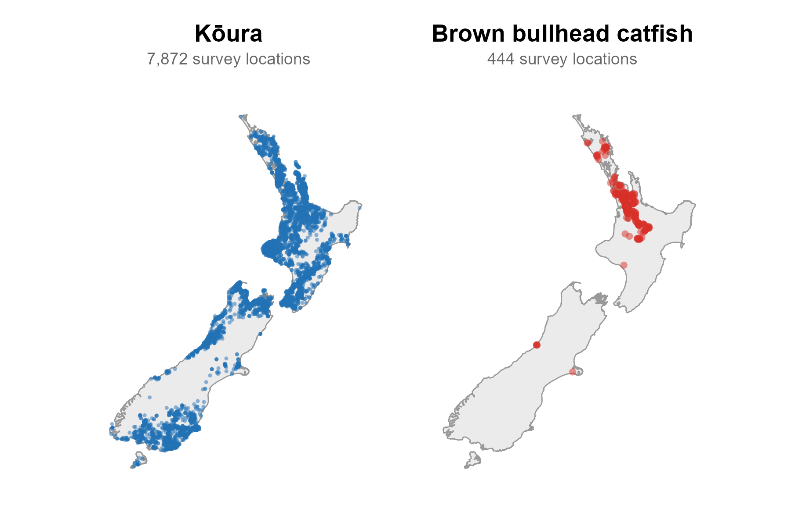
Biology, ecology, and habitat use
Kōura inhabit a range of freshwater environments including streams, rivers and lakes and have been described as ecosystem engineers and keystone species in Aotearoa (Collier et al. 1997; Usio and Townsend 2004). Kōura are associated with structurally complex habitats that provide physical shelter, preferring coarse gravel and rocky substrates in both streams and lakes (Jowett et al. 2008; Kusabs et al. 2015b). In streams, the highest abundances have been recorded on substrates with an average particle size of 130 mm (Jowett et al. 2008; Olsson 2008). Kōura avoid areas where dissolved oxygen levels drop below 5 mg L\(^{-1}\) and temperatures exceed 21 °C (Devcich 1979). Kōura are nocturnal, and during the daylight hours they retreat to deeper waters or into shelters, to hide from visual predators. At night they emerge and migrate to forage in the productive shallow zones of lakes (Devcich 1979). Where suitable natural substrates are rare, kōura can excavate tunnels or burrows to provide cover, a behaviour documented in Lake Tikitapu, where substrate permits burrowing. Kōura have direct development, meaning juveniles hatch as miniature adults with no free-living larval stage. Females carrying eggs and newly hatched juveniles beneath the abdomen for approximately three weeks before release, typically at depths of less than 10 m in lakes (Parkyn and Kusabs 2007). Juveniles mature in two to three years depending on water temperature (Devcich 1979; Parkyn 2000).
Cultural significance and population decline
Kōura continue to be an important food source for Māori and are considered a taonga (treasured) species (Parkyn and Kusabs 2007; Kusabs and Quinn 2009). Māori harvest kōura alongside other kai (food) in specific periods of the year according to Maramataka (the Māori lunar calendar) (Henare 2008). For kōura, this period is from beginning of kōanga (spring) until halfway through ngahuru (autumn). Kōura are traditionally harvested using baited traps, handpicking, or the tau kōura which uses several whakaweku (fern bundles) attached to a tāuhu by pekapeka (Figure 3) (Parkyn and Kusabs 2007; Kusabs and Quinn 2009). In the Rotorua Te Arawa Lakes (a group of twelve volcanic lakes in the central North Island, see Study system below), kōura fisheries held significant cultural, economic, and nutritional importance. Historically, kōura were not only a vital food source but also served as a medium for trade and barter among the Te Arawa iwi and hapū. The tau kōura is still used today, but mostly for routine monitoring of kōura abundance in lakes (Kusabs and Quinn 2009; Kusabs et al. 2018). Kōura monitoring from 2005 to 2025 revealed declines of 76 % and 91 % in kōura catch per unit effort (CPUE) in Lakes Rotorua and Rotoiti respectively (Figure 4). These declines reflect a multiple-stressor problem: long-term water quality deterioration and habitat loss from invasive macrophytes have reduced kōura populations over decades, with the recent establishment of the brown bullhead catfish (Ameiurus nebulosus) as a novel predator compounding these pressures and accelerating the decline (Kusabs et al. 2026).

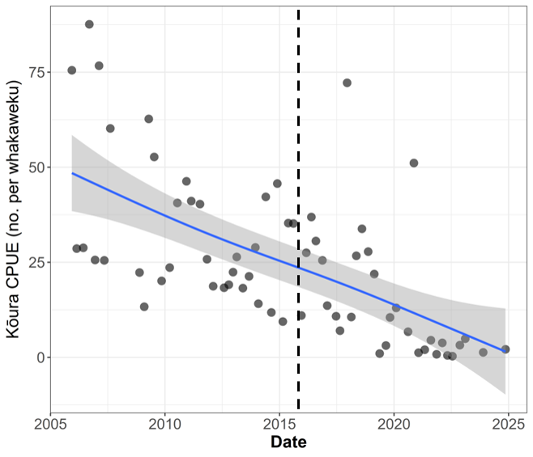
Brown bullhead catfish: a novel predator in Aotearoa lakes
The brown bullhead catfish (Ameiurus nebulosus Lesueur 1819, hereafter catfish) is native to North America but has been introduced worldwide for aquaculture and as a game fish, contributing to profound ecological and economic disruption that biological invasions cause globally (Haubrock2026?). In Aotearoa, 140 individuals were introduced in 1877 to Lake St John (Lake Waiatarua) in the Auckland region, reportedly by mistake, as the intended species was the channel catfish (Ictalurus punctatus (Rafinesque, 1818)) (Barnes 1996). Although Lake St John has since been drained, catfish persisted and have spread throughout the upper North Island via accidental and deliberate releases (Figure 2). Lake Taupō was first invaded in 1985 following an illegal release (Barnes 1996). In the Rotorua Te Arawa Lakes, a dead catfish was found at Okawa Bay in Lake Rotoiti in 2009 (Blair and Hicks 2009) and sightings followed in 2014, but surveys failed to detect catfish until 2016, when multiple individuals were found at the western end of Lake Rotoiti, including Te Weta Bay where catfish were recovered during macrophyte harvesting operations (Francis 2019). Catfish subsequently spread to Lake Rotorua in 2018 via the Ōhau Channel. Since 2016, routine monitoring and active control fishing have been carried out to reduce their impact (Grayling 2020).
Catfish are physiologically tolerant of a wide range of conditions, including elevated temperatures and low dissolved oxygen (Scott and Crossman 1973); this resilience allows them to persist under stressors that increasingly impact native species (Lee et al. 2025). They are omnivorous benthic feeders, with individuals reaching 200-455 mm in length and living up to eight years (Barnes 1996). Their diet overlaps with, and partly consists of, native species leading to both competition and direct predation (Figure 5) (Scott and Crossman 1973; Dedual 2019). Catfish are known predators of kōura, and have contributed to declining kōura CPUE in Lakes Rotorua and Rotoiti (Kusabs et al. 2026). While kōura abundance had been declining before catfish establishment, the decline became less variable after 2016, with fewer recovery periods, suggesting catfish have reduced the population’s capacity to rebound (Kusabs et al. 2026). Catfish habitat use varies seasonally: in lakes, catfish occupy depths down to approximately 17 m (Dedual 2002) and shift between weedy and rocky habitats depending on the season, primarily rocky habitats in winter when macrophytes die back, and both habitat types during autumn and spring (Barnes 1996; Barnes and Hicks 2003). Spawning occurs in nests excavated in mud or sand, typically in shallow areas near rocks or submerged tree trunks for protection (Scott and Crossman 1973). Nests are roughly the size of the female, who may carry between 2,000 and 13,000 eggs depending on body size (Scott and Crossman 1973). Acoustic tagging of catfish in Lake Rotoiti confirmed these seasonal patterns: catfish concentrated in nearshore shallows during spring and summer, likely seeking warmer water for feeding and reproduction, before dispersing to mid-water offshore habitats in winter rarely exceeding 15 m depth even when the lake is considerably deeper (Blanchfield2026?).
Critically, Aotearoa lacks native Siluriformes, meaning kōura and other native fauna have no evolutionary history with catfish and may therefore fail to recognise them as a predator, a phenomenon termed predator naiveté (Sih et al. 2010; Carthey and Banks 2014). Predator naiveté can leave prey populations particularly vulnerable because effective antipredator responses are often shaped by prior exposure over evolutionary time (Sih et al. 2010). However, prey may alternatively respond with generalised fear toward any novel or unfamiliar stimulus, producing exaggerated antipredator behaviour regardless of actual threat level (Sih et al. 2023). Beyond direct consumption, predator presence alone can alter prey behaviour by increasing refuge use, decreasing movement and, suppressing foraging. These non-consumptive effects (NCEs) can lead to reduced growth and reproduction (Preisser and Bolnick 2008). The availability of physical refugia is central to mediating these effects as structurally complex habitats allow prey to shelter from predation risk while retaining access to foraging opportunities (Selwood2020?). Restoring structural habitat may therefore reduce the effect of fear of living alongside a novel predator.

Study system: the Rotorua Te Arawa Lakes
This research was conducted in the Rotorua Te Arawa Lakes, a group of twelve volcanic lakes in the central North Island of Aotearoa (Bay of Plenty region; Figure 6; Table 1). The lakes were formed by rhyolitic volcanic activity over the past ~230,000 years and continue to experience volcanic influence, most recently through the 1886 eruption of Mount Tarawera, which deposited basalt scoria and the distinctive Rotomāhana Mud across the surrounding catchments (Cole et al. 2014). The lakes vary considerably in size (0.3-81 km²) and maximum depth (13.5-125 m), and span a gradient of mixing regimes and trophic states from oligotrophic (e.g. Tarawera, Rotomā) to eutrophic (e.g. Rotorua, Ōkaro; Table 1). This diversity makes the Te Arawa Lakes a particularly informative system for studying how kōura respond to differing combinations of habitat structure, water quality, and predator presence.
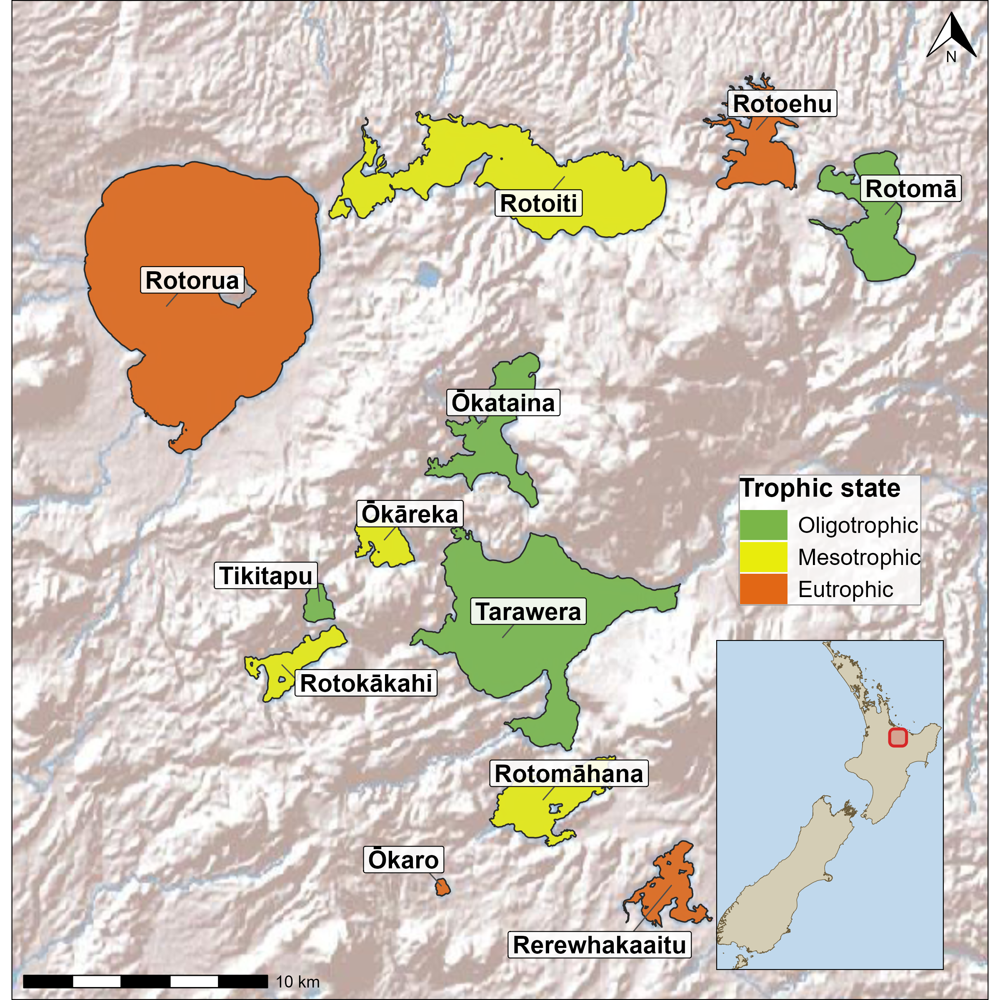
The lake beds are owned by the Te Arawa Lakes Trust (TALT), with the exception of Lake Rotokākahi, which remains under the guardianship of Tuhourangi and Ngāti Tumatawera iwi. TALT, in collaboration with Te Komiti Whakahaere, oversees the harvest of ngā taonga in the Te Arawa Lakes under a fisheries management plan (Te Arawa Lakes Trust 2015), reflecting the deep cultural and ecological significance of the lakes to Te Arawa iwi and hapū.
Each lake supports a mix of native and introduced species. Alongside kōura and catfish discussed above, native taxa include the freshwater mussel kākahi (Echyridella menziesii), kōaro (Galaxias brevipinnis), bullies toitoi (Gobiomorphus cotidianus), and common smelt (Retropinna retropinna). Introduced species include brown and rainbow trout (Salmo trutta, Oncorhynchus mykiss) and goldfish morihana (Carassius auratus). The lakes also support a mix of native macrophytes and several invasive species that have transformed the littoral zone in many lakes (Burton 2017) (Figure 7). Current lake management prioritizes improving water quality and controlling invasive species. This includes: alum dosing (aluminium sulphate) in Lakes Rotorua and Ōkaro to reduce phosphorus loading, mechanical and chemical control of invasive macrophytes, and the community-led “Catfish Killas” programme, which aims to eliminate catfish from the lakes.

Compounding threats to kōura habitat
In addition to predation by catfish, kōura face multiple interacting stressors that progressively restrict the habitat available to them (Kusabs et al. 2015a; Lee et al. 2025). Kōura are naturally found in more rocky habitats (Jowett et al. 2008; Kusabs et al. 2015b) or in deeper parts of the lake which provides refuge from visual predators during daylight hours. At night, kōura migrate vertically into the productive littoral zone to forage (Devcich 1979). The use of both shallow and deep habitats means that, for kōura to thrive, both must remain accessible and habitable. In stratified lakes during summer and autumn, thermal stratification can create anoxic conditions below the thermocline, displacing kōura from their daytime deep refuge into the shallow littoral zone (Kusabs et al. 2026). Kōura avoid dissolved oxygen concentrations below 5 mg L\(^{-1}\) (Devcich 1979), and thermal stratification can force upward displacement, placing kōura in the depth range where catfish predation pressure is greatest as catfish rarely occur below 17 m (Dedual 2002). The result is a seasonal compression of available habitat, where suitable depths shrink to precisely the zone where predation risk is highest. The importance of an oxygenated deep refuge is illustrated by Lake Taupō (maximum depth 186 m), where catfish and kōura co-exist because deep waters remain oxygenated below the thermocline year-round, providing continuous suitable habitat for kōura (Verburg and Albert 2019; Kusabs et al. 2026). In Lake Rotoiti, this deep refuge becomes anoxic and unavailable for kōura (Kusabs et al. 2026).
The shallow refuge available to kōura is also being progressively reduced as lake surface water temperatures increase above the kōura optimal temperature threshold of 21 °C (Devcich 1979). Furthermore, dense beds of invasive macrophytes obstruct kōura movement through the littoral zone and reduce access to foraging habitat (Kusabs and Quinn 2009). When these macrophyte beds collapse, the subsequent decomposition further intensifies oxygen depletion in deeper waters (Vincent et al. 1984; Hamilton et al. 2005). The shallow zone is therefore both structurally altered and contributes to the loss of deep refuge. The cumulative effect of these stressors can be visualised by estimating the proportion of each lake’s bottom area that remains “livable” meaning sufficiently oxygenated and within thermal optimum for kōura. Across eleven of the Rotorua Te Arawa Lakes, livable habitat varies strongly with season, with sharp summer declines in eutrophic and shallow lakes such as Rotorua, Rotoiti, Ōkaro, and Rotomāhana, while deeper oligotrophic lakes such as Rotomā, Tarawera, and Tikitapu remain relatively stable year-round (Figure 8). Over the past ~20 years several lakes show statistically significant declines in annual mean livable habitat, with Rotorua and Ōkāreka declining -0.5 % yr\(^{-1}\) (Figure 9).
Climate change is expected to intensify all of these pressures. Stronger and longer thermal stratification will expand and prolong anoxic conditions below the thermocline (Woolway et al. 2021), while warming surface waters are projected to expand the range of suitable catfish habitat in Aotearoa (Lee et al. 2025). The compression of suitable kōura habitat documented here is therefore likely to accelerate, reinforcing the need to understand which habitats kōura prefer and whether structural restoration can build resilience in kōura populations. In lakes where muddy substrates provide limited refugia, adding rocky substrate has been shown to relax refugia limitation and increase crayfish population density (Johnsen and Taugbøl 2008).
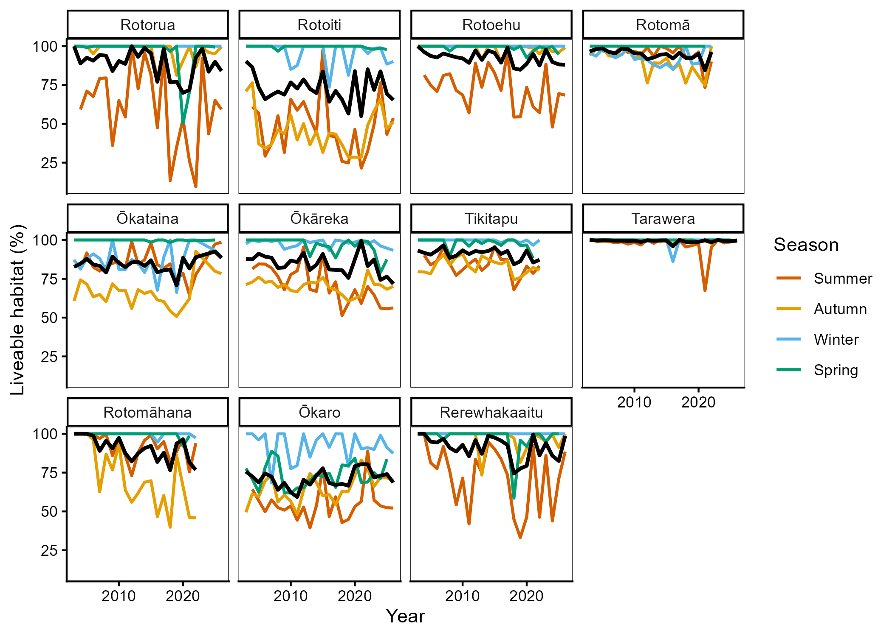
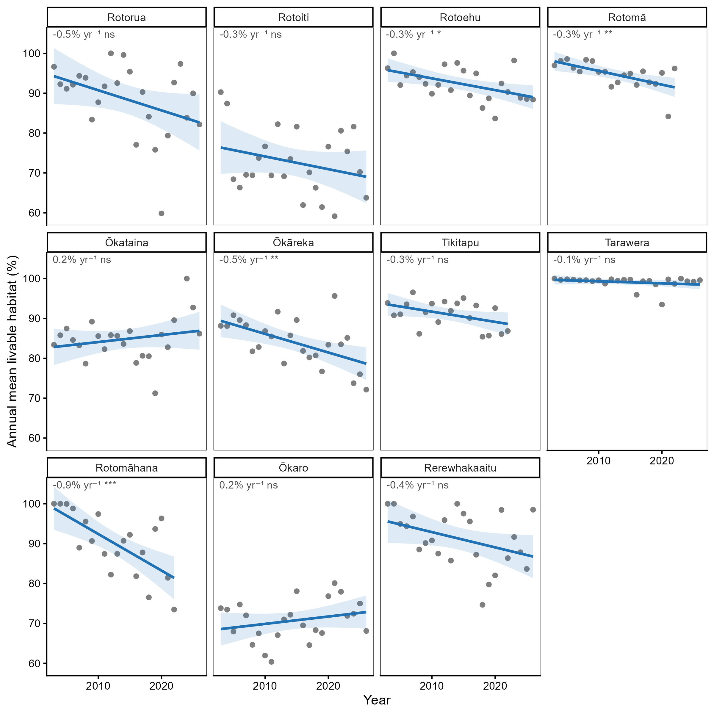
Knowledge gaps and thesis aims
The previous sections established that kōura populations in the Rotorua Te Arawa Lakes are declining because of multiple interacting pressures, such as invasive predation, eutrophication, thermal stratification, and macrophyte expansion. It was also shown that their suitable habitat is both seasonally compressed and progressively shrinking (Kusabs et al. 2026). Although the broad drivers of decline are increasingly well understood, several critical knowledge gaps limmit our ability to design effective interventions, particularly around how kōura interact behaviourally with catfish as a novel predator, and around the role of habitat structure and refugia in mediating those predator-prey interactions, questions relevant to to freshwater prey specis facing novel predatores globally. First, while catfish are implicated as a key driver of kōura decline, the effect catfish have on kōura behaviour leading to non-consumptive effects in comparison with native predators had not been quantified. We therefore conducted aquarium experiments in which kōura refuge use was recorded when exposed to native longfin eels and to catfish. We expected that kōura would show no response to catfish consistent with predator–prey naïveté (Sih et al. 2010), or that they would show stronger antipredator responses to the novel catfish than to native eels, consistent with generalised fear response (Sih et al. 2023). Second, the natural habitats that kōura prefer had been described in streams and deeper parts of lakes but which shoreline habitat features kōura prefer remained unknown. We therefore monitored kōura presence at 60 shoreline sites across five of the Rotorua Te Arawa Lakes, recording habitat features and fish species. We expected that rocky substrates with high structural complexity would be the primary predictor of kōura presence, consistent with stream habitat studies (Jowett et al. 2008; Olsson 2008). Third, although habitat enhancement structures had been applied in freshwater systems globally to support fish and invertebrates (Smokorowski and Pratt 2007; Santos et al. 2011), few studies had tested which combinations of material and structural configuration best support crayfish specifically. We therefore designed and tested multiple shelters configurations using wood and stone in mesocosm experiments. We expected that configurations providing multiple crevices of varying sizes would be preferred by the widest range of kōura, including juveniles. Finally, no field deployments of habitat enhancement structures for kōura in lakes had previously been reported. Therefore, we deployed stone piles in Lake Rotoiti and expected that kōura populations at the stone piles would increase, as providing more refuge habitat would allow more kōura to avoid predators. A secondary aim of the final study was to identify potential unintended consequences of habitat enhancement, including the risk that structures may provide refuge for catfish. This thesis addresses each of these gaps in turn through four research chapters, building from behavioural mechanisms in controlled conditions, through natural habitat use, to structure design, and finally to field deployment.
Research questions and thesis structure
This thesis pursued two complementary sets of aims. The first was to advance fundamental ecological knowledge about how a naïve prey species responds behaviourally to a novel predator, and about the role of habitat structure in mediating predator-prey interactions, questions with global relevance to freshwater systems facing invasive species. The second was applied: to identify optimal strategies for restoring and enhancing kōura populations in the Rotorua Te Arawa Lakes through structural habitat enhancement. The findings of this thesis are reported in the following four research chapters, followed by a synthesis and a general conclusion (Table 2).
| RQ | Chapter | Research question |
|---|---|---|
| 1 | 2 — Native vs. Novel Threats | How do native and non-native predators differentially influence antipredator behaviour and refuge use in kōura? |
| 2 | 3 — Where do Kōura Live? | Which natural shoreline features do kōura prefer? |
| 3 | 4 — The Importance of Structure | Does shelter structure or material composition drive kōura refuge selection? |
| 4 | 5 — Rock Piles as Kōura Habitat | Can habitat enhancement structures provide effective habitat for kōura in Lake Rotoiti? |
Before the deployment of any structures, it was first necessary to understand the response of kōura when exposed to native and novel predators. Therefore in Chapter 2, kōura were exposed to native eels and to novel catfish in an aquarium study where refuge use was analysed. In Chapter 3, the natural preferred shoreline habitat for kōura was investigated by monitoring 60 sites over five lakes. From this we gained a clearer picture of which habitat features support kōura and which shoreline areas would most benefit from structural enhancement. In the next chapter, Chapter 4, we designed and tested shelter types to determine kōura preference. Kōura are known to use various materials and compositions, so for this study we tested different configurations of wood and stone structures in mesocosm experiments to determine kōura shelter preferences. With an optimal design identified, Chapter 5 deployed five stone pile structures along the shoreline in Lake Rotoiti and monitored kōura colonisation and abundance development over 18 months. In Chapter 6 two further case studies are synthesised: a pilot stone pile deployment in Lake Ōkaro where water quality and kōura reintroduction were monitored, and a deeper-water deployment across a depth gradient in Lake Rotoiti, where ROV surveys were used to assess kōura use of the structures beyond wading depth. Finally, the General Conclusion presents an overview of the findings and considers how structural habitat restoration can contribute to building resilience in declining freshwater crayfish populations more broadly. As each of the four chapters are written as stand-alone manuscripts, some overlap of background information and methods is unavoidable. However, the general introduction provides a comprehensive overview of the study system, the species involved, and the research questions addressed in this thesis.
Native vs. Novel Threats
Abstract
The non-consumptive effects (NCEs) of predators on prey result in costly antipredator behaviours, including increased refuge use and reduced foraging. NCEs significantly influence prey population dynamics, community interactions, and affect ecosystem functioning, particularly when the prey are keystone species. In Aotearoa-New Zealand, the native freshwater crayfish kōura (Paranephrops planifrons) is a keystone species with an important functional role affecting sediment bioturbation, nutrient cycling, and benthic community structure. Kōura are preyed upon by multiple predators including native longfin eel (Anguilla dieffenbachii) and invasive brown bullhead catfish (Ameiurus nebulosus). Under laboratory conditions, we tested whether visual and chemical cues from these two predators induced different refuge-seeking and feeding behaviour responses by kōura. Predator presence produced in the dark a NCE on refuge use, with kōura exposed to catfish showing significantly greater refuge-seeking behaviour than those exposed to eels. This result is consistent with the generalisation theory triggered by unfamiliar predator cues rather than classic prey naivety. Our study indicates catfish incursions may provoke a greater NCE on kōura behaviours than resident eels. As catfish range expansion continues, these NCEs may represent an ecologically significant and underappreciated threat to kōura populations, compounding the direct predation pressure already documented for this invader.
Introduction
Biological invasions can have profound impacts on invaded ecosystems, particularly through the introduction of novel predators that prey upon naïve native species lacking coevolved defence mechanisms (Doherty et al. 2016). Native prey may be naïve not just to a specific invader, but to entire functional groups of predators, making them especially vulnerable to direct predation when an invasion introduces a predator type entirely absent from their evolutionary history (Sih et al. 2010; Carthey and Banks 2014). In addition to these consumptive effects, native prey may exhibit heightened fear responses to invasive predators, leading to the development of anti-predator behaviours such as increased refuge use and avoidance of open habitats (Kindinger and Albins 2017). These behavioural changes, termed non-consumptive effects (NCEs), can substantially influence population dynamics by reducing foraging activity, growth, and reproductive output (Preisser et al. 2005). In contrast, native predators generally elicit different responses because prey and predators have coevolved, resulting in behavioural and physiological adaptations that stabilise predator–prey interactions (Abrams 2000).
Chemical signals (kairomones) are a key component of NCEs (Kasumyan 2022). Freshwater crayfish release and detect kairomones to help navigate aquatic environments and mediate interactions with predatory fish (Blake and Hart 1993; Brönmark and Hansson 2012; Wood and Moore 2020a). Kairomones carry signals via excreta, mucus, or skin, that crayfish use to detect predators (Appelberg et al. 1993). Crayfish respond more strongly to signals from predators that have consumed conspecifics and to alarm cues released when conspecifics are injured or killed (Gherardi et al. 2011; Beattie and Moore 2018). The NCEs due to kairomone detection include reduced growth, reduced activity levels (Adams 2007; Ramberg-Pihl and Yurewicz 2020), and altered social dynamics like the use of refuge spaces (Driscoll et al. 2020). Non-predatory fish can also trigger behaviour changes, likely through an increased awareness of potential risk (Nyström 2005). However, the strength of these responses depends on prior experience as wild-caught individual crayfish show stronger antipredator responses than farmed conspecifics naïve to predators (Martin 2014), indicating that both learned behavior and evolutionary history shape kairomone detection.
In Aotearoa-New Zealand (hereafter Aotearoa), the endemic northern freshwater crayfish Paranephrops planifrons (White, 1842) is a keystone species impacted by non-native species. This crayfish species is commonly known as kōura and is a taonga (culturally treasured) species for Māori, the indigenous people of Aotearoa, with strong cultural values as a food resource (Kusabs and Quinn 2009). Ecologically, kōura play a critical role as ecosystem engineers through their effects on sediment dynamics, nutrient cycling, and benthic community structure (Collier et al. 1997; Parkyn et al. 2001; Usio and Townsend 2004). Currently, kōura are threatened by multiple stressors, including climate change, water-quality degradation and invasive species, contributing to widespread population declines (Lee et al. 2025; Kusabs et al. 2026).
Kōura have a long coevolutionary history with the native longfin eel (Anguilla dieffenbachii) (hereafter eel) and shortfin eel (A. australis) in Aotearoa (Brown 2009; MacNeil et al. 2025). Reflecting this coevolutionary history, kōura can respond more strongly to eel kairomones than to those of introduced non-native brown trout (Salmo trutta), even when sourced from streams where both predators were present (Shave et al. 1994). Shave et al. (1994) suggest that kōura predator recognition is a fixed behavioural trait shaped by coevolution. An invasive fish species that threatens kōura is the brown bullhead catfish (Ameiurus nebulosus) (hereafter catfish). Catfish were introduced to Aotearoa in 1877, and the invasive species has since spread to multiple lakes and rivers in the North Island (McDowall 1990; Barnes and Hicks 2003; Dedual 2019). For example, in 2016/18, the presence of catfish was confirmed in two large volcanic lakes, Lakes Rotoiti and Rotorua in the Bay of Plenty region, which have historically contained large populations of kōura (Francis 2019; Lee et al. 2025). Catfish are highly tolerant of a wide range of environmental conditions (Scott and Crossman 1973; Lee et al. 2025) and their broad gape and opportunistic feeding behaviour enable the consumption of a wide variety of aquatic prey (Scott and Crossman 1973; Dedual 2019). Given Aotearoa lacks native Siluriformes, the recent and ongoing spread of catfish into North Island waterways represents a truly novel predation threat to which kōura may lack adequate behavioural or sensory adaptations to respond.
In this study, we used controlled laboratory experiments to test whether the presence of a novel and native predator induced differences in kōura NCEs, specifically refuge-seeking and feeding behaviours. Our experiments tested the following two hypotheses regarding kōura behavioural responses to predator cues: 1) Kōura would show less shelter-seeking behaviour when presented with catfish compared to eels, due to naivety towards a novel predator (Carthey and Banks 2014); or 2) kōura would respond more strongly to unfamiliar catfish cues than to the native eel, consistent with a generalised fear response to a novel predator type (Sih et al. 2023). Further, we expected that light regime would have an influence on shelter seeking behaviour, as kōura, like many crayfish, are primarily nocturnal (Devcich 1979; Johnson et al. 2014). We also predicted that kōura feeding rates would follow the patterns hypothesized above and either be more in the presence of catfish than eels, reflecting stronger antipredator responses to the native predator, or reduced in the presence of the unfamiliar invasive predator, reflecting a generalised fear response to the novel predator. Overall, the refuge-use and feeding experiment aimed to improve understanding of the behavioural mechanisms underlying kōura vulnerability to invasive catfish, and how these responses may differ, and add to, those displayed in the presence of native predators such as eels.
Materials and Methods
Animal collection and preparation
In mid-August 2025, 92 kōura were sourced from two catfish-free lakes, Ōkāreka and Tikitapu, within the Rotorua Te Arawa Lakes area in the North Island of Aotearoa. Eels are rare or absent in these lakes (Martin et al. 2007), potentially limiting the recent coevolutionary history with local kōura populations. However, eels are a native predator that has a long record of coexistence with kōura in Aotearoa (McDowall 1990; Feldmann and Pole 1994; Kaulfuss et al. 2018). In this study our focus was on the macroevolutionary implications of the native predator compared to a novel invader, regardless of the local coevolutionary history. In late September 2025, catfish and eels were sourced from Lake Rotoroa in Hamilton in the Waikato region of the North Island. Experiments were conducted at the Aquatic Research Centre of the University of Waikato. All three species were held separately in holding tanks and acclimated for a week in the laboratory conditions. These included a 10:14 light:dark cycle reflecting the seasonal day-length and dechlorinated tap water with stable temperatures (15.6 °C), pH (8.4) and dissolved oxygen concentrations (10 mg l\(^{-1}\)). These parameters reflect typical physiochemical conditions in the source lakes. Kōura and fish were fed every other day with commercial carnivore pellets (Hikari Tropical, Kyorin Food Industries Ltd., Japan; animal protein 47 %). Because kōura are a taonga (treasured) species, permission was obtained from Te Arawa Lakes Trust and Te Komiti Whakahaere. All experimental procedures were conducted under University of Waikato animal ethics committee approval (protocol number: 1232; see Ethical Approval section).
Refuge experiment
Prior to the experiments all animals were individually weighed and measured. Only male kōura were used as male crustaceans are usually the most bold and aggressive (Stein and Magnuson 1976; Figler et al. 2005) and restricting test animals to a single sex allowed a smaller overall number of kōura to be used. Kōura had a mean (± SD) orbital carapace length (OCL) of 26.0 mm (± 3.08) (18.35-32.95 mm range) and a mean (± SD) wet weight of 11.7 g (± 4.25) (3–23 g range). Catfish ranged in length from 260-267 mm and 2.34–3.16 kg wet weight and eels ranged in wet weight from 2.50-3.52 kg, with both these size ranges being able to consume adult kōura (Hicks 1997; Barnes and Hicks 2003; Ryan 2009).
Experiments were conducted in 38 L glass tanks (600 × 200 × 220 mm) with each tank having three sides (apart from front of tank) blacked out to block visual cues from neighbouring tanks. Each tank was divided into two compartments by a 0.5 mm steel mesh divider, allowing visual and chemical cues between compartments, while preventing any physical contact between fish and kōura on either side of the barrier (Figure 10). All tanks were filled with ~26 L dechlorinated tap water and had identical environmental regimes as previously detailed for acclimatisation tanks, with water flow provided by an air stone. Each tank housed a single kōura on one side of the barrier and either a single predator (catfish or eel) or no predator (control) on the other side. A halved terracotta pot (90 mm diameter × 90 mm depth) was positioned on the kōura side of the tank to serve as a potential refuge. To control for potential tank location or compartment side effects, the position of predator treatments within the aquaria was systematically rotated between experimental rounds. The experiment was conducted across eight rounds (each lasting 5 hours), four rounds under light conditions (~400 lux, n = 32 kōura: 11 catfish, 11 eel, 10 control) and four separate rounds with different kōura under dark conditions (~70 lux, n = 32 kōura: 11 catfish, 11 eel, 10 control). Observations were made in the dark using red lighting positioned centrally above the tanks to minimize disturbance, as many aquatic species have limited sensitivity to red wavelengths and are unlikely to perceive this part of the spectrum. Following each individual experimental run, each tank was thoroughly cleaned and refilled with dechlorinated tap water before reuse. Each individual kōura was only exposed once to a fish predator and there were no mortalities of kōura or fish during experiments. All experiments were conducted within a three-week period during October 2025.
At the beginning of each experiment, an individual kōura was placed in the middle of the tank compartment containing the refuge. Kōura location was recorded at 21-time intervals over a 5-hour period, with observations spaced at progressively longer intervals to capture immediate behavioural responses at key timepoints (predator introduction at 60 min, removal at 240 min). The 0-minute recording was the individual’s initial immediate location after its addition to the tank. Kōura location was recorded as either refuge (the animal was using the refuge, being inside it or immediately behind it and touching it) or non-refuge/ in the open (any other location in the tank where the animal was not in the refuge or touching the refuge). The control tanks had no fish added but at 60 minutes and again at 240 minutes, the water in the ‘predator’ compartment was mechanically disturbed by agitating the water with a small hand net for approximately 30 seconds. This was to simulate the disturbance time associated with adding and removing fish in the other treatments with the same size hand net. At the end of each experiment, the kōura was removed after the final 300-minute observation.
Feeding experiment
Experiments were conducted in glass tanks (320 × 170 × 170 mm), containing 5 L dechlorinated tap water and a halved terracotta pot (90 mm diameter × 90 mm depth). Catfish and eels had been held at the same density in separate identical holding tanks for a week prior to experiment. Fish exudates were collected by placing four fish (catfish or eel) in a 10 L bucket filled with water from the holding tanks for 15 minutes to concentrate the kairomones in the water. For eel and catfish treatments, 1 L from the buckets was added to each tank already holding 5 L of tap water, and for control an additional 1 L of dechlorinated tap water was added. Next, 10 Hikari Tropical carnivore pellets were added to each tank. Experimental trials showed pellets remain intact in tap water for over 24 hours. In three rounds, a total of 46 male kōura were measured and weighed. Their mean (± SD) OCL was 27.93 mm (± 4.80), with a range of 20.48 to 40.88 mm, and the mean (± SD) wet weight of 15.83 g (± 8.99), ranging from 6.00 to 42.00 g. Each kōura was then placed individually in a tank. To investigate how starvation period influenced feeding motivation, each round kōura were starved for different periods (either 0, 3 or 4 days) prior to the feeding experiment. After 0 days starvation, 14 kōura were exposed to eel water (n = 4), catfish water (n = 6) or control water (n = 4). After 3 days starvation, 16 kōura were exposed to eel water (n = 6), catfish water (n = 5) or control water (n = 5). After 4 days starvation, 16 kōura were exposed to eel water (n = 5), catfish water (n = 5) or control water (n = 6). After 24 hours, when each experiment was terminated, the number of pellets eaten (to the nearest quarter pellet) was counted and the feeding rate (pellets eaten per gram of wet weight (WW) of kōura) calculated.
Data analysis
To analyse kōura refuge use, beta-binomial generalized linear mixed-effects models (GLMMs) were fitted using the glmmTMB package in R (Brooks et al. 2017; R Core Team 2025). To address potential non-independence of repeated observations within tanks, raw observations were first aggregated into three experimental periods (before, during, and after predator introduction) per individual kōura, with the number of observations in refuge out of total observations per period used as the response variable. Treatment (catfish, eel, control) and period (before, during, after) were included as fixed effects, and tank and experimental round as random intercepts. Because light condition and experimental round were fully confounded by design (rounds 1–4 in light, rounds 5–8 in darkness), separate analyses were conducted for each light condition to allow round as a random intercept and to test whether treatment effects varied under each light condition. A beta-binomial distribution was used to account for overdispersion in the binomial proportion data. Model fit was assessed using DHARMa simulation-based residuals, including tests for overdispersion and zero-inflation (Hartig et al. 2024). Marginal means and pairwise contrasts between factor levels were obtained using the emmeans package (Lenth et al. 2026), with p-values adjusted for multiple comparisons using Sidak correction. Additionally, a combined GLMM (without round as random effect) was fitted to test the overall effect of light condition across all treatments. Spearman rank correlations with Bonferroni-adjusted p-values were used to investigate potential relationships between kōura body size (OCL) and overall refuge use (all time intervals combined) in the three treatments.
Kōura feeding rate was analysed using a linear mixed model with pellets consumed per gram wet weight as the response variable and starvation period (0, 3, 4) as a fixed effect, with tank identity as a random intercept to account for potential tank-level clustering. Because each starvation period was conducted in a separate experimental round, starvation period and experimental round were fully confounded by design. Consequently, round was excluded as a random effect. However, starvation period was included as a fixed effect to test for differences in feeding across hunger states, acknowledging that observed effects may reflect round-specific variation rather than hunger alone. Model selection using AICc indicated that starvation period alone provided the best fit, with treatment not improving model fit (delta AICc = 14.38). Therefore, treatment effects were excluded from the main model and instead examined separately within each starvation period using stratified linear models to avoid confounding treatment comparisons with the starvation-round confounding. Model assumptions were verified using residual diagnostics (Q-Q plots and residual plots) and testing normality of residuals using the Shapiro-Wilk test. As residuals at day 0 starvation violated normality assumptions (p = 0.011), a non-parametric Kruskal-Wallis test was executed. Pairwise comparisons for starvation period were conducted using estimated marginal means with Sidak adjustment for multiple comparisons.
Results
Refuge experiment
The proportion of time kōura spent in refuge varied across treatments, experimental periods, and light conditions (Figure 11). Stratified analyses revealed that treatment effects on refuge use differed between light and dark conditions. Under dark condition, kōura exposed to catfish used refuge significantly more than those exposed to eels (p = 0.004; Table 3), however the control treatment in the dark was not significant with either the catfish or the eel treatment (p = 0.083, p = 0.565). In contrast, under light conditions, there were no significant differences in refuge use between the three treatments, but refuge use differed significantly between experimental periods, with lower refuge use before predator introduction compared to after predator removal (p = 0.021). No significant period effects were observed in dark conditions. The combined model showed that light regime had a significant effect on refuge use (p = 0.005), with kōura using refuge more in light than in dark conditions across all treatments. Overall, under light conditions, the pattern of refuge use in the control treatment was more similar to the catfish treatment, whereas under dark conditions it more resembled the eel treatment (Fig. 3; Table S1). There was also no relationship between kōura OCL and refuge use in any of the three treatments (rs = -0.09, p = 0.693, rs = 0.09, p = 0.680 and rs = 0.16, p = 0.494 for catfish, eel and control treatments respectively, all NS).
For all treatments individual kōura were highly variable in their movement around tanks and use of refuges, even in the time intervals comprising the first 60 minutes of the experiment, before fish were introduced. The coefficient of variations (CVs) for kōura refuge use in the light and the dark before fish introduction were similarly high, being 60.4 % and 58.2 % (both n = 32) respectively, confirming high baseline variation in kōura refuge use, regardless of treatment type. Despite this inherent variation in individual kōura behaviour, clear patterns in kōura refuge use were evident over the course of the experiment (Figure 12; (Table S1)). Under light conditions, the control showed the largest overall increase in refuge use (40% to 82%), driven primarily by a sharp rise in the ‘after’ period, while the catfish treatment showed a more sustained increase across all periods (52% to 73%) and the eel treatment the smallest increase (35% to 53%). Under dark conditions, the pattern shifted, with the catfish treatment showing the greatest increase (39% to 70%), while the eel treatment showed a modest and non-sustained increase (27% to 41% during ‘exposure’, returning to 36% ‘after’), and the control remained comparatively low throughout (37% to 47%).
Feeding experiment
The linear mixed model showed that starvation period had a significant effect on kōura feeding rate (3 days: p < 0.001; 4 days: p = 0.046; Figure 13; (Table S2)). Treatment was not included in the main model following model selection. Stratified analyses revealed no significant treatment effects across starvation periods. Although residuals at day 0 violated normality (Shapiro-Wilk p = 0.0112), the non-parametric Kruskal-Wallis test confirmed no treatment effect (p = 0.3165). Starvation days 3 and 4 met normality assumptions and showed no significant treatment effects (p = 0.1495 and 0.1573 respectively). After 4 days starvation, the mean (±SE) kōura feeding rate (pellets g WW\(^{-1}\)) for the control was over two and a half times that of the catfish and eel treatments (0.148 ± 0.035 compared to 0.059 ± 0.039 and 0.052 ± 0.039 respectively).
Discussion
Prey modify their behaviour in response to predation risk, creating a ‘landscape of fear’ that affects foraging, movement, and habitat use independently of actual predation events (Laundré et al. 2001). Our study adds to a growing body of literature (i.e., (Sniegula et al. 2025)) showing invasive predators can generate stronger NCEs on native prey than native predators, with potentially far-reaching consequences on invaded ecosystems. The results in our experiments suggest the introduction of a novel predator may change the prey’s fear landscape in ways that a native predator does not. Kōura are a keystone species that act as ecosystem engineers in Aotearoa freshwaters, meaning that predator-induced changed in kōura behaviour may indirectly affect ecosystem-level properties (e.g., resources or other species) through non-consumptive pathways (Peacor and Werner 2001). Such indirect effects represent a form of behavioural trophic cascade (Schmitz et al. 1997), whereby predator presence alone drives ecosystem-level change. Our results also highlight that prey naivety does not necessarily manifest as a failure to respond to novel predators. Instead, naïve prey may exhibit an over-avoiding response consistent with generalisation theory (Sih et al. 2010; Ehlman et al. 2019), which potentially has important implications for predicting the ecological impacts of invasive species.
Refuge use
Under dark conditions, kōura demonstrated greater refuge-seeking behaviour when exposed to the novel catfish than to native eel. This result is notable because it contradicts the classic prey naivety hypothesis, which predicts that prey underestimate or fail to appropriately respond to novel predators due to a lack of shared evolutionary history (Carthey and Banks 2014). Instead, kōura seemingly exhibited an enhanced defensive response to the novel predator. Such over-responses to unfamiliar predators are less commonly reported but are consistent with fear generalisation theory, whereby experience with native predators primes a generalised heightened vigilance response to any unfamiliar threat (Ehlman et al. 2019; Sih et al. 2023). For naïve prey, unfamiliar cues could trigger such a response because the consequences of ignoring a potential predation threat could be fatal, even when, in reality, the actual predation risk is absent (Dawkins and Krebs 1979; Lima and Dill 1990). Such generalised responses are often overcautious and energetically costly because prey may initially treat uncertain threats as highly dangerous until further experience is acquired (Sih et al. 2010). Unlike classic prey naivety scenarios where the novel predator poses no actual threat, catfish genuinely predate kōura, meaning the heightened refuge response carries a real energetic cost but is not disproportionate to the actual risk of predation. Elevated refuge use is itself a meaningful NCE, reducing foraging time with potential consequences for growth, reproduction, and population persistence (Preisser et al. 2005; Sheriff et al. 2020). However, this behaviour may simultaneously confer protection against direct predation as experimental evidence shows that shelter significantly reduces catfish predation on crayfish (Adams 2007; Zhao et al. 2024). This result suggests that enhancing or restoring habitat complexity in catfish-invaded lakes could mitigate both direct predation and fear-driven reductions in foraging, though direct field testing is needed.
Before fish were added to the tanks, refuge use by koūra was similar across treatments but highly variable at the individual level, reflecting substantial behavioural variation. The control treatment showed increasing refuge use over time, particularly under light conditions, which is unsurprising given that kōura are nocturnally adapted and need to remain hidden during daylight to avoid visual predators such as cormorants (Devcich 1979). Importantly, treatment effects on refuge use depended on light condition. Under dark conditions, when kōura are naturally more active, catfish exposure resulted in significantly greater refuge use than eel exposure. Control refuge use was intermediate between the two predator treatments, though the reasons for this pattern are unclear from the current data. The contrasting responses of kōura to catfish and eels indicates biologically meaningful differences in NCE between exposure to a novel and native predator.
Unlike the response when exposed to catfish, kōura reduced their refuge use in the presence of eels. This contrasting response likely reflects the long evolutionary relationship between kōura and eels, though the strength of coevolutionary adaptation in these specific lakes remains uncertain. The lakes naturally have restricted access to the coast limiting the number of eels present and historical vulcanism has affected these dynamics with a potential historical separation approximately 700 years ago following the Kaharoa eruption (~AD 1314; (Hogg et al. 2003)). Nevertheless, kōura probably were able to recognise chemical and visual cues from the eels and respond in a proportionate rather than precautionary way (Shave et al. 1994). Instead of hiding, kōura may rely on contextual information, such as predator size, movement patterns, or chemical concentrations, to modulate their response (Wood and Moore 2020b). This calibrated response makes ecological sense as longfin eels are the most widely distributed fish in the freshwaters of Aotearoa (McDowall 1990), and a persistent high-intensity refuge response to eels would likely impose substantial foraging costs. Whether shaped by deep coevolutionary history or by recognition of eels as an established native predator, kōura show a nuanced, context-dependent response to eels rather than an over-generalised avoidance strategy. This pattern was most pronounced in the dark conditions, where kōura refuge use in all three treatments began similarly but changed progressively over the course of the experiment. Kōura in the catfish treatment steadily increased their refuge use, while kōura in the eel treatment showed similar behaviour to those in the control treatment, with decreases to baseline levels by the end of the observation period. This result suggests that under conditions most relevant to natural activity by kōura, chemical recognition of the familiar eel predator is sufficient to enable a calibrated, low-cost response, while the unfamiliar catfish continues to elicit sustained precautionary refuge use (Shave et al. 1994; Wood and Moore 2020a). Beyond predator recognition, the reduced refuge use observed in eel-exposed kōura may not reflect a lack of response but could instead represent active escape-searching behaviour (i.e. a “flight” response). If this was the behavioural motivation, kōura would be attempting to move away from an area where they perceived themselves as vulnerable in the confined tank space, rather than retreating to a refuge where they might be prone to a known predator.
Feeding behaviour
NCEs are not a single process but emerge from the interaction between sensory ecology and environmental context. The absence of a kairomone effect on feeding in this study likely reflects a combination of methodological constraints rather than an absence of NCEs on foraging behaviour. The feeding experiment, in which predators were presented solely through chemical cues without visual information, did not demonstrate a clear fish predator NCE on kōura. This may have been due to the concentration of predator kairomones not being high enough to exceed detection thresholds (Brown et al. 2004), the starvation conditions during the experiment, the restricted time frame of the experiment, or a combination of these factors. Kōura can readily detect necrotic fish tissue and readily leave refuges to scavenge on catfish, eel, and marine fish carcasses with little discrimination between fish species, indicating that chemosensory responses in kōura may depend on cue type, context, and concentration rather than predator identity alone (MacNeil et al. 2025). The concentration of live fish exudates in our experiment relative to natural conditions is difficult to determine, while kairomones were concentrated by confining fish in a bucket, in our experimental tanks they were subsequently diluted in 5 L of water, not replenished, and potentially degraded over the 24-hour period. Whether the resulting concentration reflects, exceeds or falls below ecologically relevant levels in lakes where kōura and predators coexist remains unclear, and future studies should attempt to quantify natural kairomone concentrations to better calibrate experimental designs (Achtymichuk et al. 2025). In addition, many crayfishes show a stronger response to alarm cues of conspecifics (Stebbing et al. 2010; Gherardi et al. 2011; Ramberg-Pihl and Yurewicz 2020), and to kairomones from predators on a conspecifics diet (Beattie and Moore 2018). Fish predators in our experiments were maintained on the same diet as kōura for an extended acclimation period prior to exposure (see Methods), which may have further dampened or negated the threat signals received from kairomones (Smee and Weissburg 2006). Furthermore, the pre-experiment starvation period for kōura may have been insufficient to elicit a very strong feeding response, as crayfish such as kōura are opportunistic foragers which are necessarily adapted to going for prolonged periods without feeding (Hazlett 2003). The length of time since feeding can influence foraging behaviour, with previous studies indicating that crayfish will be more active foragers after being starved for at least three days (Hazlett 2003). In the current study, the longest starvation period was four days and at this point there was a clear discrepancy between the control feeding rate and the much lower feeding rates in the two fish treatments. Allowing for ethics and welfare concerns, if we had extended the starvation period, this may have elicited a stronger and prolonged response. Additionally, the stress of confinement in an artificial setting may itself have altered normal kōura feeding responses, as elevated baseline stress hormones are known to modify foraging behaviour independently of predator cue exposure (Clinchy et al. 2012). Finally, feeding was measured as a single endpoint after 24 hours, providing no information on whether kōura initially suppressed feeding after kairomone exposure before eventually resuming normal feeding activity (Wright et al. 2010). Further experiments using higher kairomone concentrations, longer starvation periods, and continuous feeding monitoring would help clarify whether non-visual predator cues generate NCEs on kōura foraging behaviour.
Conclusions
As ecosystems become increasingly novel under global change, the reliability of historical predator–prey cues may decline, amplifying behavioural mismatches (Sih et al. 2011). The present study provides experimental evidence that invasive brown bullhead catfish have the potential to exert stronger NCEs on kōura, an endemic freshwater crayfish when compared to their native predator, the longfin eel. The heightened refuge-seeking response to catfish likely reflects a generalised antipredator response triggered by unfamiliar chemical and visual cues, consistent with a fear generalisation framework. In contrast, the reduced response to eels suggests that familiarity with native predators enables kōura to make more proportionate risk assessments, although their behaviour may have also been an antipredator strategy. Future studies should particularly include kōura from eel-inhabited waterways, which would determine whether populations with a recent coevolutionary history with native eels display similar proportionate responses, thereby confirming whether the patterns observed here reflect broader adaptive differences across kōura populations with distinct predatory histories. Additionally, comparative studies of kōura sourced from catfish-invaded versus catfish-free catchments would be worthwhile to assess whether repeated exposure over multiple generations has resulted in rapid evolution or behavioural plasticity in antipredator responses, and whether catfish-experienced kōura show more calibrated responses to catfish presence than naïve kōura. Such evolutionary dynamics could have important implications for predicting kōura persistence in catfish-invaded systems (Sih et al. 2010). From a management perspective, translocation of kōura from catfish-experienced source populations into catchments facing imminent catfish invasion may represent a more feasible strategy for seeding populations with individuals capable of more adaptive responses. Although we found no significant NCE of fish exudates on feeding behaviour, our study suggests further investigations of non-visual predator cues on kōura foraging behaviour is warranted. Because kōura are a keystone species that ecosystem engineer, even a small increase in refuge use driven by catfish presence could have cascading effects on sediment dynamics, decomposition, and nutrient cycling in invaded lakes. As brown bullhead catfish continue to spread across Aotearoa’s rivers and lakes, management strategies aimed at protecting kōura should account for the behavioural cost of catfish NCEs alongside direct predation pressure as an underappreciated and ecologically significant dimension to this invasion.
Acknowledgements
We thank Te Arawa Lakes Trust and Te Komiti Whakahaere for the opportunity to collect and study the treasured kōura. We are grateful to Soweeta Fort-D’ath and William Anaru (Te Arawa Lakes Trust), and Tihini Grant (Ngāti Pikiao). We also thank Nick Ling and Ben Roche (University of Waikato) for assisting with catfish and eel collection.
Funding statement
This research was supported by the Fish Futures programme funded through a Ministry of Business, Innovation and Employment grant (CAWX2101) with additional funding provided by the Bay of Plenty Regional Council under the Toihuarewa Waimāori - Bay of Plenty Regional Council Chair in Lake and Freshwater Science programme.
Ethical approval
This study received ethical approval by University of Waikato animal ethics committee, protocol number: 1232. Additional permission to conduct experiments with kōura was granted by Te Arawa Lakes Trust and Te Komiti Whakahaere.
Declarations
The corresponding author has declared that none of the authors has any competing interests.
Data availability statement
The code and derived data supporting the findings of this study are openly available on GitHub (https://github.com/OlivierRaven/Koura_Fear)and a rendered version of the analysis is hosted at https://olivierraven.github.io/Koura_Fear/. The primary raw dataset is archived on Zenodo (https://doi.org/10.5281/zenodo.19716761). Peer review documents, including the cover letter and reviewer responses, are available in the manuscript repository in the interest of open and transparent science.
Tables
| Condition | Contrast | Odds ratio | SE | df | Null | z value | p value |
|---|---|---|---|---|---|---|---|
| Light | control / catfish | 0.863 | 0.396 | Inf | 1 | -0.322 | 0.944 |
| Light | control / eel | 1.641 | 0.734 | Inf | 1 | 1.108 | 0.509 |
| Light | catfish / eel | 1.903 | 0.866 | Inf | 1 | 1.414 | 0.333 |
| Light | before / during | 0.463 | 0.194 | Inf | 1 | -1.836 | 0.158 |
| Light | before / after | 0.297 | 0.135 | Inf | 1 | -2.672 | 0.021 |
| Light | during / after | 0.641 | 0.294 | Inf | 1 | -0.969 | 0.597 |
| Dark | control / catfish | 0.393 | 0.172 | Inf | 1 | -2.133 | 0.083 |
| Dark | control / eel | 1.542 | 0.655 | Inf | 1 | 1.019 | 0.565 |
| Dark | catfish / eel | 3.924 | 1.693 | Inf | 1 | 3.170 | 0.004 |
| Dark | before / during | 0.728 | 0.286 | Inf | 1 | -0.807 | 0.698 |
| Dark | before / after | 0.527 | 0.215 | Inf | 1 | -1.569 | 0.259 |
| Dark | during / after | 0.723 | 0.290 | Inf | 1 | -0.809 | 0.698 |
Figures

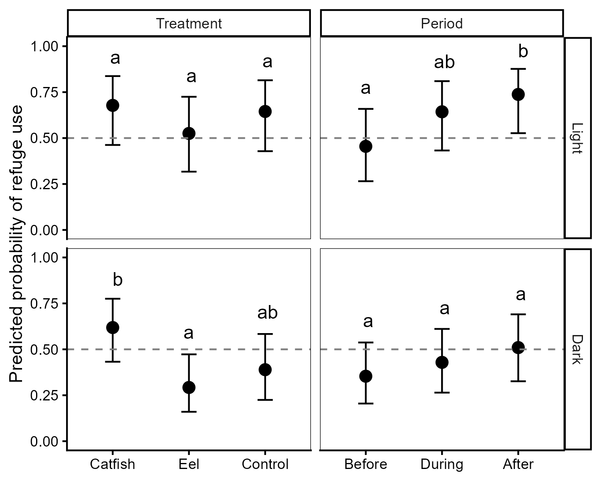
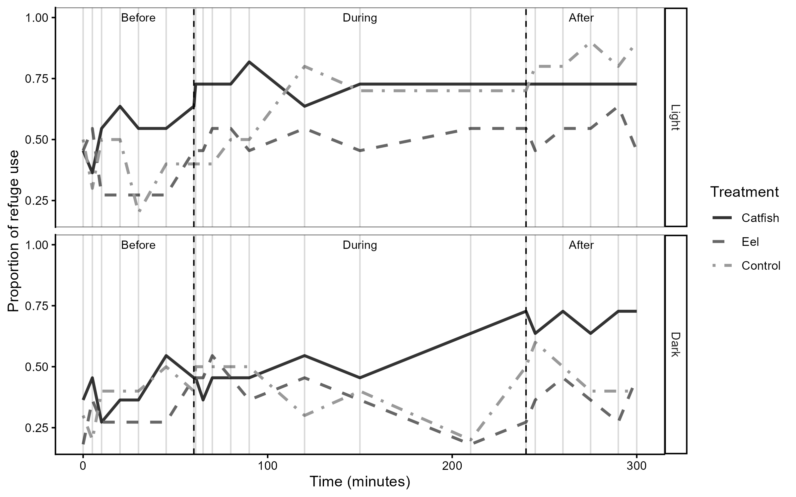
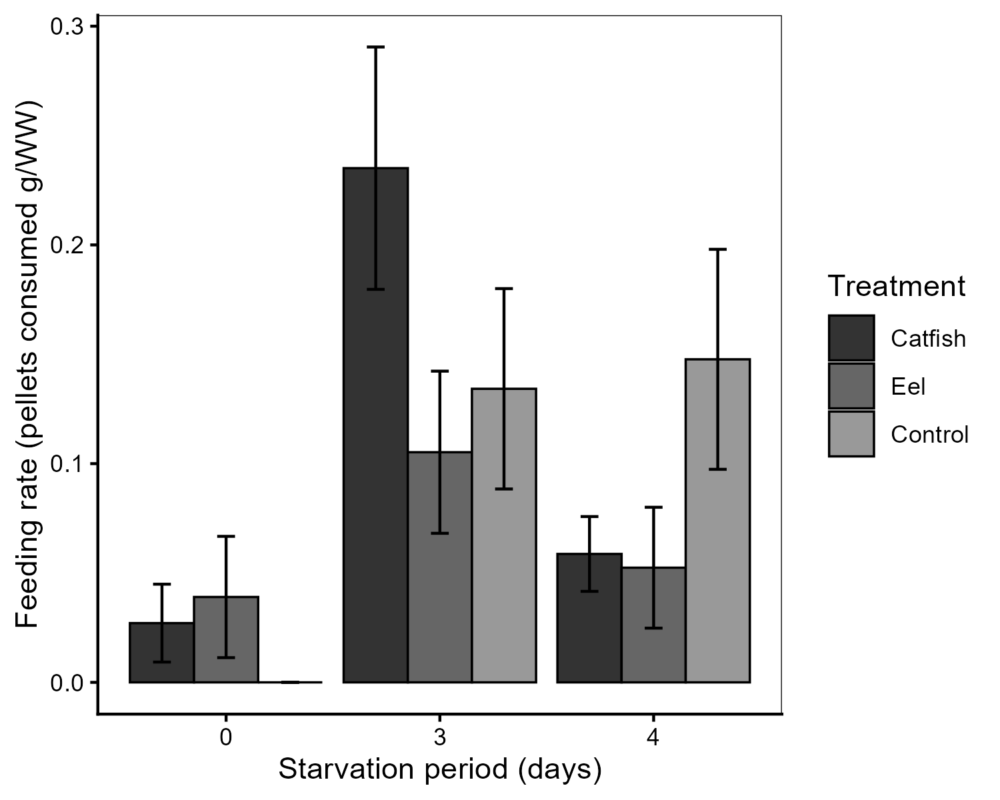
Where do Kōura Live?
Abstract
Freshwater crayfish are increasingly threatened by habitat degradation, declining water quality, and invasive species. In Aotearoa New Zealand, lake populations of the endemic northern freshwater crayfish Paranephrops planifrons (kōura) have declined by up to 91 %. Identifying key habitat requirements is essential to improve the conservation of crayfish facing multiple threats. To assess littoral habitat associations, we surveyed shoreline habitats in five Aotearoa lakes and modelled kōura occupancy, abundance, and biomass using generalised additive mixed models. Kōura occupancy increased with shoreline habitat complexity, particularly coarser substrate types and greater riparian vegetation cover. Elevated summer surface water temperatures were negatively associated with kōura occupancy and abundance, indicating reduced habitat suitability during warm periods. pH was positively correlated with kōura abundance and biomass. Our results suggest that the composition and physical structure of littoral habitats are important drivers of kōura distribution and abundance. As climatic drivers resulting in warmer water temperatures and reduced dissolved oxygen are difficult to manage, targeted protection and restoration of coarse substrate shoreline habitats may provide a practical conservation response.
Introduction
Freshwater crayfish (Astacidea) play a vital role in freshwater ecosystems (Momot 1995). They are ecosystem engineers, exerting substantial influence over key ecological processes, including nutrient cycling, organic matter decomposition and bioturbation (Momot 1995; Collier et al. 1997; Parkyn et al. 2001). They are keystone species due to their broad trophic niche as predators and detritivores, and their ability to modify habitats through sediment excavation for burrow construction, removal of macrophytes, and alteration of macroinvertebrate communities (Statzner et al. 2003; Creed and Reed 2004; Usio and Townsend 2004; Albertson and Daniels 2018). Nearly one-third of the world’s crayfish species are currently threatened with extinction (Richman et al. 2015). Despite their ecological importance and imperilled status, crayfish are frequently overlooked in restoration and conservation initiatives (Taylor et al. 2019; Danilović et al. 2022).
In Aotearoa New Zealand (hereafter Aotearoa), the endemic northern freshwater crayfish Paranephrops planifrons White, 1842, also known by its Māori name kōura, inhabits a wide range of freshwater environments, including rivers, streams and lakes across both main islands (Hopkins 1970). Beyond its ecological role, kōura hold deep cultural significance, having historically been an important food source and trade commodity for iwi (Māori communities; (Hiroa 1921; Kusabs and Quinn 2009)). However, kōura populations are increasingly threatened by climate change, invasive species and declining water quality (Kusabs et al. 2015a; Lee et al. 2025). These declines are likely the result of multiple interacting environmental stressors, including declining water quality, deoxygenation and the introduction and consequent impacts of non-native species (Kusabs and Quinn 2009). For example, in Lakes Rotorua and Rotoiti, located in the Bay of Plenty region of Aotearoa’s North Island, kōura populations have declined by 76 % and 91 %, respectively, over the past two decades (Kusabs et al. 2026).
In 2016, the invasive North American brown bullhead catfish (Ameiurus nebulosus Lesueur, 1819) was confirmed to be present in Lakes Rotorua and Rotoiti (Grayling 2020), where it now occurs in large numbers and preys heavily on kōura (Francis 2019; Kusabs et al. 2026). To reduce predation risk, kōura typically seek refuge in deeper lake habitats during the day and migrate to the more productive shallow areas at night to forage (Devcich 1979). However, summer lake stratification has led to oxygen depletion in deeper waters, forcing kōura to spend more time in shallow habitats where predation risk is greater (Dedual 2002). Climate change is expected to intensify these effects by strengthening thermal stratification and increasing the extent and duration of anoxic conditions in bottom waters as water temperatures rise (Woolway et al. 2021; Zhang et al. 2024). In addition, dense beds of invasive macrophytes may obstruct kōura migration pathways between deep and shallow habitats (Hessen et al. 2004; Kusabs and Quinn 2009) and further reduce oxygen availability during seasonal macrophyte die-off events (Vincent et al. 1984; Hessen et al. 2004; Hamilton et al. 2005).
Declines in kōura populations have cascading ecological impacts and implications for Māori cultural practices, including reduced opportunities for customary harvest and disruption of traditional activities (Kusabs and Quinn 2009; Kusabs et al. 2015a; Kusabs et al. 2026). To effectively conserve and restore populations requires an improved understanding of where kōura occur within lakes and what habitats are most important for sustaining healthy populations. Previous research in stream environments has shown that kōura preferentially occupy structurally complex habitats characterised by bank undercuts, woody debris, leaf litter, boulders and low flow velocities (Usio and Townsend 2000; Parkyn and Collier 2004; Jowett et al. 2008; Parkyn et al. 2009). In contrast, habitats used by kōura in lakes remains poorly understood, with previous studies largely focused on deeper offshore habitats (Devcich 1979; Kusabs and Quinn 2009; Kusabs et al. 2015b). These studies suggest that benthic substrate characteristics may be more important than nutrient enrichment or predator abundance — specifically non-native rainbow trout (Oncorhynchus mykiss Walbaum, 1792) — in determining kōura distribution (Kusabs et al. 2015b). The littoral zone of lakes has received little attention, despite it being the most productive zone and supporting key life history processes of kōura (Strayer and Findlay 2010), including nocturnal foraging and use by ovigerous females prior to juvenile release (Devcich 1979). Consequently, the littoral zone is likely to represent an important habitat within lakes for kōura.
In this study, we examine which littoral habitat characteristics are associated with kōura occurrence, abundance and biomass across five Rotorua Te Arawa Lakes. We hypothesised that structurally diverse littoral habitats, including coarse substrates and native macrophytes, would be positively associated with kōura occurrence and abundance, as they provide physical refuge and foraging opportunities. Conversely, invasive submerged macrophytes were expected to have negative associations with kōura as these dense macrophytes hinder movement and reduce native biodiversity by displacing native macrophytes, altering habitat structure, and modifying ecological processes. We further expected that kōura abundance would be lower in lakes where catfish are present, as catfish are a known predator on benthic invertebrates and native fauna. By quantifying these habitat associations within the littoral zone, this study aims to inform targeted habitat protection and restoration strategies for the conservation of this culturally and ecologically important species.
Materials and Methods
Study location
Study sites were selected in five lakes located in the Rotorua Te Arawa Lakes area in the North Island of Aotearoa. The Lakes Rotorua, Rotoiti, Rotoehu, Rotomā, and Ōkāreka are located on a warm- temperate volcanic plateau (280-355 m) where winters are mild and year-round temperatures typically varies from 4°C to 24°C. The lakes span a wide range of morphometric and trophic conditions from shallow polymictic eutrophic systems (Rotoehu, maximum depth 14 m) to deep stratified oligotrophic lakes (Rotomā, maximum depth 83 m). Shorelines are characterised by a mix of native riparian vegetation, exotic pasture, and low-density residential development, with several lakes also supporting stands of emergent macrophytes. Detailed lake characteristics and shoreline composition are summarised in Table 4. All five lakes have populations of kōura, and brown bullhead catfish was present in Lakes Rotorua and Rotoiti at time of sampling (Kusabs et al. 2026).
To survey these lakes, a stratified-random survey design was developed. The entire accessible shoreline of each lake was first mapped using aerial photos and then ground truthed and classified into dominant habitat types. Classification used the following criteria: a habitat was considered dominant “rocky” if the combined percentage of bedrock, boulders, and cobble exceeded 25 % by surface area; “sandy” if sand was the dominant sediment (≥50 %) and rocky conditions were not met; “muddy” if soft mud or organic matter was dominant and rocky/sandy conditions were not met; and “emergent macrophyte” if emergent native macrophytes exceeded 25 % of the shoreline cover by surface area. Shoreline sites exceeding two meters in depth or classified as geothermal were excluded, as these conditions were either unsuitable for kōura or inaccessible for field sampling.
For each lake, the total shoreline length of each habitat type within this sample frame was calculated in a projected coordinate system (New Zealand Transverse Mercator 2000; EPSG:2193). To ensure balanced representation of littoral habitat types across systems and to avoid confounding lake identity with sampling effort, an equal number of sites (n = 12) was surveyed in each lake, with sites allocated proportionally among the dominant shoreline habitat types. All selected sites were fully accessible for fieldwork, and therefore an oversample was not required. Within each habitat type, site locations were generated using the Generalized Random Tessellation Stratified (GRTS) design (Stevens and Olsen 2004) executed using the spsurvey package in R (Dumelle et al. 2023; R Core Team 2025), producing unbiased random coordinates without enforcing fixed spacing between sites. The final coordinates of the 12 random survey sites per lake were extracted directly from the GRTS output (Figure 14).
| Lake name | Sampling date (n sites) | Surface area (km²) | Perimeter length (km) | Catchment area (km²) | Mean depth (m) | Maximum depth (m) | Elevation (m) | Mixing regime | Trophic state | Muddy (%) | Sandy (%) | Rocky (%) | Emergent macrophytes (%) |
|---|---|---|---|---|---|---|---|---|---|---|---|---|---|
| Rotorua | 20/02/2025 (12) | 81 | 45 | 508.0 | 11.0 | 45.0 | 280 | Polymictic | Eutrophic | 0.0 | 82.8 | 17.2 | 0.0 |
| Rotoiti | 15/01/2025 (12) | 34 | 61 | 123.7 | 31.5 | 124.0 | 279 | Monomictic | Mesotrophic | 0.0 | 68.5 | 21.8 | 9.7 |
| Rotoehu | 10/12/2024 (12) | 8 | 40 | 49.2 | 8.0 | 13.5 | 295 | Polymictic | Eutrophic | 3.3 | 91.2 | 1.7 | 3.8 |
| Rotomā | 6/11/2024 (12) | 11 | 24 | 27.8 | 36.9 | 83.0 | 316 | Monomictic | Oligotrophic | 0.0 | 62.0 | 17.7 | 20.4 |
| Ōkāreka | 31/10/2024 (10), 22/01/2025 (2) | 3 | 11 | 19.6 | 20.0 | 33.5 | 355 | Monomictic | Mesotrophic | 8.9 | 45.1 | 20.2 | 25.8 |

Data collection
In total, 60 sampling sites were sampled once in the Austral spring/summer from October 2024 to February 2025. Each sampling site measured 15 × 10 m and extended from the shoreline into the lake. At locations with unstable lake margins or depths exceeding 1 m, observations and measurements were conducted from a boat. At each site, physical, chemical and biological parameters were recorded (Table 5).
| Variable | Description / Unit | Hypothesised importance for kōura | References |
|---|---|---|---|
| Lake identity | Categorical variable identifying lake | Captures unmeasured lake-specific differences in water chemistry, productivity, and catchment characteristics. | Zuur et al., (2009) |
| Substrate index | Index based on % cover of bedrock, boulders, cobble, gravel, sand, mud, and organic matter | Important for burrowing and shelter availability. Coarser substrates increase shelter availability through more crevices. | Usio & Townsend, (2000); Kusabs et al., (2015b) |
| Slope | Slope from shoreline to the 5 m depth contour | Steeper slopes facilitate access to deeper water during daylight refuging and associate with coarser substrates. | Devcich, (1979); Kusabs et al., (2015b) |
| Riparian vegetation | Percentage cover of vegetation growing in the riparian zone | Contributes detrital inputs, bank stability, and shading at the water’s edge. | Parkyn et al., (2002) |
| Overhanging trees | Percentage cover of trees hanging over the shoreline | Provides direct shading and structural inputs into littoral habitats. | Smith et al., (1996); Vedia et al., (2017) |
| Wood cover | Cover of wooden logs and tree branches in the sample site | Provides physical structure creating refuge spaces and supports macroinvertebrate prey availability. | Parkyn et al., (2009) |
| Emergent and submerged macrophytes | Percentage cover of macrophytes in the sample site divided over emergent and submerged and native and non-native species | Native macrophytes can provide cover and serve as a food source. Non-native macrophytes may alter movement pathways and modify local habitat and water quality conditions. | Coffey & Clayton, (1988); Kusabs & Quinn, (2009) |
| Temperature | Temperature of surface water in °C | Influences metabolic rate, activity, physiological stress, and habitat suitability. | Devcich, (1979); Hammond et al., (2006); Parkyn & Collier, (2002); Angilletta et al., (2004) |
| Dissolved oxygen | Dissolved oxygen concentration in mg L⁻¹ | Essential for respiration; reduced oxygen may constrain activity and habitat use. | Hammond et al., (2006); Broughton et al., (2017) |
| Specific conductivity | Electrical conductivity of the water in µS cm⁻¹ | Reflects overall lake productivity, supporting food availability. | Devcich, (1979) |
| pH | Acidity or alkalinity of the water | Influences moulting success and exoskeleton strength, affected by acidity or calcium levels. | Olsson et al., (2006) |
| Fish presence | Presence/absence of selected native and non-native fish species | Fish act as predators, competitors, or indirectly modify habitat structure. | Shave et al., (1994); Barnes, (1996); Usio & Townsend, (2000); Barnes & Hicks, (2003) |
Physical characteristics were assessed using both visual estimates and field measurements. Substrate composition was visually estimated with an underwater viewing chamber, as water clarity was sufficiently clear at all sites, using a standardised classification scheme, categorising bedrock, boulders (>256 mm), cobble (64–256 mm), gravel (2–64 mm), sand (0.063–2 mm), mud (<0.063 mm), and organic matter. A substrate index was then calculated from these estimates using a formula adapted to include fine organic matter and mud (Jowett and Richardson 1990; Jowett et al. 2008; Harding et al. 2009):
\[ \begin{aligned} \text{Substrate index} &= 0.08 \times (\text{bedrock}) + 0.07 \times (\text{boulders}) \\ &\quad + 0.06 \times (\text{cobble}) + 0.04 \times (\text{gravel}) + 0.03 \times (\text{sand}) \\ &\quad + 0.02 \times (\text{organic matter}) + 0.01 \times (\text{mud}) \end{aligned} \]
Larger substrate classes were assigned higher weights because coarse substrates such as cobble and boulders create greater interstitial pore spaces and stable structures that kōura use as refuge from predators. Coarse substrate availability has been shown to mediate crayfish vulnerability to predation and directly influence crayfish abundance in lakes (Usio and Townsend 2000; Nyström et al. 2006), whereas fine substrates such as silt and mud alone offer limited physical refugia. Fine substrates were assigned near-zero coefficients (0.01–0.03), making their contribution to the index minimal relative to coarse substrates (0.06–0.08), consistent with the positive-weighting structure of the original index (Jowett and Richardson 1990). Riparian vegetation, overhanging tree cover, and wood debris was visually estimated as percentage cover within each site, along with emergent, submerged, and turf vegetation cover. To assess proximity to deeper waters, slope was calculated as horizontal distance from the shoreline to the 5 m depth contour derived from bathymetric maps. Chemical parameters included water temperature (°C), dissolved oxygen (mg L\(^{-1}\)), and conductivity (\(\mu\)S cm\(^{-1}\)), measured with a YSI ProSolo meter (Pro2030 Dissolved Oxygen and Conductivity Meter, YSI Inc., Yellow Springs, OH, USA) and pH was determined using a handheld pH meter (EC-PCTestr35, Eutech Instruments Pte Ltd, Paisley, UK).
Catch data for kōura and fish were collected using two single-winged, double-throated fyke nets (600 mm high D-shaped entrance hoop) and two collapsible bait traps baited with trout flesh (480 × 250 mm; two 50 mm entrance openings). Fyke nets were placed perpendicular to the shoreline at 10 m intervals, with bait traps positioned between them. All equipment was deployed simultaneously at each site for a 24-h period. The use of two fyke nets and two baited bait traps per site was intended to maximise detection probability across habitat types. Captured kōura were measured for orbital carapace length (OCL) using a digital calliper (0.01 mm precision; 150 mm) and for wet mass using a digital scale (±1 g; 5 kg capacity, Anko Brand, Kmart Group, Mulgrave, VIC, Australia). Catfish and other fish species, including eels (Anguilla spp.), goldfish (Carassius auratus (Linnaeus, 1758)), common smelt (Retropinna retropinna (Richardson, 1848)), kōaro (Galaxias brevipinnis Günther, 1866), rainbow trout, common bully (Gobiomorphus cotidianus McDowall & Fulton, 1978), and mosquitofish (Gambusia affinis (S. F. Baird & Girard, 1853)), were recorded for abundance and measured for total length, and weighed for wet mass. Catch per unit effort (CPUE) and biomass per unit effort (BPUE) were calculated for all kōura and fish based on the number of nets and traps used at each site (Kusabs et al. 2015b). Missing kōura weights due to failure of scale (n = 81) were estimated using a log₁₀–log₁₀ length–weight regression fitted to individuals with both measurements (n = 240), following standard approaches for weight length relationships in aquatic organisms ((Fig. S1)) (Froese 2006). Predicted values were back-transformed with a lognormal bias correction factor \(10^{0.5 \sigma^2}\) (Quinn and Keough 2002).
\[ \log_{10}(\text{Weight [g]}) = -2.938 + 2.864 \times \log_{10}(\text{OCL length [mm]}) \]
Data analyses
Because each site was sampled only once, imperfect detection could not be estimated separately from occupancy. Presence–absence data therefore reflect observed detections at the time of sampling, and sites where kōura were not captured were treated as absences in the models. As a result, inference focuses on relative associations between kōura occurrence and environmental or biotic predictors, rather than on estimating true occupancy probabilities.
Kōura presence or absence, CPUE, and BPUE were analysed using mixed-effects models to account for non-independence among sampling sites (Bolker et al. 2009). To test for differences among lakes, kōura presence was modelled using a binomial generalised linear mixed model (GLMM; logit link). CPUE and BPUE were modelled using Tweedie GLMM (log link), which is appropriate for continuous non-negative data with high frequency of zeros, as common in ecological count and biomass data (Shono 2008). These models were fitted using the glmmTMB package (Brooks et al. 2017), with habitat type included as a random intercept. To identify environmental and biotic predictors associated with kōura distribution and abundance, GAMMs were implemented with the mgcv package (Wood 2004, 2017). To reduce multicollinearity, predictors were screened using Variance Inflation Factors (VIFs) calculated from linear models fitted to the fixed-effect design matrix. A conservative threshold of VIF > 5 was applied (Quinn and Keough 2002; Kutner et al. 2005). Across all model sets, dissolved oxygen expressed as percentage saturation (DO %) exceeded this threshold and was excluded from further analyses, while dissolved oxygen concentration (DO mg L\(^{-1}\)) was retained.
For occupancy analyses, kōura presence–absence was modelled using a binomial GAMM with a logit link function (Zuur et al. 2009; Wood 2017). For CPUE and BPUE, a hurdle modelling approach was adopted due to the high frequency of zero observations in the data. In this approach, occurrence (zero vs non-zero values) was modelled using a binomial GAMM with a logit link, followed by modelling of positive CPUE or BPUE values using Gamma GAMMs with a log link. This framework allows occurrence and positive abundance to be modelled separately and is appropriate for datasets characterised by many zero observations. Hurdle models are commonly used with freshwater crayfish catch data, which often possess these features (Rosewarne et al. 2013). Environmental and biotic predictors considered included substrate index, slope to 5 m depth, riparian vegetation, overhanging trees, wood cover, aquatic vegetation classes (emergent native, submerged native, submerged non-native, and emergent non-native vegetation), water temperature (°C), dissolved oxygen (mg L\(^{-1}\)), pH, specific conductivity (\(\mu\)S cm\(^{-1}\)), and the presence of catfish, eels, goldfish, and common smelt. Continuous predictors were centred and standardised prior to modelling to improve convergence and facilitate comparison of effect sizes and were modelled as smooth terms using thin plate regression splines (bs = ‘ts’), which apply additional shrinkage to penalise overly complex relationships and can shrink smooth terms fully to zero during selection (Wood 2017). Basis dimensions (k) were set based on the number of unique values per predictor and adjusted where necessary to balance flexibility and parsimony. Binary predictors (fish presence variables) were included as parametric terms.
Model selection was performed using maximum likelihood estimation with stepwise backward elimination, sequentially removed and the model refitted until all remaining terms met the retention threshold (\(\alpha\) ≤ 0.05). Reduced models were compared with their respective full models using likelihood ratio tests and Akaike Information Criterion (AIC) scores. Final selected models were refitted using restricted maximum likelihood (REML), which accounts for the degrees of freedom associated with fixed effects and provides less biased estimates of variance components, resulting in more stable smoothing parameter estimates in models with random effects. Lake identity was included as a random effect in all GAMMs to account for spatial clustering and non-independence among observations and was not subject to the variable selection procedure (Zuur et al. 2009).
Model diagnostics were performed to evaluate model fit and assumptions. Residuals were inspected to assess homogeneity of variance and normality (Zuur et al. 2009). Concurvity, the degree to which smooth terms can be approximated by other smooths in the model, was assessed to identify potential instability in smooth term estimates (Wood 2017). Basis dimension checks using effective degrees of freedom (edf) were performed to ensure smoothing terms had sufficient flexibility to capture underlying patterns without overfitting (Zuur et al. 2009). For binomial components, model discrimination was evaluated using Receiver Operating Characteristic and Area Under the Curve (ROC/AUC), where values approaching 1 indicate perfect discrimination between presences and absences (Fielding and Bell 1997). For positive-only abundance models, predicted versus observed values were compared to assess how well the model reproduces observed CPUE and BPUE values across the range of the data.
To provide context for the association between catfish presence and kōura metrics detected in the GAMM, a descriptive comparison of kōura presence rate, CPUE, and BPUE was conducted across catfish-present and catfish-absent sites, and across lakes with and without catfish.
Results
A total of 321 kōura were captured across 33 of the 60 surveyed sites within the five Rotorua Te Arawa Lakes. Kōura OCL ranged from 7–53 mm and individual body mass from 0.2–87 g. Kōura were detected in all five lakes; however, abundance varied among lakes, with total counts ranging from 19 to 112 individuals. Mixed-effects models indicated a significant effect of lake on kōura occupancy (binomial GLMM: likelihood ratio test, \(\chi^2_{4} = 13.76\), p = 0.008), CPUE (Tweedie GLMM: \(\chi^2_{4} = 12.60\), p = 0.013), and BPUE (Tweedie GLMM: \(\chi^2_{4} = 9.66\), p = 0.047; Figure 15).
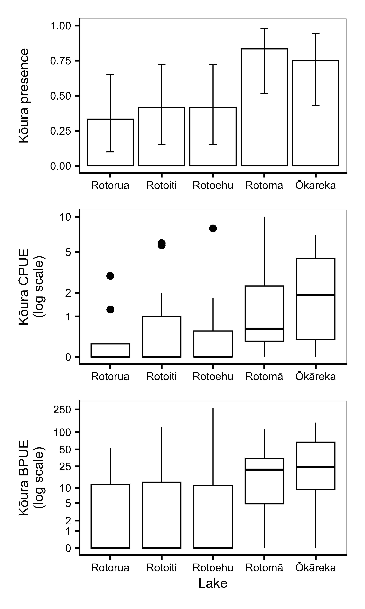
The five lakes differed substantially in environmental and biotic characteristics ((Table S1)). Physical habitat structure varied among lakes, with differences in substrate index, nearshore slope, and littoral vegetation cover. Emergent macrophytes were absent from Lake Rotorua but present in the other lakes, particularly Ōkāreka, while submerged macrophyte cover at the shore was rare in Rotorua and Rotoiti but more extensive in Rotoehu and Rotomā. Water chemistry also differed markedly among lakes. Surface water temperatures were highest in Rotorua and lowest in Rotomā and Ōkāreka, while pH ranged from circum-neutral conditions in Rotorua to more alkaline conditions in Rotoehu and Rotoiti. Specific conductivity showed strong contrasts, being highest in Rotoehu and lowest in Ōkāreka. Dissolved oxygen concentrations in the littoral zone varied less among lakes but were generally lowest in Rotorua. Fish populations differed between lakes, reflecting invasion history. Catfish were detected only in Lakes Rotorua and Rotoiti, whereas goldfish occurred in all lakes but were most abundant in Rotoehu. Common bullies were found in every survey location. Trout were found sporadically in Rotorua, Rotoiti and Ōkāreka and kōaro were only caught from Ōkāreka.
Kōura occupancy
The full binomial GAMM for kōura occupancy explained 65 % of the deviance (AIC = 51; adj. R² = 0.647). Stepwise ML reduction (\(\alpha = 0.05\)) retained riparian vegetation, substrate index, temperature, and specific conductivity as smoother terms, lake identity as a random effect, and the presence of goldfish (negative) and catfish (positive) as parametric terms. The final model refitted using REML explained 57.9 % of the deviance (adj. R² = 0.592) and retained positive influences of riparian vegetation (p = 0.026), substrate index (p = 0.001), specific conductivity (p = 0.002) and a negative influence of temperature (p < 0.001), as significant smoother terms (Figure 16 a). The random effect of lake identity was not statistically significant (p = 0.622), indicating limited residual variation between lakes after accounting for environmental and biotic predictors. Among the parametric covariates, goldfish had a significant negative relationship (p = 0.017), and catfish presence showed a significant positive relationship (p = 0.014). Model diagnostics showed no evidence of overfitting (edf < k) and good discrimination (AUC = 0.946; Figure 16 b). Concurvity diagnostics revealed high collinearity between specific conductivity and lake identity (worst-case = 1.00, observed = 0.94), and between temperature and lake identity (worst-case = 0.95, observed = 0.88), suggesting both predictors partly reflect between-lake differences. Residual diagnostics showed no systematic patterns in variance across fitted values, consistent with acceptable model fit for a binomial GAMM. The calibration plot indicated slight under-prediction at low probabilities and slight over-prediction at mid-range probabilities (Figure 16 c). The binomial components of the CPUE and BPUE hurdle models produced the same structure and effect directions as the occupancy model, so only the positive Gamma components are reported here.

Kōura CPUE
The full Gamma GAMM for positive CPUE explained 48.4 % of the deviance (AIC = 122; adj. R² = 0.19; n = 33). Stepwise selection (\(\alpha = 0.05\)) reduced the model to temperature, pH, and emergent native macrophytes as smoother terms, lake identity as a random effect, and the presence of common smelt (negative) as a parametric effect. This reduced model achieved a lower AIC (115) and explained 47.3 % of the deviance (adj. R² = 0.194). Likelihood ratio tests indicated that the reduced model was statistically equivalent to the full model (p = 0.950), and it was therefore selected as the final CPUE model.
The final REML-fitted model explained 47.3 % of the deviance (adj. R² = 0.195) and retained positive influence of pH (p < 0.001) and negative influence of temperature (p = 0.019) and emergent native macrophytes (p < 0.001) as significant smooth predictors (Figure 17 a). The lake identity random effect was not significant (p = 0.482), indicating minimal additional between lake variation once environmental covariates were included. Presence of common smelt had a significant negative parametric relationship (p = 0.041). Concurvity diagnostics indicated strong correlation between temperature and pH, but both variables were retained because they were ecologically interpretable and contributed significantly to model fit. Model diagnostics showed no evidence of overfitting (edf < k), and predictive accuracy was moderate (Figure 17 b). Residual diagnostics showed no systematic patterns in residual variance across fitted values. The model tended to slightly over-predict very low CPUE values and under predict the highest observations.
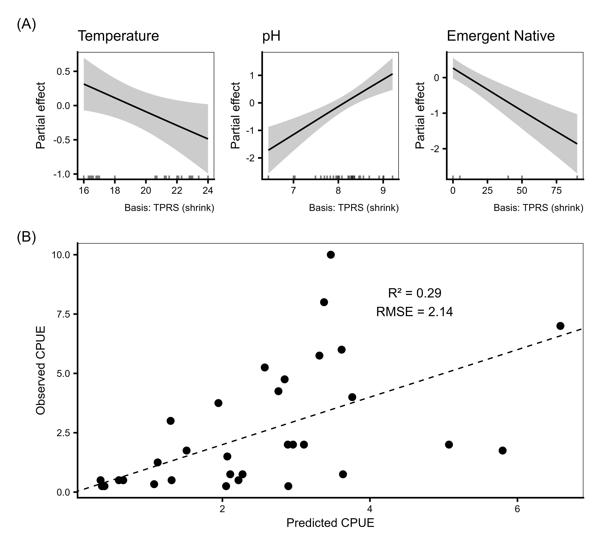
Kōura BPUE
The full Gamma GAMM for positive BPUE explained 97.4 % of the deviance (AIC = 266; adj. R² = 0.76; n = 33). Stepwise ML selection (\(\alpha = 0.05\)) retained pH, emergent native macrophytes, and the lake identity random effect. The resulting reduced model had a higher AIC (318) and explained 26 % of the deviance (adj. R² = 0.141). As the full model was overfitting the data the reduced model was chosen for inference. The final REML-fitted BPUE model explained 25.9 % of the deviance (adj. R² = 0.14) and retained a positive influence of pH (p = 0.002) and a negative influence of emergent native macrophytes (p = 0.041) as significant, near-linear smoothing (Figure 18 a). The emergent macrophyte effect, while statistically significant, was close to the threshold and should be interpreted with caution given the distributional limitations of the model. The lake identity random effect was not significant (p = 0.607), indicating minimal additional between lake variation after accounting for environmental predictors. Diagnostic checks showed appropriate basis dimensions (edf < k), stable convergence, and acceptable levels of observed concurvity, though minor departure from distributional assumptions was noted at the lower tail, likely reflecting a small number of high-biomass sites. Predictive accuracy was moderate (Figure 18 b), with a tendency for the model to under predict the highest BPUE values.

Discussion
We found that local and site-scale habitat characteristics were consistently associated with kōura occurrence and abundance across the five surveyed lakes. Although initial mixed-effects models identified significant differences in kōura occupancy, Catch Per Unit Effort (CPUE), and Biomass Per Unit Effort (BPUE) among lakes, these differences were no longer evident once local environmental and biotic predictors were incorporated into the Generalised Additive Mixed-Models (GAMMs). However, interpreting the non-significance of lake identity in the final models requires caution. In the occupancy model, both temperature and specific conductivity showed near-perfect collinearity with lake identity, suggesting these predictors likely absorbed between-lake differences rather than capturing purely within-lake habitat associations. Given that predictors were often correlated at the site scale, the GAMMs are best interpreted as identifying habitat associations rather than mechanistic drivers of kōura distribution. The predictors substrate index and riparian vegetation cover, which varied considerably within lakes, likely reflect genuine within-lake habitat associations. Consequently, targeted management actions that improve local habitat structure and address key biotic pressures at finer spatial scales have the potential to deliver local gains, particularly where whole-lake interventions are not feasible or where local habitat degradation is the dominant stressor.
Habitat associations with kōura
Kōura occurrence was consistently associated with coarser substrate types and greater riparian vegetation cover. Substrate heterogeneity was moderately negatively correlated with the substrate index (r = −0.48), indicating that the index reflects dominance of coarse substrates rather than proportional mixing of particle sizes. Higher substrate index values therefore reflect the presence of large particles like bedrock, boulders and cobbles, which create large interstitial pore spaces that function as physical refugia, providing shelter from predators (White and Irvine 2003; Haschenburger and Roest 2009; Kusabs et al. 2015b). The relationship between substrate size and benthic invertebrates is not linear (Quinn and Hickey 1990), where larger pore spaces between coarse particles may favour adult kōura, smaller interstitial spaces within mixed substrates may provide refugia for juveniles, suggesting that heterogenous substrates support kōura across life stages. However, mixed substrates containing both coarse and fine particles can reduce pore space availability as smaller particles infill void spaces between larger ones (Haschenburger and Roest 2009), meaning that dominance of coarse substrate rather than substrate heterogeneity is the more relevant driver of refugia availability for adults. Additionally coarse substrates may facilitate burrowing by kōura at the margins of rocky areas where softer sediments are accessible, providing an additional form of refuge (Usio and Townsend 2000). Similar preferences for coarse substrates have been reported in stream environments (Olsson et al. 2006; Jowett et al. 2008), although the optimal substrate size may differ between habitat types. In streams, kōura show a non-linear response to substrate size with an optimum around 130 mm, with probability of occurrence declining at boulder substrates larger than 256 mm, likely because larger substrates are associated with higher flow velocities that kōura actively avoid (Jowett et al. 2008). Coarse particles in streams are also relatively stable under typical flow conditions, as their size reduces the likelihood of transport during high flows. In lakes, where flow is minimal, kōura may preferentially use larger substrates such as boulders, as this constraint is removed and larger particles create more accessible interstitial refugia. However, substrate stability in these volcanic lakes remains relevant in wave-exposed littoral zones, as pumice substrates, being lighter than other lithologies of similar size, are more likely to redistribution during wave action, potentially reducing the stability of interstitial refugia. Although fyke net deployment is more challenging in highly structured rocky habitats and may lead to conservative abundance estimates, the consistent positive association with the substrate index across all five lakes highlights the importance of coarse littoral substrates for kōura.
This refugia mechanism also helps explain why emergent macrophyte habitats were negatively associated with kōura abundance and biomass despite providing vertical structure. Emergent native macrophytes, including raupō (Typha orientalis C.Presl) and giant spike rush (Eleocharis sphacelata R.Br.), often form in relatively homogeneous habitats, characterised by fine sediments and high organic matter accumulation in sheltered littoral areas (Chambers 1987; Lishawa et al. 2023). Such conditions may limit the availability of effective refuges, reduce foraging efficiency, and increase oxygen demand associated with organic decomposition, with dissolved oxygen also likely to exhibit greater unmeasured daily variability within macrophyte stands (Bunch et al. 2010; Schrank and Lishawa 2019). Therefore, rocky shorelines maintain accessible interstitial pore spaces that function as refugia, whereas macrophyte-dominated habitats accumulate fine sediments that infill potential void spaces and reduce refugia availability. However, the negative association between emergent native macrophytes and kōura abundance and biomass should be interpreted with caution. Only 15 of 60 sites had emergent macrophyte cover and in the CPUE and BPUE models this was 7 of 33 positive sites, meaning model estimates for this predictor carry greater uncertainty than the smooth term confidence intervals suggest. That a consistent negative effect was nonetheless detected across both CPUE and BPUE models suggests the relationship is ecologically meaningful despite the limited representation of this habitat type in the dataset.
Fish associations as indicator of habitat quality
Associations between kōura abundance and the presence of certain fish species further support the importance of habitat-mediated processes rather than direct biotic interactions. Goldfish presence was negatively associated with kōura occupancy, and common smelt presence was negatively associated with kōura CPUE. Goldfish are typically associated with warmer, vegetated littoral habitats with finer substrates (Fry and Hart 1948; Ford and Beitinger 2005), conditions that were also unfavourable for kōura in this study. Goldfish presence is therefore best interpreted as an indicator of habitat conditions that are unsuitable for kōura rather than as a direct driver of kōura distribution. Similarly, common smelt are primarily pelagic (Rowe 1993), and their association with reduced kōura abundance is unlikely to reflect direct interactions. Instead, this pattern may reflect broader lake-scale trophic or environmental gradients, such as increased predation pressure mediated through shared predators (Schoen et al. 2015).
A weak positive association between catfish presence and kōura occupancy was detected in the GAMM, although this pattern should be interpreted cautiously. Catfish were restricted to lakes Rotorua and Rotoiti, occurring at only 6 of 24 sites within these two lakes. Examining this association across multiple spatial scales reveals a scale-dependent pattern consistent with (Levin 1992), who demonstrated that ecological relationships could shift direction depending on the scale of analysis. At the lake scale, kōura presence, CPUE, and BPUE were all substantially lower in catfish-invaded lakes than in catfish-free lakes, suggesting a negative association. At the site scale within invaded lakes, catfish-present sites also had lower kōura presence rates and abundance than catfish-absent sites. The positive parametric term in the GAMM therefore likely resulted from habitat covariate adjustment, where catfish and kōura co-occur in coarse substrate littoral habitats that support higher benthic invertebrate biomass and historically higher kōura densities (Barnes 1996; Barnes and Hicks 2003). Importantly, the positive GAMM term does not preclude strong negative impacts of catfish during earlier stages of invasion; instead, current distributions may represent a residual distribution following substantial historical declines, with kōura persisting at reduced densities in habitats where stable coexistence is possible (Kusabs et al. 2026). Overall, fish associations observed in this study appear to reflect shared responses to habitat structure and productivity rather than direct biotic regulation of kōura populations.
Associations with physico-chemical drivers
Elevated summer water temperatures were negatively associated with kōura abundance in both occupancy and CPUE models, indicating that thermal conditions impose an important constraint on littoral habitat suitability. Lakes were surveyed at different times across the spring-summer period, so between-lake temperature differences partly reflect when each lake was sampled, not only differences in thermal regime. Kōura are known to be temperature-sensitive, with activity increasing above approximately 10 °C and temperatures exceeding ~21 °C considered thermally stressful, and probably leading to aestivation (Devcich 1979; Angilletta et al. 2004; Hammond et al. 2006; Hesni et al. 2009). During the study period, surface water temperatures in several lakes exceeded this threshold, including a mean summer temperature of 23.15 °C in Lake Rotorua, conditions likely to reduce suitable habitat availability during warm periods.
In stratified lakes, elevated surface temperatures may further constrain kōura habitat by intensifying thermal stratification and limiting oxygen availability in deeper waters (Wetzel 2001). Lake Rotoiti and Ōkāreka, for example, experience extended stratification and reduced bottom-water oxygen concentrations during the summer periods (Westernhagen et al. 2010), conditions that may restrict kōura to warmer nearshore or surface habitats where thermal stress is also elevated. Although vertical movements and depth-specific habitat use were not assessed directly, the negative association between temperature and kōura abundance observed here is consistent with broader constraints on habitat suitability arising from the combined effects of thermal stress and reduced oxygen availability during prolonged stratification, rather than from surface temperature alone. Importantly, this temperature effect was detected independently of littoral habitat structure, suggesting that elevated summer temperatures may compress kōura into a narrower subset of thermally and structurally suitable microhabitats, where local habitat characteristics may provide limited buffering but also increase vulnerability to predation and other stressors.
Because sampling was restricted to the spring/summer period, seasonal shifts in temperature tolerance and habitat use could not be evaluated. Nevertheless, projected climate warming is expected to increase surface water temperatures and extend the duration of thermal stratification in lakes, thereby intensifying summer thermal stress in shallow littoral zones and further reducing suitable kōura habitat during summer and autumn (Jane et al. 2021).
In contrast to temperature effects on occurrence and abundance, water chemistry variables were more strongly associated with kōura abundance and biomass. They increased with higher pH and specific conductivity, with pH showing positive associations in both CPUE and BPUE models and conductivity positively associated with occupancy. Elevated pH values indicate carbonate-rich conditions that may enhance calcium availability, which is essential for exoskeleton formation, moulting, and growth in kōura (Hammond et al. 2006). Further, specific conductivity reflects the overall ionic composition of the water, which in volcanic lake systems may indicate differences in catchment geology and geothermal inputs, though given its near-perfect collinearity with lake identity the mechanistic interpretation of this association remains uncertain. Favourable chemical conditions are more likely to influence the amount of biomass that littoral habitats can support, rather than acting as strict determinants of kōura presence. This interpretation is consistent with physiological constraints associated with calcification and moulting, processes that become increasingly demanding as individuals increase in size (Greenaway 1985).
Conclusions
Our study found that local littoral habitat complexity, particularly coarse substrate availability and riparian vegetation cover, were consistently associated with kōura occurrence and abundance in nearshore habitats. Elevated summer water temperature was negatively associated with kōura occurrence and abundance, consistent with thermal sensitivity of kōura, though this association partly reflects between-lakes differences and should be interpreted cautiously. Together, these findings suggest that both local habitat complexity and thermal conditions shape kōura distribution within the littoral zone. This study contributes to understanding of how habitat complexity structures influence freshwater crayfish populations and demonstrates that not all forms of structural complexity equally support biodiversity. Different forms of structural complexity likely support different species and ecological functions, meaning that maintaining diversity of habitat types within the littoral zone is important for broader biodiversity conservation (Meerhoff and González-Sagrario 2022b). As shoreline modification, sedimentation, and invasive macrophyte expansion continue to reduce variation and structural diversity in littoral habitats, understanding which components of habitat complexity are functionally important for target species becomes critical for effective restoration planning.
Climate warming is expected to impose increasing constraints on freshwater crayfish populations through rising summer water temperatures, prolonged periods of thermal stratification, and intensified interactions with non-native species that are better adapted to warmer conditions (Capinha et al. 2013; Lee et al. 2025). While such broad-scale drivers are difficult to manage directly, local habitat conditions represent a tractable management lever. The strong association between kōura occurrence and coarse substrate availability suggests that an absence of interstitial refuge availability may act as a limiting factor freshwater crayfish populations in these systems. Accordingly, management actions that prioritise the protection and enhancement of coarse littoral substrates and riparian vegetation, including the targeted placement of rocks in areas already used by freshwater crayfish (Johnsen and Taugbøl 2008), may help support the persistence and local recovery of populations in lakes and represent a practical approach to conserving functionally important habitat complexity in littoral ecosystems.
Acknowledgements
We thank Te Arawa Lakes Trust and Te Komiti Whakahaere for the opportunity to study kōura in the Rotorua Te Arawa Lakes. We are grateful to Soweeta Fort-D’ath and William Anaru (Te Arawa Lakes Trust), and Tihini Grant (Ngāti Pikiao), for facilitating access to the lakes and supporting the field programme. We appreciate Joe Butterworth’s assistance with fieldwork, and the support of Andy Bruere and the Bay of Plenty Regional Council in helping to fund the fieldwork. We thank Calum MacNeil and three anonymous reviewers for feedback on an earlier version of this manuscript.
Funding statement
This research was supported by the Fish Futures programme funded through a Ministry of Business, Innovation and Employment grant (CAWX2101) with additional funding provided by the Bay of Plenty Regional Council under the Toihuarewa Waimāori - Bay of Plenty Regional Council Chair in Lake and Freshwater Science programme.
Ethical approval
This study did not involve experimentation on humans or animals. Kōura and fish were captured using standard fisheries sampling methods. Permission to conduct field sampling and handle aquatic fauna was granted by Te Arawa Lakes Trust and Te Komiti Whakahaere. Formal institutional ethical approval was not required.
Declarations
The corresponding author has declared that none of the authors has any competing interests.
Data availability statement
The code and derived data supporting the findings of this study are openly available on GitHub (https://github.com/OlivierRaven/Koura_shoreline_habitats) and a rendered version of the analysis is hosted at https://olivierraven.github.io/Koura_shoreline_habitats/. The primary raw dataset and code are archived on Zenodo (https://doi.org/10.5281/zenodo.19476793). Peer review documents, including the cover letter and reviewer responses, are available in the manuscript repository in the interest of open and transparent science.
The Importance of Structure
Abstract
Freshwater crayfish are keystone species that rank among the most threatened invertebrate groups globally. While habitat loss and predation by non-native predators feature prominently as drivers of crayfish population declines, the optimal design of habitat enhancement structures for their restoration remains largely unknown. To better understand freshwater crayfish habitat preferences, our study focused on the endemic kōura (Paranephrops planifrons) found in Aotearoa New Zealand. We used four mesocosm experiments to examine how shelter structure, material composition, individual body size, and group dynamics influence refuge selection in kōura. Individual kōura strongly preferred a wooden log with enclosed drilled holes, but when housed in mixed-size groups, their preference shifted to flat and piled stone configurations that provided more complex refugia for individuals of different sizes. Flat stone structures were preferred over split wood pieces of similar dimensions, and this was strongest for large individuals. When structural dimensions were held constant, no significant preference was detected between concrete and wooden structures, indicating that material composition alone does not drive refuge selection. The findings of these mesocosm experiments suggest that stone pile configurations warrant field evaluations as habitat enhancement structures for kōura restoration. The stone piles create structural complexity that can provide habitat for different size classes and thus may add critical refuge from non-native predators for kōura populations.
Introduction
Freshwater biodiversity is declining faster than in any other ecosystem globally, driven by habitat loss, pollution, and invasive species (Dudgeon et al. 2006). Crayfish are among the most threatened freshwater invertebrates, with 32 % of species assessed as threatened with extinction due to these same pressures (Richman et al. 2015). As keystone species and ecosystem engineers, crayfish play crucial roles in freshwater food webs through shredding of leaf litter, bioturbation of sediments, and nutrient cycling, and their loss can have profound cascading effects on freshwater ecosystems (Momot 1995; Collier et al. 1997; Parkyn et al. 2001). The increasing degradation of freshwater habitats therefore not only threatens crayfish populations but also risks disrupting the ecosystem processes crayfish sustain.
Habitat complexity is a key driver of crayfish population persistence, as structurally diverse habitats provide physical refugia from predators, foraging opportunities, and shelter during moulting when individuals are particularly vulnerable (Hammond et al. 2006). Shelter availability directly increases crayfish survival and growth under predation pressure (Adams 2007), making refuge quality a critical consideration for both natural habitat persistence and restoration design. Crayfish use a wide variety of natural and artificial structures as shelter, including rocks, woody debris, and even anthropogenic objects such as bottles and discarded appliances (Parkyn et al. 2009; Adams 2014), demonstrating considerable flexibility in habitat use. While this diversity of potential refugia is well documented, preferences among different structure types remain poorly understood, even though knowledge of habitat preferences is fundamental to designing effective enhancement structures for restoration. In the context of freshwater restoration, increasing structural complexity through providing shelters has improved crayfish abundance and restocking success in degraded streams and lakes (Huolila et al. 1997; Johnsen and Taugbøl 2008), and the availability of coarser substrate has also been shown to improve juvenile survival rates (Mazlum et al. 2017). These findings indicate that enhancing habitat complexity can be a useful management tool for threatened crayfish populations, yet systematic comparisons of shelter configurations for freshwater crayfish restoration remain largely absent from the literature.
Shelter selection in crayfish is strongly influenced by body size, as individuals actively select refugia proportional to their dimensions. Crayfish individuals tend to select stones more than 3 times longer and 1.25 times wider than their carapace length, with larger males consistently selecting larger stones (Streissl and Hödl 2002). Social dynamics further complicate shelter use when refuge availability is limited, as competitive interactions among conspecifics determine which individuals gain access to preferred shelters. Dominance hierarchies based on body size and reproductive status show that males and maternal females often are able to take over shelters from non-maternal females, while adults consistently outcompete juveniles for shelter access (Figler et al. 2005). Body size and shelter dimensions have direct competitive consequences as crayfish in undersized shelters initiated and won more fights than those in appropriately sized shelters, suggesting that shelter fit influences an individual’s assessment of its own fighting ability (Percival and Moore 2010). Body size ratios between contestants are a strong predictor of shelter takeover success, although prior ownership can offset size disadvantages (Ranta and Lindström 1993), particularly when both individuals hold high-quality shelters (Takahashi et al. 2019). At the population level, habitat complexity buffers these competitive effects, with juveniles in structurally complex habitats showing higher survival, faster growth, and greater moulting rates as more shelter availability reduces agonistic interactions (Olsson and Nyström 2009). Together, shelter use in crayfish reflects an interaction between individual body size and social competitive dynamics, suggesting that effective habitat enhancement structures must provide a range of shelter sizes to support different life stages and size classes simultaneously.
The material and structural properties of shelters can influence their value as refugia. In a study comparing shelter configurations on reef fish assemblages, the availability and size of enclosed spaces mattered more than total structure volume (Hylkema et al. 2020). Additionally, enclosed structures such as PVC pipes provide greater protection against predatory fish than stone or vegetation structures, likely due to their consistent hole dimensions (Zhao et al. 2024). However, the use of synthetic materials like PVC pipes in restoration ecology brings ecological concerns, particularly in contexts where introducing non-native materials may conflict with conservation values or indigenous cultural frameworks (Wehi and Lord 2017; Cooke et al. 2023). Natural materials such as stones and wood offer ecologically compatible alternatives, yet the importance of structural configuration versus material composition for crayfish shelter preference is poorly understood.
In Aotearoa-New Zealand (hereafter Aotearoa), the endemic freshwater crayfish kōura (Paranephrops planifrons) faces conservation pressure from habitat loss, water quality degradation, and predation by invasive species (Lee et al. 2025; Kusabs et al. 2026). Kōura are a taonga (culturally treasured) species for Māori, the indigenous people of Aotearoa, and hold significant ecological and cultural value in freshwater ecosystems (Kusabs and Quinn 2009; Kusabs et al. 2015a). In their natural habitat, kōura are positively associated with overhanging banks, coarse substrates, and woody debris (Raven et al. 2026a; Usio and Townsend 2000; Jowett et al. 2008; Parkyn et al. 2009). Kōura have been shown to significantly increase refuge use in the presence of predators (Raven et al. 2026b; Shave et al. 1994). Habitat restoration by increasing shelter availability represents a promising management tool for kōura recovery, and the use of natural materials aligns with ecological and cultural values.
In this study, four mesocosm experiments were conducted to identify kōura habitat preferences. We assessed how different structures varying in material and configuration influence refuge selection, accounting for individual behaviour, body size, and group interactions. We predicted that 1) Structurally complex structures providing enclosed crevices would be preferred over isolated or open structures, as enclosed spaces reduce predation risk; 2) structure preference would be size-dependent, with larger kōura selecting structures with larger refuge spaces (Streissl and Hödl 2002; Percival and Moore 2010); 3) stone-based structures would be preferred over wood due to greater structural stability, and 4) material type alone would not influence refuge preference between concrete and wooden bricks. The results provide practical guidance for designing cost-effective, ecologically appropriate habitat enhancement structures to enhance kōura abundance and support population recovery.
Materials and Methods
Animal collection and tank setup
In mid-August 2025, 72 kōura were sourced from Lakes Ōkāreka and Tikitapu, located within the Rotorua Te Arawa Lakes area in the North Island of Aotearoa. Collected animals were transported to the Aquatic Research Centre at the University of Waikato in Hamilton. Individuals were assigned to one of three size classes based on orbital carapace length (OCL): small (< 22 mm), medium (22–30 mm), and large (> 30 mm). Each animal was marked with a unique identification number written on the carapace using an orange oil-based paint marker (Sharpie, medium point) (Ramalho et al. 2010).
Kōura were acclimatised for 12 days in outdoor concrete holding tanks (Ø 1.4 m), each filled to 0.4 m with dechlorinated tap water conditioned for three months, paving sand as substrate, shelters, and were covered with a single layer of shade cloth. Each holding tank housed 10–12 individuals. Kōura were fed every second day with commercial carnivore pellets (Hikari Tropical, Kyorin Food Industries Ltd., Japan; animal protein 47 %). Water temperature and dissolved oxygen remained stable throughout the experimental period (temperature: 12 ± 1.2 °C; dissolved oxygen: 99.9 ± 1.7 %).
Experiments were conducted in six larger outdoor concrete tanks (1425 L; Ø 1.85 m) with the same substrate and water conditions, covered with a double layer of shade cloth to prevent escape and minimise solar heating. Fresh dechlorinated tap water and an air stone were added between rounds. To limit thermal stress, experiments were conducted during the Australasian spring (September to October). Because kōura are a taonga (treasured) species, permission to conduct the experiments was obtained from Te Arawa Lakes Trust and Te Komiti Whakahaere. All experimental procedures were conducted under University of Waikato animal ethics committee approval (protocol number: 1207; see Ethical Approval section).
Experiment 1: Individual preference
This experiment assessed individual kōura structure preference by offering single animals a choice among four structures (Figure 19). The structure-types were: SingleStone (ten quarried stones (150–250 mm) placed individually across the quadrant with sufficient spacing between stones that no crevices formed between them), FlatStone (ten quarried stones arranged tightly without stacking), StonePile (ten quarried stones stacked to form a pile), and WoodLog (a tānekaha (Phyllocladus trichomanoides) log (500 mm long, 150 mm diameter) containing six drilled holes (70 mm deep, 32 mm diameter)). If a kōura was not using a structure, TankWall was noted as its location which represents the wall of the tank or when the kōura was in the open. TankWall functioned as an indicator of structure rejection rather than a preference. Six experimental tanks were used, each housing a single medium-sized kōura. Across five experimental replicates, a total of 30 kōura were tested, consisting of 15 females with mean OCL and weight ± SD: 26.9 ± 2 mm, range: 23.2–29.8 mm, 12.5 ± 3.3 g and 15 males: 26.1 ± 2.2 mm, range: 22.6–30 mm, 11.9 ± 3.1 g. Each replicate lasted 22 hours, beginning at noon (12:00) and ending at 10:00 the following morning.
Each experimental tank was divided into four quadrants, with one structure type placed at random (randomizer.org) in each quadrant. For each trial, a single kōura was placed inside a vertically oriented plastic tube (50 mm long, open at one end and sealed at the other) positioned at the centre of the tank, with the sealed end resting on the substrate. This ensured a standardised starting position from which the kōura could exit in any direction (MacNeil et al. 2025). The time taken for the kōura to locate its initial refuge location was recorded. On the following day, the final location of the kōura was noted after which it was removed from the tank. Tanks were reset and structure placements re-randomised prior to the next trial. Each individual kōura was used once in a single trial and not reused across temporal replicate blocks. To confirm nocturnal activity, three digital cameras (GoPro Hero 3) were placed in one tank and recorded for five hours at the end of each of the five days.
Experiment 2: Group dynamics
Building on Experiment 1, this experiment examined how group dynamics and body size influenced structure preference when kōura were housed together. The same six experimental tanks were used and configured with the identical structure types and randomisation procedure as in Experiment 1 (Figure 19). In contrast to the single-animal trials, each tank housed a group of six male kōura, as male-only groups simplified competitive dynamics and size class assignment given limited female availability. Groups were comprised of two small, two medium, and two large individuals. Size classes were defined by OCL: small (mean OCL and weight ± SD: 19.2 ± 2 mm, range: 15.8–21.6 mm, 3.9 ± 2.1 g), medium (26.4 ± 1.6 mm, 23.5–29.5 mm, 11.6 ± 2.4 g), and large (36.3 ± 4.2 mm, 30.7–43.3 mm, 31.8 ± 11.2 g). Each group was introduced to the centre of the tank within an open-top plastic container (150 × 150 × 85 mm). The container was removed, and the initial location of each individual was recorded. On the following day, the final location of each kōura was documented, before all individuals were removed from the tank. This procedure was repeated across five experimental replicate blocks, resulting in 30 group-trials in total (six groups × five blocks). Structure placements and tank assignments were re-randomised between blocks, such that each group was housed in a different tank in each successive round. The same six groups were reused across all five blocks, with individuals staying with their assigned group between replicates. No mortality occurred during the experiment.
Experiment 3: Wood vs Stone
Using the same male kōura groups from Experiment 2, this experiment narrowed the choice to two structure types, stone and wood, to directly compare preference between these materials. The structure types were: (1) a flat stone structure (FlatStone) constructed from twelve stones placed tightly together, and (2) a wood structure consisting of twelve wood splits (WoodSplit) made from the tānekaha logs (Figure 19). Each group was released at the centre of the tank, and the initial structure selected by each kōura was recorded. The following day, the final location of each kōura was documented. This procedure was repeated across three experimental replicate blocks, resulting in 18 group-trials in total (six groups × three blocks). Structure placements and tank assignments were re-randomised between blocks, such that each group was housed in a different tank in each successive round. One small individual died in the first block and was replaced with a size-matched individual to maintain group composition. One individual could not be located at the end of the final block and was assumed to have escaped the tank.
Experiment 4: Material comparison
This experiment tested whether kōura showed a preference between perforated concrete bricks and perforated wooden blocks to further identify the effect of material on structure preference. Two perforated building bricks (ConcreteBrick) of 80 × 80 × 225 mm with five holes (Ø 30 mm) were tested against two wooden blocks (WoodBlock) with drilled holes made from Western red cedar (Thuja plicata), constructed to match the building bricks in external dimensions and hole size. To prevent floating, a solid clay brick of identical dimensions was placed on top of each WoodBlock. ConcreteBrick did not require additional weight (Figure 19). New groups of ten kōura and four experiment tanks were used for this experiment, comprising a total of 40 individuals consisting of 18 females with mean OCL and weight ± SD: 26.2 ± 3.1 mm, range: 20.2–30.8 mm, 12.2 ± 4.2 g and 22 males: 26 ± 2.1 mm, range: 20.9–29.5 mm, 11.6 ± 3.2 g. Due to reduced animal availability, individuals were drawn from a slightly broader size range than medium-size individuals, resulting in unbalanced size class representation (small: n = 4, medium: n = 35, large: n = 1). In each of the four experimental tank quadrants one structure was placed, with similar structure types positioned opposite to one another. Each group of kōura was released at the centre of the tank and the following day, the final location of each kōura was documented. This experiment was repeated across four temporal blocks using the same four groups of ten kōura, resulting in 16 group-trials in total (four groups × four blocks). Structure placements and tank assignments were re-randomised between blocks, such that each group was housed in a different tank in each successive round.
Data analysis
Experiment 1: To test the difference between the four structure types selected by the single kōura, a multinomial goodness-of-fit test was performed using the XNomial package (Engels 2014). TankWall was excluded from preference tests as it represents the absence of structure choice rather than a structure type preference. Additionally, pairwise likelihood-ratio G-tests with Bonferroni correction were used to identify which structure types differed significantly from each other. Bayesian categorical mixed-effects models were used to test whether body size or sex affected structure preference across all experiments, fitted using the brms package (Bürkner et al. 2025). For Experiments 1 and 2, where kōura chose among four structure types, a categorical family was used. For Experiments 3 and 4, where only two structure types were directly compared, a Bernoulli family was used. Model convergence was assessed using the Gelman-Rubin diagnostic (all \(\hat{R}\) = 1.00) and divergent transition counts (all experiments: 0 divergences), confirming reliable posterior sampling (Gelman and Rubin 1992). To test whether structure type use differed between sexes, the Bayesian categorical mixed-effects model was fitted with structure type as the outcome, sex as a fixed effect and tank and experimental round as random intercepts. A permutation-based symmetry test was applied to assess whether structure type transitions between initial location and next-day location were directional rather than random.
Experiment 2: To test whether overall structure preference existed at the group level, one-sample Wilcoxon signed-rank tests were applied to group-round proportions for each structure type, testing against a null expectation of 0.25 (equal distribution among four structure types). P-values were Bonferroni adjusted for multiple comparisons. Normal approximation was used due to ties arising from discrete group counts. To test whether size classes affected structure preference while accounting for repeated measurement of individuals and groups, the Bayesian categorical mixed-effects model was fitted with structure type as the outcome, size class as a fixed effect, and group identity, individual identity nested within group, and tank and experimental round as random intercepts. The Stuart-Maxwell test was used to test for statistical differences between initial and next-day location.
Experiment 3: To test the difference between FlatStone and WoodSplit the Wilcoxon signed-rank test was applied to group-round proportions for each structure type, testing against a null expectation of 0.5. P-values were Bonferroni adjusted. To test whether size classes affected structure preference while accounting for repeated measurement of individuals and groups, the Bayesian Bernoulli mixed-effects model was fitted with size class as a fixed effect, following the same random effects structure as described for Experiment 2. The Stuart-Maxwell test was used to test for statistical differences between initial and next-day location.
Experiment 4: To test whether kōura showed a preference between ConcreteBrick and WoodBlock, the Wilcoxon signed-rank test was applied to group-round proportions for each structure type, testing against a null expectation of 0.5 and p-values were Bonferroni adjusted. A paired Wilcoxon signed-rank test was used to directly compare group-round proportions between ConcreteBrick and WoodBlock. As size class was unbalanced, the effect of sex on structure preference was tested using the Bayesian Bernoulli mixed-effects model with sex as a fixed effect, following the same random effects structure as described for Experiment 2. Finally, as only next-day locations were recorded in this experiment, no directional shift analysis was performed.
Results
Experiment 1: Individual preference
Individual kōura showed a strong preference for WoodLog, selecting it significantly more often than SingleStone, FlatStone, and StonePile (pairwise G-test, Bonferroni adjusted: p < 0.001, 0.011, 0.004, respectively; overall multinomial test: p < 0.001; Figure 20). No significant differences were found among the stone structure types. Overall, WoodLog was selected by 67 % of kōura at refuge (males: 80 %; females: 53 %), and no kōura were found at TankWall. Sex had no credible effect on structure preference (β = 3.32, 95% CI: -1.09 to 9.3; posterior probability = 0.92) with credible intervals spanning zero for all structure types. The symmetry test indicated that structure type use shifted between initial and next-day location (p < 0.001), suggesting kōura actively relocated to preferred structure types overnight rather than remaining at their initial location. The video footage showed kōura emerging, walking and climbing on the structures after sunset.
Experiment 2: Group dynamics
When housed in mixed-size groups, kōura showed a significant overall preference for stone-based structures (Figure 21). FlatStone was used significantly more (p = 0.004), while SingleStone (p < 0.001) and WoodLog (p = 0.039) were significantly avoided. StonePile did not differ from random expectation (p = 1.000) and did not differ significantly from FlatStone (p = 0.117). No kōura were found at TankWall, indicating active structure selection across the group. Size classes had limited but credible effect on structure preference. Medium-sized kōura showed a weaker preference for FlatStone over SingleStone compared to small kōura (β = -1.77, 95% CI: -3.7 to -0.14; posterior probability = 0.99), while no other size class effect was credible. Overall, FlatStone remained the most selected structure type across all size classes, but its strength of preference declined from small (posterior probability of top choice = 82 %) to medium (53 %), and with large kōura showing similar preference between FlatStone and StonePile (42 % vs 38 %). Structure type use shifted directionally between initial and next-day location (Stuart-Maxwell test: p = 0.001), indicating that kōura actively relocated to preferred structure types overnight.
Experiment 3: Wood vs Stone
Kōura consistently selected FlatStone over WoodSplit, with the preference growing with body size (Figure 22). At the group level, FlatStone was used significantly more than expected (p = 0.001), while WoodSplit was significantly avoided (p = 0.004). Only one kōura was found at TankWall. The Bayesian model indicated that preference for FlatStone strengthened with body size, with the posterior probability of FlatStone being the top-ranked structure increasing from small (66 %) to medium (79 %), to large kōura (99 %). Large kōura showed a particularly strong and credible preference for FlatStone over WoodSplit (β = -2.55, 95% CI: -4.7 to -0.9; posterior probability = > 0.99), while medium kōura did not differ from small kōura. Structure type use shifted directionally between initial and next-day location (Stuart-Maxwell test: p = 0.003), with kōura relocating toward FlatStone overnight.
Experiment 4: Material comparison
Kōura used both structure types, showing no significant preference between ConcreteBrick and WoodBlock (p = 0.137; Figure 23), with mean group proportions of 47 % and 53 % respectively. Neither structure type differed significantly from equal distribution (p = 0.273). 9 % of kōura were found at TankWall, which is higher than in any previous experiment, likely reflecting the smaller total structure size in this experiment rather than active structure avoidance. Sex had no credible effect on preference between structure types (β = -0.18, 95% CI: -1.24 to 0.84; posterior probability = 0.65), indicating that both structures were equally suitable refuge for male and female kōura.
Discussion
Structure matters more than material
The consistent finding across all experiments that structural stability and cavities complexity determined preference, regardless of whether the comparison involved material type, configuration or group size, suggests that kōura, like many refuge-dependent crustaceans (Zimmer-Faust and Spanier 1987; Beck 1995; Streissl and Hödl 2002; Pirtle et al. 2012), are primarily selecting for physical shelter quality rather than material familiarity. When hole dimensions were held constant between concrete and wooden perforated structures, no preference for either material was detected, demonstrating that material composition alone may not drive refuge selection when structure is equivalent. Neither structure type was conditioned prior to experiments, meaning biofilm colonisation that occurs in natural lake environments was absent. As stone and wood develop different biofilm communities (Tank and Winterbourn 1996), material preference in field settings could change. The wooden structures required a clay brick placed on top to prevent floating, creating a difference with the concrete structures, though the absence of any preference suggests this did not meaningfully influence the result. This material-independence broke down when material affected structural properties: when flat-laid stones were compared against similarly sized split wood pieces, kōura showed a clear preference for stone. The wood splits, being less dense than stone, sank but created less structurally stable refuge places in the sandy substrate than the stones, as larger kōura were able to move them [O.V. Raven, pers. obs.].
In group settings, structures providing the most crevice complexity were strongly preferred, with flat-laid stones accommodating the most kōura, followed by stone piles. Individual kōura showed a different preference, consistently choosing the perforated wooden log over all stone options, which is consistent with our first prediction that structurally complex and enclosed refugia would be preferred as enclosed spaces reduce predation risk (Jurcak et al. 2016). The individual drilled holes in the wooden log offered protection similar to what has been found for perforated brick and PVC tube shelters in response to the threat of catfish predation (Adams 2007; Zhao et al. 2024). The directional shift in structure type use, between initial locations shortly after release and their location following a night within the tank, confirmed across all experiments that kōura actively relocated overnight, supporting the interpretation that next-day locations reflect genuine refuge preference rather than chance displacement.
The shift from the perforated wooden log in individual trials to stone structures in group trials was unexpected. The wooden log contained six individual drilled holes, so capacity was not limiting for the group of six kōura. The preference shift may partly reflect size mismatch between fixed hole dimensions, and the range of body sizes present in each group, with only medium-sized individual finding the holes well-suited, while small and large individuals were better served by the range of crevices created by the stone structures (Streissl and Hödl 2002). However, a more fundamental explanation may relate to social behaviour. The wooden log was the most selected structure in round 1 of Experiment 2 (17 out of 36 times), similar to Experiment 1, but this preference did not persist in subsequent rounds. This shift suggests that once kōura had experienced sharing the tank, they adjusted their shelter use toward structures allowing closer conspecific proximity. Gregarious shelter behaviour has been documented in juvenile burrowing crayfish (Hazlett et al. 2007; Reynolds et al. 2013; Clay et al. 2017) and is well established in lobsters including the New Zealand rock lobster (Jasus edwardsii Hutton, 1875) (Butler et al. 1999), where conspecific chemical cues attract individuals to share refugia and find refugia significantly faster, reducing predation exposure (Zimmer-Faust and Spanier 1987; Childress and Herrnkind 2001). Whether kōura exhibit similar gregarious tendencies remains understudied, but the preference shift observed in this study, might suggest that social context alters shelter preferences.
Body size and competitive dynamics
Size class consistently influenced refuge preference across experiments, but the pattern differed by context. In Experiment 3, larger kōura showed a stronger preference for flat stones over wooden splits than smaller individuals, consistent with size dependent shelter selection documented in crayfish (Streissl and Hödl 2002; Percival and Moore 2010). This may reflect larger kōura being more capable of asserting dominance over preferred stable refugia through competitive displacement, which is consistent with the size-based dominance hierarchy documented in kōura populations (Ranta and Lindström 1993; Figler et al. 2005; Stewart and Tabak 2011). In Experiment 2, where four structure types were available, small kōura showed the strongest preference for flat stones while large kōura distributed more evenly between flat stones and stone piles, suggesting that the large continuous surface area of the flat stones provides refuge spaces proportional to smaller body dimensions (Streissl and Hödl 2002), while larger individuals find adequate crevice space in either stone configuration. The absence of sex effects in Experiments 1 and 4 suggests that refuge preference in kōura is driven primarily by body size and competitive dominance rather than sex (Figler et al. 1999). When refuge availability is limited, competitive hierarchies displace smaller and recently moulted individuals from preferred refugia, leaving them exposed (Ranta and Lindström 1993; Figler et al. 2005). Providing sufficient refuge spaces with a range of crevice size can reduce agonistic interactions and benefit the whole population (Olsson and Nyström 2009), supporting complex structure configurations over structures with fixed hole dimensions.
Restoration implications
With the threat from invasive predatory fish, such as catfish preying on kōura (Kusabs et al. 2026), enhancing habitat complexity may reduce top-down control on kōura populations. Additional habitat as used here can provide shelter spaces and offers a promising management tool, as refuge availability directly influences predation survival (Adams 2007; Zhao et al. 2024). The present study demonstrates that structural configuration and stability drive refuge preference more strongly than material composition, with stone-based configurations preferred by groups and no preference detected between materials when dimensions were equal, suggesting that stone-based habitat enhancement structures warrant field evaluation in lake environments.
The broader restoration literature supports both the structural principle and the choice of natural materials. Structurally stable crevices are important for freshwater species like crayfish (Huolila et al. 1997; Streissl and Hödl 2002), but also for marine environments, as reef fish, marine shrimp, and lobsters have all been shown to benefit from habitat enhancement structures such as artificial reefs (Spanier 1994; Magnelia et al. 2008; Hylkema et al. 2020; Dickson et al. 2023). Structures made from stone and wood have been shown to outperform synthetic alternatives and bare substrates (Huolila et al. 1997; Magnelia et al. 2008; Dickson et al. 2023; Cooke et al. 2023), and do not contribute to plastic pollution in the environment (Cooke et al. 2023). Locally sourced natural materials also align with kaitiakitanga, which is the Māori principle of environmental guardianship and preserves the natural character of culturally significant lake environments (Clapcott et al. 2018). Furthermore, existing habitat surveys suggest that kōura are associated with coarser substrates (Olsson et al. 2006; Jowett et al. 2008; Kusabs et al. 2015b), and cobbles have previously been used in stream and lake restoration (Huolila et al. 1997; Johnsen and Taugbøl 2008). For in-lake deployment stone pile structures are likely to be the most practical configuration, due to their elevated structure, stone piles are less likely to be buried into soft substrates than flat individual rocks (Garron et al. 2024). Field validation in lake environments remains an essential next step, as in-lake conditions including water movement, natural substrate, and predator pressure may modify kōura preferences in ways not captured under controlled conditions.
Conclusion
Across four mesocosm experiments, structural configuration and crevice complexity consistently predicted kōura shelter preference more strongly than material composition. The shift from individual preference for enclosed wooden log shelters to group preference for stone configurations shows that social context plays a key role in determining shelter value for kōura. Size-dependent preferences further suggest that structures accommodating multiple body sizes simultaneously benefit whole populations rather than only dominant individuals. Stone-based structures using locally sourced materials are promising candidates for field evaluation, aligning with ecological and cultural values associated with restoring this taonga species. Field validation remains the essential next step for translating these findings into effective kōura habitat restoration practice.
Acknowledgements
We thank Te Arawa Lakes Trust and Te Komiti Whakahaere for the opportunity to collect and study the treasured kōura. We are grateful to Soweeta Fort-D’ath and William Anaru (Te Arawa Lakes Trust), and Tihini Grant (Ngāti Pikiao).
Funding statement
This research was supported by the Fish Futures programme funded through a Ministry of Business, Innovation and Employment grant (CAWX2101) with additional funding provided by the Bay of Plenty Regional Council under the Toihuarewa Waimāori - Bay of Plenty Regional Council Chair in Lake and Freshwater Science programme.
Ethical approval
This study received ethical approval by University of Waikato animal ethics committee, protocol number: 1207. Additional permission to conduct experiments with kōura was granted by Te Arawa Lakes Trust and Te Komiti Whakahaere.
Declarations
The corresponding author has declared that none of the authors has any competing interests.
Data availability statement
The code and derived data supporting the findings of this study are openly available on GitHub (https://github.com/OlivierRaven/Koura_Mesocosm)and a rendered version of the analysis is hosted at https://olivierraven.github.io/Koura_Mesocosm/. The primary raw dataset is archived on Zenodo (https://doi.org/10.5281/zenodo.20754344). Peer review documents, including the cover letter and reviewer responses, are available in the manuscript repository in the interest of open and transparent science.
Figures
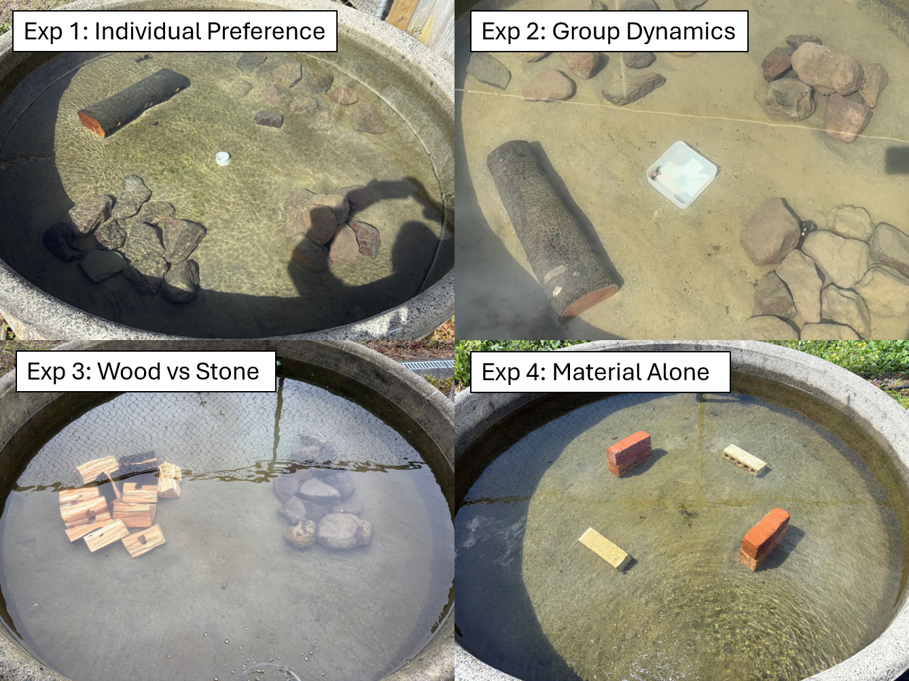
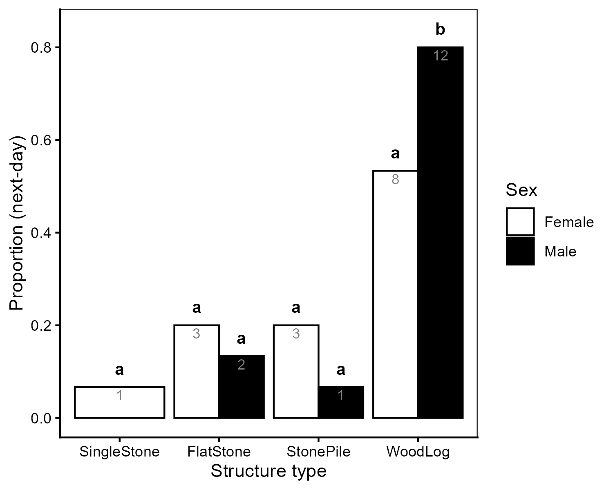
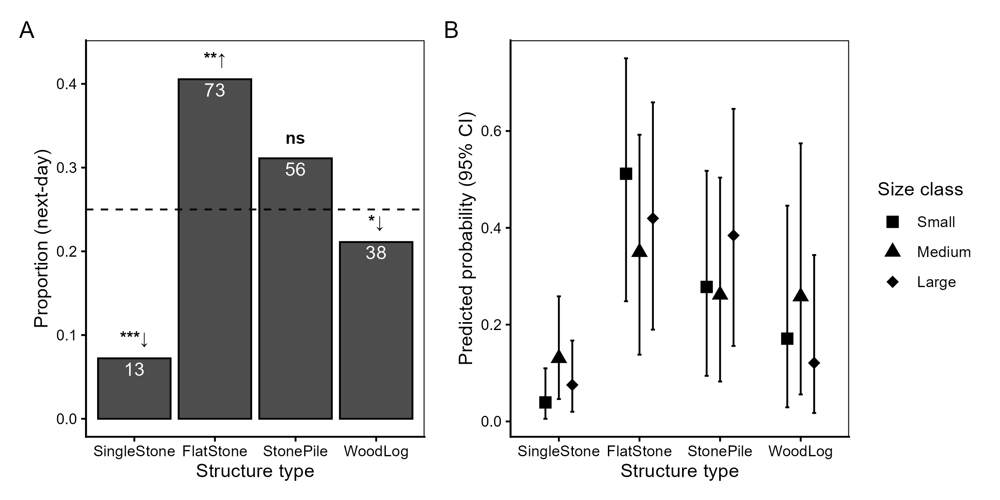
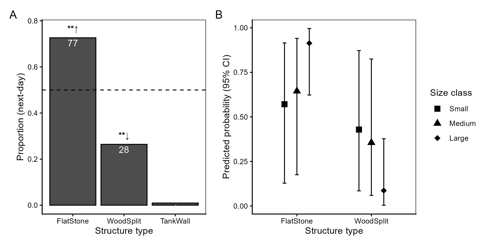
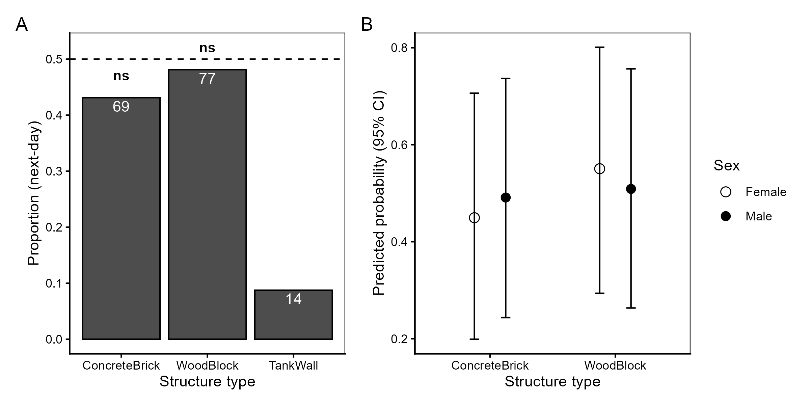
Rock Piles as Kōura Habitat
Abstract
Placeholder — abstract to be written.
Introduction
Freshwater biodiversity is declining faster than any other biome, with one quarter of freshwater fauna now threatened with extinction (Sayer et al. 2025). Among the most endangered are freshwater crayfish, with 32% of species assessed as threatened globally due to habitat loss, invasive species, and water quality decline (Richman et al. 2015). As keystone species and ecosystem engineers, crayfish play crucial roles in nutrient cycling, bioturbation, and foodweb dynamics, and their loss can have cascading consequences for freshwater ecosystems (Momot 1995; Collier et al. 1997; Parkyn et al. 2001).
In Aotearoa New Zealand (hereafter Aotearoa), the endemic freshwater crayfish kōura (Paranephrops planifrons White, 1842) is a taonga (culturally treasured) species of significant ecological and cultural importance to Māori, particularly for Te Arawa iwi of the Rotorua lakes region in the North Island of Aotearoa (Kusabs and Quinn 2009). Kōura support customary fisheries using cultural practices such as tau kōura, yet populations in Lakes Rotoiti and Rotorua have declined by up to 96 % over the past two decades, with consequent loss of these customary practices (Kusabs et al. 2015a; Kusabs et al. 2026). The primary driver of decline is predation by the invasive brown bullhead catfish (Ameiurus nebulosus Lesueur, 1819, hereafter catfish), confirmed in these lakes in 2016 and 2018 (Francis 2019; Grayling 2020). Catfish are native to eastern North America where they mostly live in muddy slow-moving water bodies and can survive and spawn in a wide temperature range, tolerate poor water quality, low oxygen concentration and have a broad diet (Scott and Crossman 1973), making them a highly adaptable/tolerant invader. Catfish were introduced in Aotearoa in 1877 as sport fish (McDowall 1994) with their distribution continuously spreading over the upper North Island such as the Waikato River and in 1985 they were detected in Lake Taupō (Barnes and Hicks 2003). In Aotearoa catfish are a major predator on kōura, as 64 % of large catfish (<250 mm fork length) had kōura in their stomach contents (Barnes and Hicks 2003). In combination with predation by catfish kōura are further compressed by multiple interacting stressors that progressively restrict their available habitat. Kōura are naturally found in complex rocky habitats (Jowett et al. 2008; Kusabs et al. 2015b) or in deeper parts of the lake to avoid predation during the day, migrating to the productive littoral zone at night to forage (Devcich 1979). However, thermal stratification creates anoxic conditions in deeper waters, displacing kōura into the shallow littoral zone (Kusabs et al. 2026), precisely where catfish predation pressure is greatest, as catfish rarely swim beyond 17 m depth (Dedual 2002). This compression is further intensified by dense invasive macrophyte beds obstructing kōura migration in the littoral zone (Kusabs and Quinn 2009), which also intensify oxygen depletion in deeper waters by die-off events (Vincent et al. 1984; Hamilton et al. 2005). The importance of deep refuge is shown by Lake Taupō, where kōura persist at a depth even in the presence of catfish because the lake remains oxygenated below the thermocline (Verburg and Albert 2019). In Lake Rotoiti this deep refuge becomes anoxic and unavailable for kōura (Kusabs et al. 2026). Next to direct predation catfish exposure triggers anti-predator responses in kōura including increased refuge use (Raven et al. 2026a), reducing time available for foraging and potentially suppressing growth and reproduction (Preisser et al. 2005; Sheriff et al. 2020). Climate change is expected to strengthen thermal stratification, expand anoxic zones (Woolway et al. 2021), and increase the range of suitable catfish habitat in Aotearoa, further reducing kōura persistence (Lee et al. 2025).
The compression of kōura into the littoral zone makes the quality of nearshore habitats increasingly important for kōura populations. In stream environments, kōura are positively associated with structurally complex habitats including bank undercuts, woody debris, leaf litter, and coarse substrates (Usio and Townsend 2000; Parkyn and Collier 2004; Jowett et al. 2008; Parkyn et al. 2009). In lake environments benthic substrate characteristics are a stronger predictor of kōura distribution than nutrient enrichment or predator abundance (Kusabs et al. 2015b), and kōura are positively associated with coarse substrates and riparian vegetation (Raven et al. 2026b). Coarse rocky substrate provides refugia from predators and shelter during moulting (Streissl and Hödl 2002). Experimental studies confirm that shelter availability directly reduces catfish predation on crayfish (Adams 2007; Zhao et al. 2024), and kōura increase refuge use in the presence of catfish compared to native predators (Raven et al. 2026a), emphasising the importance of shelter availability for kōura populations. Shelter availability is likely a limiting factor for kōura in Lake Rotoiti, where the majority of the shoreline is sandy with dense beds of introduced macrophytes and little natural rocky structure. Adding rocky substrate to soft-bottomed lake areas has been shown to significantly increase crayfish abundance (Johnsen and Taugbøl 2008), and increasing structural complexity in streams improves crayfish restocking success (Huolila et al. 1997). Deploying habitat enhancement structures that add structurally complexity in the littoral zone could potentially be a practical way to restore kōura populations in Lake Rotoiti.
In this study habitat enhancement structures in the shape of stone piles were deployed along the shoreline of Lake Rotoiti to investigate the ability of the structures in providing additional habitat for kōura to live and hide from predators. Kōura presence, abundance, and biomass were monitored at stone pile, control, and reference sites over 18 months. We predicted that kōura occupancy, abundance and biomass would increase at stone pile sites relative to control sites after construction, and that catfish would not change. We further predicted that kōura abundance would keep increasing progressively after construction, at least within the first 18 months, and that catfish would instead show seasonal patterns of shoreline use rather than a construction-driven trend (Barnes 1996; Dedual 2002). Finally, we predicted that stone pile sites would progressively converge toward kōura densities observed at natural rocky reference sites, and that catfish would not show this pattern.
Materials and Methods
Study location and construction
Lake Rotoiti (-38.03, 176.42) is a warm monomictic mesotrophic lake located in the Rotorua Te Arawa Lakes region of the North Island of Aotearoa (34 km², maximum depth 128 m). The lake stratifies for approximately nine months a year. Since 2008, nutrient-rich inflows from Lake Rotorua have been diverted toward the Kaituna River via the Ōhau Channel diversion wall to improve water quality in Lake Rotoiti (Hamilton et al. 2005; Prentice and Özkundakci 2024). Lake level is regulated by a weir at the outlet of the Kaituna River, providing a stable and controlled water level throughout the year. Catfish are present throughout the lake but occur in particularly high concentrations in Te Weta Bay on the North West side of the lake (Francis 2019). Five stone pile sites were selected alongside the lake shoreline based on accessibility and land owner approval (Figure 24). At each stone pile site, a paired control site was established 50 m along the shoreline in the same habitat type. Five naturally occurring rocky shoreline locations were selected as reference sites, each with two monitoring points 50 m apart. In total 20 sites of 150 m² (15 * 10 m) were monitored seasonally over 18 months. Baseline monitoring was conducted in February 2025 prior to stone pile deployment, which occurred the following week. Stone piles were constructed from locally sourced quarry rock (Manawahe Stone and Quarry, ~25 km from the lake) with a size range of 85 - 315 mm mean 173 mm. At each of the five stone pile sites, three stone piles were arranged horizontally along the shoreline by hand from the shore. Stone pile design was informed by mesocosm experiments demonstrating kōura preference for enclosed stone structures (Raven et al. in review). Stone piles were positioned approximately 4.3 m from shore at a mean depth of 0.49 m and with a mean area of 4.1 m².
Monitoring
Monitoring consisted of physical, chemical, and biological parameters recorded at each site during each monitoring round. Static site characteristics including substrate composition, slope to depth contour, riparian vegetation, overhanging tree cover and wood cover were visually estimated at baseline monitoring only, as these were not expected to change substantially over the monitoring period. Substrate composition was visually estimated using an underwater viewing chamber, categorising bedrock, boulders (>256 mm), cobble (64–256 mm), gravel (2–64 mm), sand (0.063–2 mm), mud (<0.063 mm), and organic matter. A substrate index was calculated from these estimates (Jowett and Richardson 1990; Jowett et al. 2008): \[ \begin{aligned} \text{Substrate index} &= 0.08 \times \text{bedrock} + 0.07 \times \text{boulders} \\ &\quad + 0.06 \times \text{cobble} + 0.04 \times \text{gravel} + 0.03 \times \text{sand} \\ &\quad + 0.02 \times \text{organic matter} + 0.01 \times \text{mud} \end{aligned} \] Coarser substrates were assigned higher weights as they provide greater interstitial pore space and stable structures used by kōura as refuge (Usio and Townsend 2000; Nyström et al. 2006). After stone pile construction, measurements of the size and dimensions of each structure were taken. The post-construction substrate index for stone pile sites was recalculated using each site’s combined stone-pile footprint area, expressed as a percentage of the 150 m² site area and treated as 80 % cobble and 20 % boulders displacing an equivalent area of sand, to reflect their contribution to substrate complexity. Slope was assessed as the horizontal distance from the shoreline to the 20 m depth contour, derived from bathymetric maps and measured in a projected coordinate system (NZTM2000; EPSG:2193).
Seasonal variable parameters were recorded at every monitoring round, and included aquatic vegetation cover (emergent and submerged macrophytes) and chemical parameters included water temperature (°C), dissolved oxygen (mg L\(^{-1}\)), and conductivity (\(\mu\)S cm\(^{-1}\)) were measured using a YSI ProSolo meter (Pro2030, YSI Inc., Yellow Springs, OH, USA). pH was measured using a handheld pH meter (EC-PCTestr35, Eutech Instruments).
Kōura and fish were every monitoring round sampled using two single-winged, double-throated fyke nets (600 mm high D-shaped entrance hoop) and two collapsible bait traps (480 × 250 mm; two 50 mm entrance openings) baited with catfish flesh (MacNeil et al. 2025). Fyke nets were placed perpendicular to the shoreline outside of the stone pile structures or at 10 m intervals, with bait traps positioned between them. All equipment was deployed simultaneously at each site for a 24-h period. Captured kōura were measured for orbital carapace length (OCL) using a digital calliper (0.01 mm precision; 150 mm) and for wet mass using a digital scale (± 1 g; 5 kg capacity, Anko Brand, Kmart Group, Mulgrave, VIC, Australia). Catfish and other fish species, including eels (Anguilla spp.), goldfish (Carassius auratus (Linnaeus, 1758)), common smelt (Retropinna retropinna (Richardson, 1848)), kōaro (Galaxias brevipinnis Günther, 1866), rainbow trout (Oncorhynchus mykiss Walbaum, 1792), common bully (Gobiomorphus cotidianus McDowall & Fulton, 1978), and mosquitofish (Gambusia affinis (S. F. Baird & Girard, 1853)), were recorded for abundance and measured for total length, and weighed for wet mass. Catch per unit effort (CPUE) and biomass per unit effort (BPUE) were calculated for all kōura and fish based on the number of nets and traps used at each site for each monitoring round (Kusabs et al. 2015b). Missing kōura weights due to failure of scale (n = 36) were estimated using a log₁₀–log₁₀ length–weight regression fitted to individuals with both measurements (n = 757), following standard approaches for weight length relationships in aquatic organisms [(Fig. S1)] (Froese 2006). Predicted values were back-transformed with a lognormal bias correction factor (10^{0.5 ^2}) (Quinn and Keough 2002).
\[ \log_{10}(\text{Weight [g]}) = -2.67 + 2.683 \times \log_{10}(\text{OCL length [mm]}) \]
Data analysis
Data analysis was divided into three sections, the first section assessed baseline equivalence between stone pile, control, and reference sites before construction, the second section assessed the impact of stone pile construction and after-construction trajectory on kōura and catfish occupancy, abundance, and biomass, and the third section assessed whether stone pile sites converged toward reference sites and if reference sites remained stable over time. All analysis was conducted in R (version 4.5.2; R Core Team (2025)) using the glmmTMB and emmeans packages (Brooks et al. 2017; Lenth and Piaskowski 2017).
Site variation before stone pile construction was assessed using paired Wilcoxon signed-rank tests to compare stone pile sites with their paired control sites, and unpaired Wilcoxon rank-sum tests to compare stone pile sites with reference sites. This was done for response variables (water quality, substrate, CPUE, BPUE) to confirm that the stone pile and control sites were equivalent before construction, and to characterise the difference between stone pile and reference sites. To further assess the baseline equivalence generalised linear models (GLMs) were fitted testing the CPUE and BPUE of kōura and catfish against site type (stone pile/control) and tested each of the two reference sites (reference 1/reference 2) with a Tweedie family and log link. The covariate temperature was included in the catfish abundance and biomass models testing the reference sites to allow model convergence.
The second section of the analysis tested construction impact relative to control sites using a before-after, control-impact (BACI) design (Underwood 1994) and tested after-construction trajectory of kōura and catfish populations. The BACI design tested using generalised linear mixed effects models (GLMMs) the effect of stone pile construction on kōura and catfish occupancy, abundance, and biomass by comparing one pre-construction monitoring round with six post-construction monitoring rounds. The models tested period (before/after) and site type (stone pile/control) as an interaction term, with monitoring round as a covariate and site nested within pair as a random effect. Occupancy was tested with a Binomial family and abundance and biomass using a Tweedie family with log link. The after-construction trajectory models were tested using GLMMs with site type (stone pile/control) and monitoring round as interaction terms and site number as random effect using similar families as the BACI models.
The third section of the analysis assessed whether stone pile sites converged toward reference sites and if reference sites remained stable over time. Kōura and catfish abundance, and biomass were tested in GLMMs fitted with site type (stone pile/reference) and monitoring round as interaction terms with site number as random effect using a Tweedie family with log link. The catfish abundance model also included temperature as a covariate. The reference site stability was tested in GLMMs fitted with site type (reference 1/reference 2) and monitoring round as interaction terms with site nested within pair as a random effect also using a Tweedie family with log link. Temperature was included in the catfish abundance and season was included in the kōura abundance as covariates.
Multiple-testing correction using Benjamini–Hochberg correction was applied within each research sub-question across the set of models tested. Robustness of the models was further assessed via sensitivity analyses and all models were tested for uniform distribution, dispersion, and outlier rate using the DHARMa package (Hartig 2016). Covariate selection for each model was preformend by comparing Corrected Akaike Information Criterion (AICc) of the base model against models with one additional covariate (temperature, season, or substrate index) added at a time. A covariate was retained only when it reduced AICc by more then 2 units relative to the base model (Burnham and R. 2002). Temperature was retained in in catfish models where it substantially improved model fit, consistent with catfish being associated with warmer water temperatures (Scott and Crossman 1973). For the two reference-site catfish models specifically, the base model failed to converge and temperature was required for numerical stability. Season was retained in the kōura abundance model for reference stability, reflecting the known seasonal variation in kōura abundance (Kusabs et al. 2015b). Season could not be evaluated for the BACI models as it is collinear with the before/after period contrast.
Results
Baseline equivalence
Construction impact relative to control sites
Recovery toward reference conditions
Discussion
Opening
Baseline and site context*
Construction impact*
Trap catches alone cannot determine whether kōura are actively using stone piles or are simply present in the surrounding area. For Chapter 5 higher catches near stone piles were therefore interpreted as indicating greater habitat use of the structures. In structurally complex habitats, fyke nets must be placed flat on the sediment to fish effectively; on rocky substrates this is often not possible, and kōura may pass beneath the net opening entirely.
Convergence and recovery*
Implications and future directions*
For future studies it is recommended
Most kōura were found along the edges of the stone piles there for recommended future stone piles should be designed to create the most edges.
Stone piles were constructed at the shore line to shallow to reach machrophyte beds which are located further offshore. Future stone pile construction could be extended further offshore to reach the macrophyte beds and test if stone piles could suppress machrophyte growth and create pathways for kōura to move between the deeperparts of the lake and the shore.
Conclusion
Acknowledgements
We thank Te Arawa Lakes Trust and Te Komiti Whakahaere for the opportunity to study the treasured kōura. We are grateful to Soweeta Fort-D’ath and William Anaru (Te Arawa Lakes Trust), and Tihini Grant (Ngāti Pikiao).to the Tāheke Opatia Marae, Te Takinga Marae, and landowners, Piripi Curtis, David McIlraith, Piki Thomas, Haddon Lock, Barnett Vercoe, Richard Vercoe, and Caroline Newton, for granting access to monitoring sites and facilitating fieldwork in Lake Rotoiti. We thank of Joe Butterworth, Cory O’Neill, Alex Simes, Martin Sarkezi, Mael Marguet, Ethan Morgan, Logan Kallam, Calum MacNeil, and Matt Prentice for assisting with fieldwork and data collection.
Funding statement
This research was supported by the Fish Futures programme funded through a Ministry of Business, Innovation and Employment grant (CAWX2101) with additional funding provided by the Bay of Plenty Regional Council under the Toihuarewa Waimāori - Bay of Plenty Regional Council Chair in Lake and Freshwater Science programme.
Use of Artificial Intelligence
Use of Artificial Intelligence: Claude (Anthropic) was used to assist with manuscript editing and language refinement. All content was critically reviewed and the authors take full responsibility for the final manuscript.
Declarations
The corresponding author has declared that none of the authors has any competing interests.
Data availability statement
The code and derived data supporting the findings of this study are openly available on GitHub (https://github.com/OlivierRaven/Stone_Piles_Rotoiti)and a rendered version of the analysis is hosted at https://olivierraven.github.io/Stone_Piles_Rotoiti/. The primary raw dataset is archived on Zenodo (https://doi.org/……). Peer review documents, including the cover letter and reviewer responses, are available in the manuscript repository in the interest of open and transparent science.
Tables
| Variable | Stone_pile | Control | Reference | p_vs_Control | p_vs_Reference |
|---|---|---|---|---|---|
| Kōura CPUE | 0.2 ± 0.27 | 0.15 ± 0.22 | 2.13 ± 2.32 | 1.000 | 0.205 |
| Catfish CPUE | 0.05 ± 0.11 | 0.1 ± 0.22 | 0.3 ± 0.52 | 1.000 | 0.420 |
| Kōura BPUE | 7.95 ± 12.15 | 2.8 ± 3.84 | 36.69 ± 36.82 | 0.789 | 0.206 |
| Catfish BPUE | 0.15 ± 0.34 | 24.6 ± 55.01 | 97.28 ± 232.15 | 1.000 | 0.343 |
| Substrate index (before) | 3.39 ± 1.07 | 3.68 ± 0.95 | 5.29 ± 1.05 | 0.789 | 0.012 |
| Substrate index (after) | 3.65 ± 1.12 | 3.68 ± 0.95 | 5.29 ± 1.05 | 1.000 | 0.032 |
| Slope (0–20 m) | 0.06 ± 0.05 | 0.06 ± 0.04 | 0.09 ± 0.05 | 0.590 | 0.245 |
| Temperature (°C) | 24.74 ± 1.92 | 24.78 ± 1.47 | 24.48 ± 0.78 | 1.000 | 0.623 |
| Dissolved oxygen (mg/L) | 9.85 ± 1.48 | 9.63 ± 1.29 | 10.03 ± 0.86 | 0.418 | 0.426 |
| Specific conductivity (µS/cm) | 195.44 ± 70.05 | 199.8 ± 78.52 | 165.45 ± 8.5 | 0.281 | 0.951 |
| pH | 7.5 ± 2.15 | 7.61 ± 2.2 | 8.53 ± 0.66 | 1.000 | 0.426 |
Figures

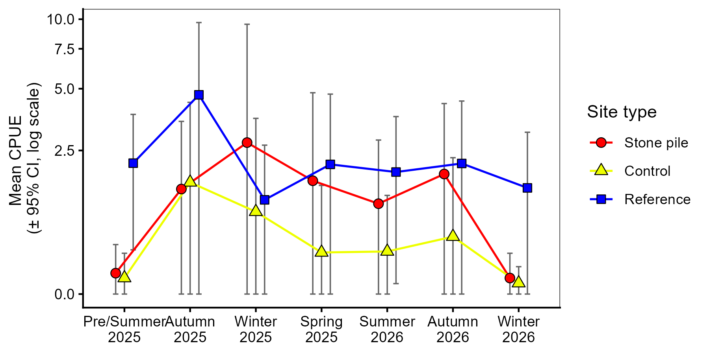
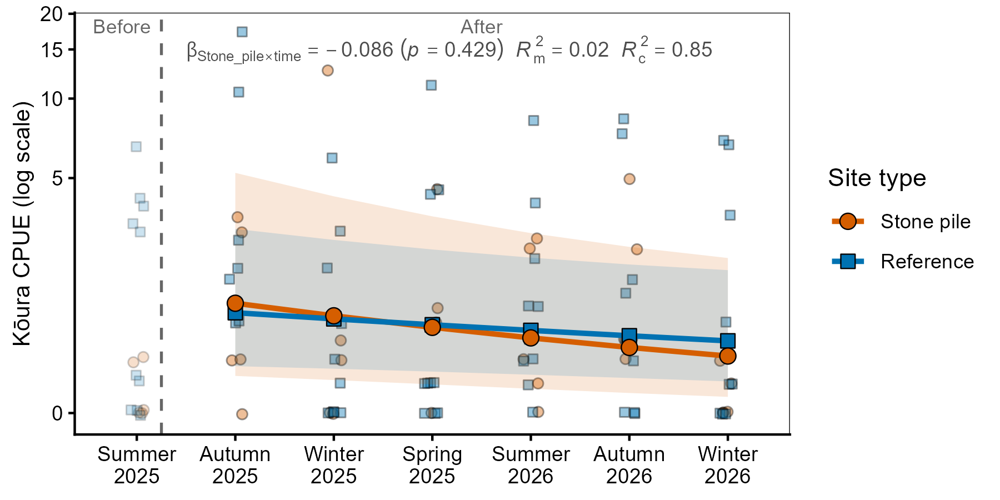
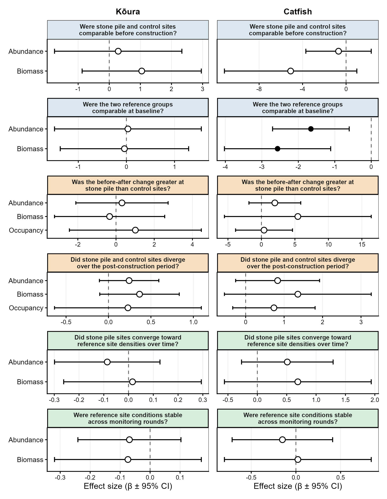
Synthesis
Introduction
The chapters preceding this synthesis established the ecological and practical basis for using stone piles as a kōura habitat restoration tool. Behavioural experiments (Chapter 2) confirmed that kōura respond with heightened refuge use to novel predatores than native ones. Field observations (Chapter 3) identified the habitat features that support kōura along lake shorelines, and mesocosm trials (Chapter 4) showed that structure stability and complexity matter more than material when kōura select shelter. Chapter 5 demonstrated that stone piles deployed along the shoreline of Lake Rotoiti attracted kōura at densities approaching those on natural rocky substrates. This chapter will synthesise on the findings and main discussions of each chapter and presents two pilot studies that extend the work in different directions. The first trialled the construction logistics and kōura reintroduction in Lake Ōkaro. The second extended deployment into deeper water across a depth gradient and different monitoring methods will be discussed. Together with the main chapters, these case studies broaden the application of the restoration approach developed in this thesis for future deployment and monitoring.
Three stressors working together
As documented by Kusabs et al. (2026), the establishment of catfish (Ameiurus nebulosus) in Lakes Rotorua and Rotoiti has been accompanied by substantial declines in kōura abundance and biomass. Catfish predation is, however, only one of the three compounding stressors that together determine where kōura can persist in the Rotorua Te Arawa Lakes. The second stressor is thermal stratification and the seasonal anoxia it produces. As described in the general introduction, stratification compresses the zone of livable habitat for kōura into the shallow littoral margins of the lake, this is the same zone where catfish are most active. For fish, habitat compression is conventionally calculated volumetrically, since fish use the full water column. This volumetric loss is disproportionately large in shallow sloped lakes like Rotorua and Rotoiti compared to deep-basin lakes due to the concentration of water volume near the surface (Detmer 2026). For kōura, as bottom-dwelling animals, the constraint is more severe as livable habitat is defined by bottom area, not volume, so compression of the oxygenated zone translates directly into a reduction of available benthic surface. Catfish are largely unaffected by this compression, tolerating both low oxygen and elevated temperatures, while kōura are driven upwards into the shallow zone where predation pressure is highest. Climate projections suggest this dynamic will intensify as stratification strengthens and anoxic events become more frequent and prolonged (Jane et al. 2021; Lee et al. 2025). The third stressor is the presence of invasive macrophytes in the littoral zone. Dense macrophyte beds reduce the structural complexity of the shoreline, replacing and or covering up rocky habitats reducing preferred kōura habitat with a dense uniform layer that favours catfish. Macrophytes also contribute to oxygen depletion during die-off events, further reducing the habitable area available to kōura. The field surveys in Chapter 3 provide additional grounding for this compounding effect. Across the five monitored lakes, oligotrophic lakes with structurally complex shorelines and no catfish present had the highest kōura catches, while lakes like Rotorua and Rotoiti with catfish, eutrophication, stratification, and extensive macrophyte cover yielded substantially lower kōura numbers. Habitat restoration is therefore not a stand-alone solution. Stone pile deployment can address structural habitat availability, but not the other stressors and as a stand-alone action it will have limited effect. Evidence from Chapter 3 suggests that kōura recovery requires water quality improvement, predator management, macrophyte control, and habitat restoration working together, with restoration most likely to succeed in lakes with improving conditions.
Fear as a reason to build
Chapter 2 showed that kōura react with heightened refuge use when exposed to catfish compared to native predators like eels. This is consistent with the response expected of a prey species encountering a novel predator, one of which it has no evolutionary history and therefore no calibrated sense of risk (Sih et al. 2023). This leads to maximum caution, kōura increase their chance of survival, but at a cost. An animal spending more time in refuge is an animal spending less time foraging, leading to slower growth and reduced reproductive outputs. This is the core mechanism behind the landscape of fear (Laundré et al. 2001), where predators do not need to eat every prey individual to suppress a population, but their presence alone is sufficient to reshape how prey use space and time, and those behavioural changes carry demographic consequences. In the context of the Rotorua Te Arawa Lakes, this means that catfish suppress kōura populations through two channels simultaneously. Direct predation removes individuals and fear-induced behavioural change reduces the reproductive capaccity of those that survive. Population recovery under these conditions is likely to be slow even if predation rates are reduced, because the behaviour suppression persists as long as catfish are present. Habitat restoration can play an important intervantion. Chapter 5 showed that stone piles in Lake Rotoiti attracted kōura densities approaching those on natural rocky substrates, despite the ongoing presence of catfish. High-quality refuge does not eliminate the fear response, but it provides kōura with locations where they can shelter effectively, emerge to forage in relative safety, and maintain sufficient activity levels to reproduce. In catfish-invaded lakes where predator eradication is ongoing, habitat provision may therefore be what allows a remnant population to persist and slowly recover rather than declining to local extinction. Stone piles are not solving fear responses but they could be helpful in managing its consequences.
Case study - field trial stones piles Lake Ōkaro
Before deploying stone piles in Lake Rotoiti, the construction logistics of loading stones onto a trailer and placing them by hand were first trialled in Lake Ōkaro. Lake Ōkaro is one of the smaller Rotorura Te Arawa volcanic lakes with an area of 30.19 ha, a max depth of 18 m and a mean depth of 12.5 m. Water quality in the lake has been very poor with trophic state flipping between hypereutrophic and eutrophic and frequent algae blooms (BRON?). To improve water quality in the lake, in 2007 a wetland has been constructed to remove nitrogen and sediments off the main inflows into the lake (Hudson et al. 2009). Twice a year alum dosings (aluminum sulfate) are executed as in lake phosphorous treatment (BRON?). Kōura have not been present in Lake Ōkaro in monitorings from 1981 to 2007 (Parkyn and Kusabs 2007) and monitoring in 2016 and 2017 still found no kōura in the lake even as water quality had been improved (Kusabs 2017). Water quality now should be far enough restored that kōura should be able to survive in the lake but natural recolonisation has not happened yet, therefore reintroduction might be possible. Lake Ōkaro is stocked with trout for angling and as a predator of kōura, extra refuge and habitat by stone piles would be good to trial in this lake. The lake has no stone or rocky substrates therefore the construction of two stone piles would provide initial refuge for the introduced kōura in the lake.
Construction of the stone piles was executed by all parties involved in the lake with people from Te Arawa Lake Trust, Ngāti Tahu - Ngāti Whaoa, Te Mana o Ngāti Rangitihi Trust, and Bay of Plenty Regional Council. Stones were sourced from Rainbow Quarry located on Rainbow Mountain three km from the lake. Stones used had a size range of 70-210 mm mean 120 mm and a total of 5 m\(^{3}\) was divided over two stone piles on the north east shore of the lake. Stone piles were placed 3 and 6 m of the shore, horizontal each 5 m long and 2 meters wide at 1 m depth. To follow dissolved oxygen and temperature development of the stone piles and how they compare to the rest of the lake on 11 September 2024 three HOBO U26-001 Dissolved Oxygen Data Loggers (± 0.2 mg L\(^{-1}\) DO accuracy, ± 0.2 °C temperature accuracy; 0–30 mg L\(^{-1}\) measurement range; Onset Computer Corporation, Bourne, MA, USA), were placed in the lake for a period of six months. Two loggers were buried inside the stone piles and a third logger was placed outside of the stone piles as control. In October 2024 twenty kōura sourced from within the catchment were reintroduction on the stone piles to start a new population of kōura in the lake.
In the early summer of 2024 the lake stratified rapidly with oxygen levels dropping quickly and at December 10th oxygen levels reaching less than 3 mg L\(^{-1}\) at water surface level for multiple days (Figure 28). The HOBO loggers in the stone piles and the control next to the structures showed that inside the structures the dissolved oxygen levels dropped slightly faster than compared to the control site, and that the daily average of dissolved oxygen was lower than outside of the stone piles (Figure 28). This is expected as the sensors inside the stone pile received less water mixing and were in close proximity to periphyton, which draws down dissolved oxygen through respiration during the night. During anoxic events, kōura are expected to move to the outer margins of the stone piles or emerge entirely, as DO levels inside the structure would fall below tolerance. Kōura survival through this event is unlikely given the prolonged hypoxic conditions.
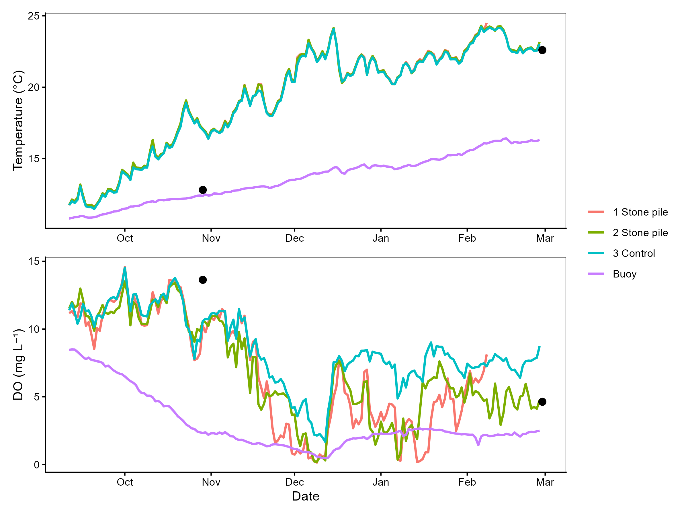
Construction of stone piles by hand is a very cheap and easy way of building extra structure and refuge for kōura in the shallows. The reintroduction of kōura was made difficult by a strong anoxic event. Nevertheless the lessons learned were of great value for the further development of the stone pile structure as the stone size in Ōkaro was smaller (range 70-210 mm; mean 120 mm) leading to more effort of getting the stones from the trailer into the lake and smaller stones provide smaller crevice sizes limiting shelter availability for larger size kōura. For deployment in Lake Rotoiti slightly larger stones (85-315 mm; mean 173 mm) were therefore selected to build the stone piles. This size range was very convenient as the size of the stones was requiring machinery for lifting which gave the opportunity to throw the stones further than the end of the trailer and made it possible to rearrange the stones if needed. The Ōkaro trial demonstrated that habitat restoration cannot succeed ahead of water quality recovery. The anoxic event that followed stone pile deployment confirmed that structural complexity provides no benefit when dissolved oxygen drops below kōura tolerance, kōura cannot use a refuge they cannot reach. This reinforces the sequencing argument made later in this chapter: habitat provision must follow, not precede, the establishment of survivable conditions.
Case study - deep stone piles Lake Rotoiti
All stone piles deployed in the preceding chapters, and in the Ōkaro trial, were built by hand from the shore and therefore limited to shallow, nearshore depths. Extending deployment across a depth gradient required working from a boat, which opened two additional possibilities: placing structures at depths beyond wading distance, and positioning them within invasive macrophyte beds to test whether stone coverage could suppress growth. Monitoring at greater depths is not well suited to standard netting, so spotlighting, remotely operated vehicle (ROV) surveys, and human diving were used before and after construction at this deep Lake Rotoiti site. Spotlighting was executed after sunset along the shoreline and the area around the jetty, by observing for kōura using a torch. Each kōura was counted and their size estimated. The stone piles in the macrophyte bed and deeper were after sunset monitored using a FIFISH V-EVO (4K 60 fps camera; 166° field of view; QYSEA Technology, Shenzhen, China). The ROV was used to swim transects at the location of the stone piles and kōura shown were counted. Kōura CPUE was calculated over the time spent monitoring. Spotlight and ROV monitoring was executed two times before stone pile construction, and day-time diving was executed once before construction.
The construction of four deep stone piles in Lake Rotoiti took place on the 20th of November 2025. Three of the stone piles were constructed perpendicular to the shoreline, with the first one placed underneath a jetty at around 1 m depth. The second was placed in the middle of an invasive macrophyte bed in front of the jetty around 3 m depth, and the third was placed at the end of the macrophytes at a depth from 7 to 9 m. To prevent the stones from sinking into the sandy sediment, wooden slabs were first installed after which the stones were placed, holding the wooden slabs in place. The fourth stone pile was constructed on a bedrock shelf 120 m away from the other stone piles. As these stones were placed on bedrock no wooden slabs were needed. Construction was executed by a boat with a winch lowering bags of stones to the designated location and emptied by divers.
The first pre monitoring (30/06/2025; water temp 13 °C) resulted in two kōura sightings by spotlighting and two by the ROV, second pre monitoring (26/08/2025; water temp 11 °C) showed zero kōura by spotlighting but seven with the ROV. The human dive did not find any kōura before construction (10/11/2025; water temp 18.7 °C). The monitoring after construction (1/05/2026; water temp 16 °C) revealed ten kōura by spotlighting around the jetty and eleven kōura on the deeper stone piles in front of the jetty monitored by the ROV. Most kōura were seen at the border of the stone piles where they met with the sandy substrate; this was expected as visual it was hard to look inside the stone piles and kōura were observed when emerged and started foraging. The stone pile in the macrophyte bed showed a complete block of macrophyte growth but at the sides the macrophytes were present densely making kōura observations difficult. The human diving did not find any kōura (15/01/2026; water temp 21.7 °C) but noticed many bullies around the stone piles. The second human dive (28/07/2026; water temp … °C) found … kōura.
As kōura are nocturnal daytime monitoring is expected to receive lower kōura counts as they are assumably hidden away between the stones and its not expected that the kōura will be observed outside of their shelter during the day. Footage of the ROV showed that despite the noise of the engines the kōura do emerge from their hiding place and they do not look affected by the monitoring of the ROV. Extending deployment across a depth gradient adds an important dimension absent from the shallow shoreline work of chapter 5. Kōura can access and use refuges below the macrophyte zone, and structures distributed across multiple depths give the flexibility to shift between refuges as thermal stratification seasonally compresses the oxygenated zone upward. Stone piles at depth therefore address not only structural habitat availability but also the habitat compression dynamic identified as a key stressor in the Rotorua Te Arawa Lakes, and the observed suppression of macrophytes at deeper piles suggests an additional co-benefit of restoring structural habitat in overgrown littoral zones and possibly creates corridors connecting deep and shallow habitats.
Kōura monitoring approaches
The choice of monitoring method depends on what question is being asked. Methods that sample a general area answer “how many kōura are present in this location?” while active, site specific methods answer “are kōura using this structure?”. These are distinct questions, and selecting the right monitoring method for each is relevant. Traditional Māori harvesting methods using tau kōura with whakaweku (bundles of bracken fern Pteridium esculentum) have proven effective for kōura monitoring in lakes and stream habitats (Kusabs and Quinn 2009; Kusabs et al. 2018). In the shallow wave-exposed zone of a lake, however whakaweku is less suitable as wave action destabilises the bundles, reducing their effectiveness as a consistent shelter substrate. A further limitation in the context of this thesis is that whakaweku creates habitat. Using it to assess whether stone piles attract kōura would confound the monitoring tool with the intervention, making it impossible to determine whether kōura are responding to the stone pile or the whakaweku itself. Passive netting with single-winged fyke nets and baited box traps was therefore used throughout Chapter 3 and 5. Box traps baited with trout flesh in Chapter 3 and catfish flesh in Chapter 5. When comparing catches at Lake Rotoiti sites, no difference was found between bait types. This was expected as kōura scavenge carcases of dead predator fish without bias towards native or non-native species (MacNeil et al. 2025). Trout as bait yielded a CPUE of 0.682 kōura per trap and catfish bait 0.638 kōura per trap. Unbaited fyke nets had a notably higher CPUE of 2.71 kōura per trap in the same lake, consistent with their larger net opening and longer fishing lead. Fyke nets also catch other fish species, which is useful if community composition is of interest. However, 24-hour passive netting provides an approximation of local abundance rather than direct evidence of habitat use. Trap catches alone cannot determine whether kōura are actively using stone piles or are simply present in the surrounding area. For Chapter 5 higher catches near stone piles were therefore interpreted as indicating greater habitat use of the structures. In structurally complex habitats, fyke nets must be placed flat on the sediment to fish effectively; on rocky substrates this is often not possible, and kōura may pass beneath the net opening entirely. At the deep structures build in Lake Rotoiti, more active monitoring approaches were applied including spotlighting, human dive surveys, and ROV dive surveys. These methods allow direct observation of kōura using the structures and are easier to execute over depth than netting.
Looking forward, it would be valuable to develop and trial additional monitoring techniques including environmental DNA (eDNA), remote underwater video (RUV), baited remote underwater video (BRUV), and passive acoustic monitoring. Comparative studies suggest that trapping, RUV, BRUV perform similarly for crayfish detection while eDNA has failed to detect crayfish in similar stream system (Harwood et al. 2025, 2026). Conversely, eDNA has detected invasive crayfish in lakes where trapping alone could not (Dougherty et al. 2016), suggesting it may be better suited to lake-scale presence-absence assessments than to evaluate kōura use of specific structures. Passive acoustics offer a complementary approach as crayfish produce distinctive sounds during movement and feeding, and acoustic methods have shown potential for identifying crayfish behaviour in field and laboratory settings (Buscaino et al. 2012; De Vita et al. 2023). Application in marine systems has advanced further, including detection of spiny lobsters over great distances (Jézéquel et al. 2023; Jezequel2020?), and the potential for passive acoustic monitoring in lakes warrants exploration for kōura.
What restoration can and cannot fix
Chapter 3 showed that kōura were most consistently associated with complex rocky habitats and riparian vegetation. Locations where this substrte has been lost or never existed are therefor logical candidates for stone pile restoration. Chapter 4 confirmed that stability and structural complexity are the decisive factors in kōura shelter selection, and stone piles deliver both. In lakes where populations are declining, stone piles can help a remnant population persist and create habitat stepping stones that lower the cost of dispersal between patches, keeping populations more connected while broader lake conditions improve. Stone piles can also physically suppress invasive macrophytes at the placement site as demonstrated in the deep Rotoiti case study. Whether habitat restoration achieves those benefits depends on whether habitat is actually the limiting factor. In a Norwegian lake where muddy substrates limited noble crayfish (Astacus astacus) distribution, adding rocky substrate to previously unproductive areas resulted in colonisation and improved harvest (Johnsen and Taugbøl 2008). In that system, habitat was the constraint, and removing it produced a measurable response. Similarly, structure additions to streams have been shown to improve success of crayfish restocking efforst (Huolila et al. 1997). In both cases, the stressor being addressed was the primary one operating on the population. The situation in the Rotorua Te Arawa Lakes is more complex. Lack of suitable habitat is one of the compounding stressors, and addressing it alone will not produce the same clear response. If dissolved oxygen drops below kōura tolerance, structure is irrelevant as demonstrated by the anoxic event in Lake Ōkaro. If catfish pressure remains high, stone piles improve survival odds but cannot prevent the ongoing suppression from predation and fear effects. Restoration therefore sets a ceiling defined by the other stressors: Chapter 3 showed that the lakes with the best habitat and the best water quality, most complex habitat, and no catfish support the highest kōura abundance. The question is not whether to restore habitat, but at what point in a lake’s recovery trajectory habitat becomes the limiting factor, and before that point, improving water quality and reducing predator pressure will produce greater return. The sequence of kōura population recovery would start with stabilising water quality to a point where it falls within kōura acceptable limits, then focus would need to be on predator management, lowering the predation pressure and then habitat recovery and if needed reintroduction.
Future direction
What have we learned for the future…
Scaling restoration
When water quality and other aspacts are solved, stonepile deployment in catfish invaded lakes helps
Community contributions
Residents living along the lakes could help also instead of having a retaining wall not providing habitat replace it with stones and bring the stones into the deeper parts if possible to create kōura shelters. under jettys placing stones are out of the way of boating or swimming and create perfect structure for kōura.
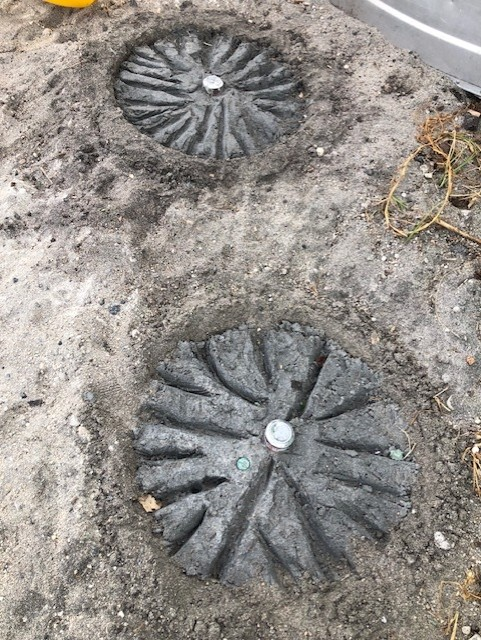

To
Te Arawa and cultural dimension
Increasing shelter availability in the lake will atrrect kōura which in turn can lead to kōura population recovery with in the future possible recovery of cultural practices as now little is happening in Cherry Bay (Ōkahuroroa Bay) Rotoiti with abundunce tau kōura monitoring brining a high density of whakaweku creating complexity.
General Conclusion
Main findings
The results showed that kōura reacted with more refuge use to the novel catfish than when exposed to native eels, complex shoreline habitats consisting of rocks and riparian vegetation were best predictors of kōura presence. When hole sizes were kept similar kōura had no preference between wood or stone material but when stability differed more stable structures are preferred also configurations that provided more complex refugia for individuals of different sizes is best suited for kōura recovery. Stone piles deployed in Lake Rotoiti attrected kōura at densities more comparable to natural rocky substrates than bare control sites, though differences over the 18-month monitoring period we not yet statistically significant. Extended monitoring is expected to reveal stronger population-level responses as kōura progresivly colonise the structures.
Takeaway measage
References
Abrams PA (2000) The evolution of predator-prey interactions: Theory and evidence. Annual Review of Ecology and Systematics 31:79–105. https://doi.org/10.1146/annurev.ecolsys.31.1.79
Achtymichuk GH, Fish KM, Ferrari MCO (2025) The power of concentration: Antipredator responses to diluted frozen crayfish alarm cues provide insights on ecologically relevant concentrations and updates to methodology. PLOS One 20:e0340001. https://doi.org/10.1371/journal.pone.0340001
Adams SB (2014) Crayfish use of trash versus natural cover in incised, sand-bed streams. Environmental Management 53:382–392. https://doi.org/10.1007/s00267-013-0197-3
Adams SB (2007) Direct and indirect effects of channel catfish (Ictalurus punctatus) on native crayfishes (Cambaridae) in experimental tanks. The American Midland Naturalist 158:85–96. https://doi.org/10.1674/0003-0031(2007)158[85:daieoc]2.0.co;2
Albertson LK, Daniels MD (2018) Crayfish ecosystem engineering effects on riverbed disturbance and topography are mediated by size and behavior. Freshwater Science 37:836–844. https://doi.org/10.1086/700884
Angilletta MJ, Steury TD, Sears MW (2004) Temperature, growth rate, and body size in ectotherms: Fitting pieces of a life-history puzzle. Integrative and Comparative Biology 44:498–509. https://doi.org/10.1093/icb/44.6.498
Appelberg M, Soederbaeck B, Odelstroem T (1993) Predator detection and perception of predation risk in the crayfish Astacus astacus l. Nordic journal of freshwater research 68:55–62
Baine M (2001) Artificial reefs: A review of their design, application, management and performance. Ocean & Coastal Management 44:241–259. https://doi.org/10.1016/s0964-5691(01)00048-5
Banks-Leite C, Ewers RM, Folkard-Tapp H, Fraser A (2020) Countering the effects of habitat loss, fragmentation, and degradation through habitat restoration. One Earth 3:672–676. https://doi.org/10.1016/j.oneear.2020.11.016
Barnes GE (1996) The biology and general ecology of the brown bullhead catfish (Ameiurus nebulosus) in Lake Taupo. Master of Science thesis, University of Waikato
Barnes GE, Hicks BJ (2003) Brown bullhead catfish (Ameiurus nebulosus) in Lake Taupo. In: Managing invasive freshwater fish in New Zealand: Proceedings of a workshop hosted by Department of Conservation, 10-12 may 2001, Hamilton. Department of Conservation
Beattie MC, Moore PA (2018) Predator recognition of chemical cues in crayfish: Diet and experience influence the ability to detect predation threats. Behaviour 155:505–530. https://doi.org/10.1163/1568539x-00003501
Beck MW (1995) Size-specific shelter limitation in stone crabs: A test of the demographic bottleneck hypothesis. Ecology 76:968–980. https://doi.org/10.2307/1939360
Blair JM, Hicks BJ (2009) An investigation to determine origin: Age and otolith chemistry of a brown bullhead catfish (ameiurus nebulosus) found at Okawa Bay, Lake Rotoiti. Centre for Biodiversity; Ecology Research, University of Waikato, Hamilton, New Zealand
Blake MA, Hart PJB (1993) The behavioural responses of juvenile signal crayfish Pacifastacus leniusculus to stimuli from perch and eels. Freshwater Biology 29:89–97. https://doi.org/10.1111/j.1365-2427.1993.tb00747.x
Bolker BM, Brooks ME, Clark CJ, et al (2009) Generalized linear mixed models: A practical guide for ecology and evolution. Trends in Ecology & Evolution 24:127–135. https://doi.org/10.1016/j.tree.2008.10.008
Brönmark C, Hansson L-A (2012) Chemical ecology in aquatic systems. Oxford University Press
Brooks M, Bolker B, Kristensen K, et al (2017) glmmTMB: Generalized linear mixed models using template model builder. CRAN: Contributed Packages
Broughton RJ, Marsden ID, Hill JV, Glover CN (2017) Behavioural, physiological and biochemical responses to aquatic hypoxia in the freshwater crayfish, Paranephrops zealandicus. Comparative Biochemistry and Physiology Part A: Molecular & Integrative Physiology 212:72–80. https://doi.org/10.1016/j.cbpa.2017.07.013
Brown GE, Poirier J-F, Adrian JC (2004) Assessment of local predation risk: The role of subthreshold concentrations of chemical alarm cues. Behavioral Ecology 15:810–815. https://doi.org/10.1093/beheco/arh084
Brown LA (2009) Habitat determinants and predatory interactions of the endemic freshwater crayfish (koura, Paranephrops planifrons) in the lower North Island, New Zealand. Master’s thesis, Massey University
Bunch AJ, Allen MS, Gwinn DC (2010) Spatial and temporal hypoxia dynamics in dense emergent macrophytes in a Florida lake. Wetlands 30:429–435. https://doi.org/10.1007/s13157-010-0051-9
Bürkner P-C, Gabry J, Weber S, Johnson A (2025) brms: Bayesian regression models using Stan
Burnham KP, R. AD (2002) Advanced issues and deeper insights. In: Model selection and multimodel inference: A practical information-theoretic approach. Springer, New York, NY, pp 267–351
Burton T (2017) Lake weed and the Rotorua Te Arawa Lakes then and now
Buscaino G, Filiciotto F, Buffa G, et al (2012) The underwater acoustic activities of the red swamp crayfish <i>procambarus clarkii</i>. The Journal of the Acoustical Society of America 132:1792–1798. https://doi.org/10.1121/1.4742744
Butler M, MacDiarmid A, Booth J (1999) The cause and consequence of ontogenetic changes in social aggregation in New Zealand spiny lobsters. Marine Ecology Progress Series 188:179–191. https://doi.org/10.3354/meps188179
Capinha C, Larson ER, Tricarico E, et al (2013) Effects of climate change, invasive species, and disease on the distribution of native European crayfishes. Conservation Biology 27:731–740. https://doi.org/10.1111/cobi.12043
Carthey AJR, Banks PB (2014) Naïveté in novel ecological interactions: Lessons from theory and experimental evidence. Biological Reviews 89:932–949. https://doi.org/10.1111/brv.12087
Chambers PA (1987) Nearshore occurrence of submersed aquatic macrophytes in relation to wave action. Canadian Journal of Fisheries and Aquatic Sciences 44:1666–1669. https://doi.org/10.1139/f87-204
Childress MJ, Herrnkind WF (2001) The guide effect influence on the gregariousness of juvenile caribbean spiny lobsters. Animal Behaviour 62:465–472. https://doi.org/10.1006/anbe.2001.1760
Clapcott J, Ataria J, Hepburn C, et al (2018) Mātauranga Māori: Shaping marine and freshwater futures. New Zealand Journal of Marine and Freshwater Research 52:457–466. https://doi.org/10.1080/00288330.2018.1539404
Clay M, Stoeckel J, Helms B (2017) The role of abiotic and biotic cues in burrow habitat selection by juvenile crayfish. Behaviour 154:1177–1196. https://doi.org/10.1163/1568539x-00003463
Clinchy M, Sheriff MJ, Zanette LY (2012) Predator‐induced stress and the ecology of fear. Functional Ecology 27:56–65. https://doi.org/10.1111/1365-2435.12007
Coffey BT, Clayton JS (1988) Contrasting deep-water macrophyte communities in two highly transparent New Zealand lakes and their possible association with freshwater crayfish, Paranephrops spp. New Zealand Journal of Marine and Freshwater Research 22:225–230. https://doi.org/10.1080/00288330.1988.9516294
Cole JW, Deering CD, Burt RM, et al (2014) Okataina Volcanic Centre, Taupo Volcanic Zone, New Zealand: A review of volcanism and synchronous pluton development in an active, dominantly silicic caldera system. Earth-Science Reviews 128:1–17. https://doi.org/10.1016/j.earscirev.2013.10.008
Collier KJ, Parkyn SM, Rabeni CF (1997) Koura: A keystone species. Water and Atmosphere 5:18–20
Cooke SJ, Frempong-Manso A, Piczak ML, et al (2022) A freshwater perspective on the United Nations decade for ecosystem restoration. Conservation Science and Practice 4:e12787. https://doi.org/10.1111/csp2.12787
Cooke SJ, Piczak ML, Vermaire JC, Kirkwood AE (2023) On the troubling use of plastic “habitat” structures for fish in freshwater ecosystems – or – when restoration is just littering. FACETS 8:1–19. https://doi.org/10.1139/facets-2022-0210
Crandall KA, Buhay JE (2008) Global diversity of crayfish (Astacidae, Cambaridae, and Parastacidae — Decapoda) in freshwater. Hydrobiologia 595:295–301. https://doi.org/10.1007/s10750-007-9120-3
Crandall KA, De Grave S (2017) An updated classification of the freshwater crayfishes (Decapoda: Astacidea) of the world, with a complete species list. Journal of Crustacean Biology 37:615–653. https://doi.org/10.1093/jcbiol/rux070
Creed RP, Reed JM (2004) Ecosystem engineering by crayfish in a headwater stream community. Journal of the North American Benthological Society 23:224–236. https://doi.org/10.1899/0887-3593(2004)023<0224:EEBCIA>2.0.CO;2
Danilović M, Maguire I, Füreder L (2022) Overlooked keystone species in conservation plans of fluvial ecosystems in Southeast Europe: A review of native freshwater crayfish species. Knowledge & Management of Aquatic Ecosystems 423:21. https://doi.org/10.1051/kmae/2022016
Dawkins R, Krebs JR (1979) Arms races between and within species. Proceedings of the Royal Society of London B Biological Sciences 205:489–511. https://doi.org/10.1098/rspb.1979.0081
De Vita C, Mauro M, Vazzana M, et al (2023) Acoustic signals and behavior of the invasive freshwater crayfish cherax destructor (clark, 1936). Journal of Marine Science and Engineering 11:1147. https://doi.org/10.3390/jmse11061147
Dedual M (2019) Summary of the impacts and control methods of Brown Bullhead catfish (Ameiurus nebulosus Lesueur 1815) in New Zealand and overseas. Bay of Plenty Regional Council
Dedual M (2002) Vertical distribution and movements of brown bullhead (Ameiurus nebulosus Lesueur 1819) in Motuoapa Bay, southern Lake Taupo, New Zealand. Hydrobiologia 483:129–135. https://doi.org/10.1007/978-94-017-0771-8_15
Detmer TM (2026) From vertical to volumetric constraints: Basin shape mediates oxythermal fish habitat compression. Hydrobiologia. https://doi.org/10.1007/s10750-026-06276-y
Devcich AA (1979) An ecological study of Paranephrops planifrons White (Decapoda : Parastacidae) in Lake Rotoiti, North Island. PhD thesis, University of Waikato
Dickson J, Franken O, Watson MS, et al (2023) Who lives in a pear tree under the sea? A first look at tree reefs as a complex natural biodegradable structure to enhance biodiversity in marine systems. Frontiers in Marine Science 10:1213790. https://doi.org/10.3389/fmars.2023.1213790
Doherty TS, Glen AS, Nimmo DG, et al (2016) Invasive predators and global biodiversity loss. Proceedings of the National Academy of Sciences 113:11261–11265. https://doi.org/10.1073/pnas.1602480113
Dougherty MM, Larson ER, Renshaw MA, et al (2016) Environmental<scp>DNA</scp>(<scp>eDNA</scp>) detects the invasive rusty crayfish<i>orconectes rusticus</i>at low abundances. Journal of Applied Ecology 53:722–732. https://doi.org/10.1111/1365-2664.12621
Driscoll J, Kola M, Mathews L (2020) Perception of alarm cues influences the outcome of shelter competition in crayfish20. Ethology 126:584–592. https://doi.org/10.1111/eth.13011
Dudgeon D, Arthington AH, Gessner MO, et al (2006) Freshwater biodiversity: Importance, threats, status and conservation challenges. Biological Reviews 81:163–182. https://doi.org/10.1017/s1464793105006950
Dumelle M, Kincaid T, Olsen AR, Weber M (2023) Spsurvey: Spatial sampling design and analysis in R. Journal of Statistical Software 105: https://doi.org/10.18637/jss.v105.i03
Ehlman SM, Trimmer PC, Sih A (2019) Prey responses to exotic predators: Effects of old risks and new cues. The American Naturalist 193:575–587. https://doi.org/10.1086/702252
Engels B (2014) XNomial: Exact goodness-of-fit test for multinomial data with fixed probabilities. CRAN: Contributed Packages
Feldmann RM, Pole M (1994) A new species of Paranephrops White, 1842: A fossil freshwater crayfish (Decapoda: Parastacidae) from the Manuherikia Group (Miocene), Central Otago, New Zealand. New Zealand Journal of Geology and Geophysics 37:163–167. https://doi.org/10.1080/00288306.1994.9514611
Fetzner JW (2019) Crayfish Taxon Browser :: Infraorder Page
Fielding AH, Bell JF (1997) A review of methods for the assessment of prediction errors in conservation presence/absence models. Environmental Conservation 24:38–49. https://doi.org/10.1017/S0376892997000088
Figler MH, Blank GS, Peeke HVS (2005) Shelter competition between resident male red swamp crayfish Procambarus clarkii (girard) and conspecific intruders varying by sex and reproductive status. Marine and Freshwater Behaviour and Physiology 38:237–248. https://doi.org/10.1080/10236240500376477
Figler MH, Cheverton HM, Blank GS (1999) Shelter competition in juvenile red swamp crayfish (Procambarus clarkii): The influences of sex differences, relative size, and prior residence. Aquaculture 178:63–75. https://doi.org/10.1016/s0044-8486(99)00114-3
Ford T, Beitinger TL (2005) Temperature tolerance in the goldfish, Carassius auratus. Journal of Thermal Biology 30:147–152. https://doi.org/10.1016/j.jtherbio.2004.09.004
Francis LB (2019) Evaluating the effects of invasive brown bullhead catfish (Ameiurus nebulosus) on kōura (freshwater crayfish, Paranephrops planifrons) in Lake Rotoiti. Master’s thesis, University of Waikato
Frehse F de A, Derviche P, Pereira FW, et al (2025) Artificial aquatic habitats: A systematic literature review and new perspectives. Hydrobiologia 852:1997–2012. https://doi.org/10.1007/s10750-024-05589-0
Froese R (2006) Cube law, condition factor and weight-length relationships: History, meta-analysis and recommendations. Journal of Applied Ichthyology 22:241–253. https://doi.org/10.1111/j.1439-0426.2006.00805.x
Fry FEJ, Hart JS (1948) Cruising speed of goldfish in relation to water temperature. Journal of the Fisheries Research Board of Canada 7b:169–175. https://doi.org/10.1139/f47-018
Gann GD, McDonald T, Walder B, et al (2019) International principles and standards for the practice of ecological restoration. Second edition. Restoration Ecology 27: https://doi.org/10.1111/rec.13035
Garron C, Pangaud A, Taubaty M, et al (2024) Towards the development of a standardized method to monitor lakeshore hydromorphological restoration measures. Aquatic Conservation: Marine and Freshwater Ecosystems 34: https://doi.org/10.1002/aqc.4152
Geist J, Hawkins SJ (2016) Habitat recovery and restoration in aquatic ecosystems: Current progress and future challenges. Aquatic Conservation: Marine and Freshwater Ecosystems 26:942–962. https://doi.org/10.1002/aqc.2702
Gelman A, Rubin DB (1992) Inference from iterative simulation using multiple sequences. Statistical Science 7:457–472. https://doi.org/10.1214/ss/1177011136
Gherardi F, Mavuti KM, Pacini N, et al (2011) The smell of danger: Chemical recognition of fish predators by the invasive crayfish Procambarus clarkii. Freshwater Biology 56:1567–1578. https://doi.org/10.1111/j.1365-2427.2011.02595.x
Grayling S (2020) Bay of Plenty regional pest management plan 2011-2016 annual report for 2019/2020. Bay of Plenty Regional Council
Greenaway P (1985) Calcium balance and moulting in the Crustacea. Biological Reviews 60:425–454
Hamilton D, McBride C, Uraoka T (2005) Lake Rotoiti fieldwork and modelling to support considerations of Ohau channel diversion from Lake Rotoiti. NIWA & University of Waikato
Hammond KS, Hollows JW, Townsend CR, Lokman PM (2006) Effects of temperature and water calcium concentration on growth, survival and moulting of freshwater crayfish, Paranephrops zealandicus. Aquaculture 251:271–279. https://doi.org/10.1016/j.aquaculture.2005.05.032
Harding JS, Clapcott JE, Quinn JM, et al (2009) Stream habitat assessment protocols for wadeable rivers and streams of New Zealand. School of Biological Sciences, University of Canterbury
Harrison I, Abell R, Darwall W, et al (2018) The freshwater biodiversity crisis. Science 362:1369. https://doi.org/10.1126/science.aav9242
Hartig F (2016) DHARMa: Residual diagnostics for hierarchical (multi-level / mixed) regression models. CRAN: Contributed Packages
Hartig F, Lohse L, leite M de S (2024) DHARMa: Residual diagnostics for hierarchical (multi-level / mixed) regression models
Harwood M, Bray AW, Woolfenden KA, et al (2026) A multi‐method approach to assessing barrier effectiveness in preventing the spread of invasive signal crayfish (<i>pacifastacus leniusculus</i>). River Research and Applications. https://doi.org/10.1002/rra.70167
Harwood M, Stebbing PD, Dunn AM, et al (2025) Rapid assessment of population dynamics and monitoring methods for invasive narrow clawed crayfish <i>pontastacus leptodactylus</i> in a freshwater reservoir. Knowledge & Management of Aquatic Ecosystems 22. https://doi.org/10.1051/kmae/2025017
Haschenburger JK, Roest P (2009) Substrate indices as indicators of interstitial pore space in gravel-bed channels. River Research and Applications 25:98–105. https://doi.org/10.1002/rra.1168
Hazlett BA (2003) The effects of starvation on crayfish responses to alarm odor. Ethology 109:587–592. https://doi.org/10.1046/j.1439-0310.2003.00902.x
Hazlett BA, Lawler S, Edney G (2007) Agonistic behavior of the crayfish Euastacus armatus and Cherax destructor. Marine and Freshwater Behaviour and Physiology 40:257–266. https://doi.org/10.1080/10236240701562412
Heinrichs JA, Bender DJ, Schumaker NH (2016) Habitat degradation and loss as key drivers of regional population extinction. Ecological Modelling 335:64–73. https://doi.org/10.1016/j.ecolmodel.2016.05.009
Henare M (2008) Te mahi kai — food production economics: Calendar of work. Te Ara — the Encyclopedia of New Zealand
Hesni MA, Shabanipour N, Zahmatkesh A, Toutouni MM (2009) Effects of temperature and salinity on survival and moulting of the narrow-clawed crayfish, Astacus leptodactylus Eschscholtz, 1823 (Decapoda, Astacidea). Crustaceana 82:1495–1507. https://doi.org/10.1163/156854009X407191
Hessen DO, Skurdal J, Braathen JE (2004) Plant exclusion of a herbivore; crayfish population decline caused by an invading waterweed. Biological Invasions 6:133–140. https://doi.org/10.1023/B:BINV.0000022131.40783.f0
Hicks BJ (1997) Food webs in forest and pasture streams in the Waikato region, New Zealand: A study based on analyses of stable isotopes of carbon and nitrogen, and fish gut contents. New Zealand Journal of Marine and Freshwater Research 31:651–664. https://doi.org/10.1080/00288330.1997.9516796
Hiroa TR (1921) Māori food-supplies of Lake Rotorua, with methods of obtaining them, and usages and customs appertaining thereto. Transactions and Proceedings of the Royal Society of New Zealand 1868-1961 53:433–451
Hogg AG, Higham TFG, Lowe DJ, et al (2003) A wiggle-match date for Polynesian settlement of New Zealand. Antiquity 77:116–125. https://doi.org/10.1017/s0003598x00061408
Holdich DM, Reynolds JD, Souty-Grosset C, Sibley PJ (2009) A review of the ever increasing threat to European crayfish from non-indigenous crayfish species. Knowledge and Management of Aquatic Ecosystems 11. https://doi.org/10.1051/kmae/2009025
Hopkins CL (1970) Systematics of the New Zealand freshwater crayfish Paranephrops (Crustacea: Decapoda: Parastacidae). New Zealand Journal of Marine and Freshwater Research 4:278–291. https://doi.org/10.1080/00288330.1970.9515347
Hudson N, Ballantine D, Nagels J, Rutherford J (2009) Assessing the nutrient removal performance of the lake okaro constructed wetland. NIWA, Hamilton, New Zealand
Huolila M, Marjomäki TJ, Laukkanen E (1997) The success of crayfish stocking in a dredged river with and without artificial shelter increase. Fisheries Research 32:185–189. https://doi.org/10.1016/s0165-7836(97)00046-5
Hylkema A, Debrot AO, Osinga R, et al (2020) Fish assemblages of three common artificial reef designs during early colonization. Ecological Engineering 157:105994. https://doi.org/10.1016/j.ecoleng.2020.105994
Jane SF, Hansen GJA, Kraemer BM, et al (2021) Widespread deoxygenation of temperate lakes. Nature 594:66–70. https://doi.org/10.1038/s41586-021-03550-y
Jézéquel Y, Aoki N, Mooney TA (2023) Acoustic properties and shallow water propagation distances of caribbean spiny lobster sounds (<i>panulirus argus</i>). The Journal of the Acoustical Society of America 153:529–537. https://doi.org/10.1121/10.0016898
Johnsen SI, Taugbøl T (2008) Add stones, get crayfish – is it that simple? Freshwater Crayfish 16:47–50
Johnson MF, Rice SP, Reid I (2014) The activity of signal crayfish (Pacifastacus leniusculus) in relation to thermal and hydraulic dynamics of an alluvial stream, UK. Hydrobiologia 724:41–54. https://doi.org/10.1007/s10750-013-1708-1
Jones EW, Jackson MC, Gray J (2016) Environmental drivers for population success: Population biology, population and community dynamics. In: Biology and ecology of crayfish. CRC Press, pp 261–296
Jowett IG, Parkyn SM, Richardson J (2008) Habitat characteristics of crayfish (Paranephrops planifrons) in New Zealand streams using generalised additive models (GAMs). Hydrobiologia 596:353–365. https://doi.org/10.1007/s10750-007-9108-z
Jowett IG, Richardson J (1990) Microhabitat preferences of benthic invertebrates in a New Zealand river and the development of in-stream flow-habitat models for Deleatidium spp. New Zealand Journal of Marine and Freshwater Research 24:19–30. https://doi.org/10.1080/00288330.1990.9516399
Jurcak AM, Lahman SE, Wofford SJ, Moore PA (2016) Behavior of crayfish. In: Biology and ecology of crayfish. CRC Press
Kasumyan AO (2022) Fish as sources of kairomones-chemical signals for aquatic animals. Journal of Ichthyology 62:289–315. https://doi.org/10.1134/s0032945222020084
Kaulfuss U, Lee DE, Wartho J-A, et al (2018) Geology and palaeontology of the Hindon Maar Complex: A Miocene terrestrial fossil Lagerstätte in southern New Zealand. Palaeogeography, Palaeoclimatology, Palaeoecology 500:52–68. https://doi.org/10.1016/j.palaeo.2018.03.022
Kindinger TL, Albins MA (2017) Consumptive and non-consumptive effects of an invasive marine predator on native coral-reef herbivores. Biological Invasions 19:131–146. https://doi.org/10.1007/s10530-016-1268-1
Kusabs IA (2017) Te Arawa Lakes kōura monitoring programme - rerewhakaaitu & ōkaro. 2016 - 2017. Bay of Plenty Regional Council
Kusabs IA, Hicks BJ, Quinn JM, et al (2018) Evaluation of a traditional Māori harvesting method for sampling kōura (freshwater crayfish, paranephrops planifrons) and toi toi (bully, gobiomorphus spp.) populations in two New Zealand streams. New Zealand Journal of Marine and Freshwater Research 52:603–625. https://doi.org/10.1080/00288330.2018.1481437
Kusabs IA, Hicks BJ, Quinn JM, Hamilton DP (2015a) Sustainable management of freshwater crayfish (kōura, Paranephrops planifrons) in Te Arawa (Rotorua) lakes, North Island, New Zealand. Fisheries Research 168:35–46. https://doi.org/10.1016/j.fishres.2015.03.015
Kusabs IAK, Duggan IC, Bruere AC, et al (2026) Invasive catfish linked to the decline of freshwater crayfish in two Aotearoa New Zealand lakes. Biological Invasions 28: https://doi.org/10.1007/s10530-026-03852-0
Kusabs IA, Quinn JM (2009) Use of a traditional Māori harvesting method, the tau kōura, for monitoring kōura (freshwater crayfish, Paranephrops planifrons) in Lake Rotoiti, North Island, New Zealand. New Zealand Journal of Marine and Freshwater Research 43:713–722. https://doi.org/10.1080/00288330909510036
Kusabs IA, Quinn JM, Hamilton DP (2015b) Effects of benthic substrate, nutrient enrichment and predatory fish on freshwater crayfish (koura, Paranephrops planifrons) population characteristics in seven Te Arawa (Rotorua) lakes, North Island, New Zealand. Marine and Freshwater Research 66:631–643. https://doi.org/10.1071/mf14148
Kutner MH, Nachtsheim CJ, Neter J, Li W (2005) Applied linear statistical models, 5th edn. McGraw-Hill Irwin
Land, Air, Water Aotearoa (LAWA) (2025) Lakes data for the Bay of Plenty region
Laundré JW, Hernández L, Altendorf KB (2001) Wolves, elk, and bison: Reestablishing the “landscape of fear” in Yellowstone National Park, U.S.A. Canadian Journal of Zoology 79:1401–1409. https://doi.org/10.1139/z01-094
Lee F, Kusabs IAK, Perry GLW, MacNeil C (2025) Identifying refugia from the synergistic threats of climate change and invasive species. Web Ecology 25:221–239. https://doi.org/10.5194/we-25-221-2025
Lenth RV, Piaskowski J (2017) Emmeans: Estimated marginal means, aka least-squares means. CRAN: Contributed Packages
Lenth RV, Piaskowski J, Banfai B, et al (2026) emmeans: Estimated marginal means, aka least-squares means
Levin SA (1992) The problem of pattern and scale in ecology: The Robert H. MacArthur award lecture. Ecology 73:1943–1967. https://doi.org/10.2307/1941447
Lima SL, Dill LM (1990) Behavioral decisions made under the risk of predation: A review and prospectus. Canadian Journal of Zoology 68:619–640. https://doi.org/10.1139/z90-092
Lishawa SC, Schrank AJ, Lawrence BA, et al (2023) Aquatic connectivity treatments increase fish and macroinvertebrate use of Typha-invaded Great Lakes coastal wetlands. Freshwater Biology 68:1462–1477. https://doi.org/10.1111/fwb.14141
Loch JMH, Walters LJ, Cook GS (2020) Recovering trophic structure through habitat restoration: A review. Food Webs 25:e00162. https://doi.org/10.1016/j.fooweb.2020.e00162
MacNeil C, Lee F, Kusabs I, Holmes R (2025) The biter bit; scavenging behaviour of native freshwater crayfish on the carrion of native and introduced fish predators in Aotearoa-New Zealand. Knowledge & Management of Aquatic Ecosystems 29. https://doi.org/10.1051/kmae/2025022
Magnelia SJ, Jesus MJD, Schlechte JW, et al (2008) Comparison of plastic pipe and juniper tree fish attractors in a central texas reservoir
Martin CW (2014) Naïve prey exhibit reduced antipredator behavior and survivorship. PeerJ 2:e665. https://doi.org/10.7717/peerj.665
Martin M, Boubée J, Kusabs I (2007) Taonga and mahinga kai of the Te Arawa lakes: A review of current knowledge - tuna. National Institute of Water & Atmospheric Research Ltd, Hamilton, New Zealand
Mazlum Y, Guner Gurlek O, Sirin S (2017) Effect of different substrates on survival and growth of juveniles of the freshwater narrow-clawed crayfish Astacus leptodactylus eschscholtz, 1823 (Decapoda, Astacidae). Crustaceana 90:1289–1302. https://doi.org/10.1163/15685403-00003724
McDowall RM (1990) New Zealand freshwater fishes: A natural history and guide
McDowall RM (1994) Gamekeepers for the nation: The story of New Zealand’s acclimatisation societies 1861–1990. Canterbury University Press, Christchurch, New Zealand
McLean M, Roseman EF, Pritt JJ, et al (2015) Artificial reefs and reef restoration in the Laurentian Great Lakes. Journal of Great Lakes Research 41:1–8. https://doi.org/10.1016/j.jglr.2014.11.021
Meerhoff M, Audet J, Davidson TA, et al (2022) Feedback between climate change and eutrophication: Revisiting the allied attack concept and how to strike back. Inland Waters 12:187–204. https://doi.org/10.1080/20442041.2022.2029317
Meerhoff M, González-Sagrario M de los Ángeles (2022a) Habitat complexity in shallow lakes and ponds: Importance, threats, and potential for restoration. Hydrobiologia 849:3737–3760. https://doi.org/10.1007/s10750-021-04771-y
Meerhoff M, González-Sagrario M de los Ángeles (2022b) Habitat complexity in shallow lakes and ponds: Importance, threats, and potential for restoration. Hydrobiologia 849:3737–3760. https://doi.org/10.1007/s10750-021-04771-y
Momot WT (1995) Redefining the role of crayfish in aquatic ecosystems. Reviews in Fisheries Science 3:33–63. https://doi.org/10.1080/10641269509388566
Moore T, McBride C (2026) Aemetools: Tools to expand the Aquatic Ecosystem Model Ensemble Package
Nyström P (2005) Non‐lethal predator effects on the performance of a native and an exotic crayfish species. Freshwater Biology 50:1938–1949. https://doi.org/10.1111/j.1365-2427.2005.01438.x
Nyström P, Brönmark C, Granéli W (1996) Patterns in benthic food webs: A role for omnivorous crayfish? Freshwater Biology 36:631–646. https://doi.org/10.1046/j.1365-2427.1996.d01-528.x
Nyström P, Stenroth P, Holmqvist N, et al (2006) Crayfish in lakes and streams: Individual and population responses to predation, productivity and substratum availability. Freshwater Biology 51:2096–2113. https://doi.org/10.1111/j.1365-2427.2006.01641.x
Olsson K (2008) Dynamics of omnivorous crayfish in freshwater ecosystems. PhD thesis, Department of Ecology, Limnology, Lund University
Olsson K, Nyström P (2009) Non-interactive effects of habitat complexity and adult crayfish on survival and growth of juvenile crayfish (Pacifastacus leniusculus). Freshwater Biology 54:35–46. https://doi.org/10.1111/j.1365-2427.2008.02089.x
Olsson K, Stenroth P, Nyström P, et al (2006) Does natural acidity mediate interactions between introduced brown trout, native fish, crayfish and other invertebrates in West Coast New Zealand streams? Biological Conservation 130:255–267. https://doi.org/10.1016/j.biocon.2005.12.019
Palmer MA, Bernhardt ES, Allan JD, et al (2005) Standards for ecologically successful river restoration. Journal of Applied Ecology 42:208–217. https://doi.org/10.1111/j.1365-2664.2005.01004.x
Parkyn SM (2000) Effects of native forest and pastoral land use on the population dynamics and trophic role of the New Zealand freshwater crayfish paranephrops planifrons (Parastacidae). PhD thesis, University of Waikato
Parkyn SM, Collier KJ (2002) Differentiating the effects of diet and temperature on juvenile crayfish (Paranephrops planifrons) growth: Leaf detritus versus invertebrate food sources at two diurnally varying temperatures. Freshwater Crayfish 13:371–382
Parkyn SM, Collier KJ (2004) Interaction of Press and Pulse disturbance on crayfish populations: Flood impacts in pasture and forest streams. Hydrobiologia 527:113–124. https://doi.org/10.1023/b:hydr.0000043189.91134.94
Parkyn SM, Collier KJ, Hicks BJ (2001) New Zealand stream crayfish: Functional omnivores but trophic predators? Freshwater Biology 46:641–652. https://doi.org/10.1046/j.1365-2427.2001.00702.x
Parkyn SM, Kusabs IA (2007) Taonga and mahinga kai species of the Te Arawa lakes: A review of current knowledge-koura. NIWA, Hamilton
Parkyn SM, Meleason MA, Davies-Colley RJ (2009) Wood enhances crayfish (Paranephrops planifrons) habitat in a forested stream. New Zealand Journal of Marine and Freshwater Research 43:689–700. https://doi.org/10.1080/00288330909510034
Peacor SD, Werner EE (2001) The contribution of trait-mediated indirect effects to the net effects of a predator. Proceedings of the National Academy of Sciences 98:3904–3908. https://doi.org/10.1073/pnas.071061998
Percival D, Moore P (2010) Shelter size influences self-assessment of size in crayfish, Orconectes rusticus: Consequences for agonistic fights. Behaviour 147:103–119. https://doi.org/10.1163/000579509x12512685881053
Pirtle JL, Eckert GL, Stoner AW (2012) Habitat structure influences the survival and predator-prey interactions of early juvenile red king crab Paralithodes camtschaticus. Marine Ecology Progress Series 465:169–184. https://doi.org/10.3354/meps09883
Porst G, Brauns M, Irvine K, et al (2019) Effects of shoreline alteration and habitat heterogeneity on macroinvertebrate community composition across European lakes. Ecological Indicators 98:285–296. https://doi.org/10.1016/j.ecolind.2018.10.062
Preisser EL, Bolnick DI (2008) The many faces of fear: Comparing the pathways and impacts of nonconsumptive predator effects on prey populations. PLoS ONE 3:e2465. https://doi.org/10.1371/journal.pone.0002465
Preisser EL, Bolnick DI, Benard MF (2005) Scared to death? The effects of intimidation and consumption in predator-prey interactions. Ecology 86:501–509. https://doi.org/10.1890/04-0719
Prentice M, Özkundakci D (2024) Ōhau Channel diversion wall: 7-year review: Water quality review and modelling. The University of Waikato
Quinn GP, Keough MJ (2002) Experimental design and data analysis for biologists. Cambridge University Press
Quinn JM, Hickey CW (1990) Magnitude of effects of substrate particle size, recent flooding, and catchment development on benthic invertebrates in 88 New Zealand rivers. New Zealand Journal of Marine and Freshwater Research 24:411–427. https://doi.org/10.1080/00288330.1990.9516433
R Core Team (2025) R: A language and environment for statistical computing. R Foundation for Statistical Computing, Vienna, Austria
Ramalho RO, McClain WR, Anastacio PM (2010) An effective and simple method of temporarily marking crayfish. Freshwater Crayfish 17:57–60
Ramberg-Pihl NC, Yurewicz KL (2020) Behavioral responses of northern crayfish (Faxonius virilis) to conspecific alarm cues and predator cues from smallmouth bass (Micropterus dolomieu). Marine and Freshwater Behaviour and Physiology 53:1–16. https://doi.org/10.1080/10236244.2020.1717338
Ranta E, Lindström K (1993) Body size and shelter possession in mature signal crayfish, Pacifastacus leniusculus. Annales Zoologici Fennici 30:125–132
Raven OV, Burdon FJ, Kusabs IAK, et al (2026b) Littoral habitat structure influences freshwater crayfish populations in five volcanic lakes of aotearoa new zealand. Hydrobiologia. https://doi.org/10.1007/s10750-026-06302-z
Raven OV, Holmes R, Kusabs IAK, et al (in review) The importance of structure: Mesocosm evidence for shelter design in freshwater crayfish restoration
Raven OV, MacNeil C, Lee F, et al (2026a) Fear of the new: A predatory invader provokes stronger non-consumptive effects on a keystone native prey than a native predator. https://doi.org/10.21203/rs.3.rs-9891519/v1
Reynolds J, Souty-Grosset C, Alastair A (2013) Ecological roles of crayfish in freshwater and terrestrial habitats. Freshwater Crayfish 19:197–218. https://doi.org/2010.5869/fc.2013.v19-2.197
Richman NI, Böhm M, Adams SB, et al (2015) Multiple drivers of decline in the global status of freshwater crayfish (Decapoda: Astacidea). Philosophical Transactions of the Royal Society B: Biological Sciences 370:20140060. https://doi.org/10.1098/rstb.2014.0060
Roni P, Hanson K, Beechie T (2008) Global review of the physical and biological effectiveness of stream habitat rehabilitation techniques. North American Journal of Fisheries Management 28:856–890. https://doi.org/10.1577/M06-169.1
Rosewarne P, Piper A, Wright R, Dunn A (2013) Do low-head riverine structures hinder the spread of invasive crayfish? Case study of signal crayfish (Pacifastacus leniusculus) movements at a flow gauging weir. Management of Biological Invasions 4:273–282. https://doi.org/10.3391/mbi.2013.4.4.02
Rowe DK (1993) Identification of fish responsible for five layers of echoes recorded by high-frequency (200 kHz) echosounding in Lake Rotoiti, North Island, New Zealand. New Zealand Journal of Marine and Freshwater Research 27:87–100. https://doi.org/10.1080/00288330.1993.9516548
Ryan P (2009) Eels | Te Ara Encyclopedia of New Zealand
Santos LN, García-Berthou E, Agostinho AA, Latini JD (2011) Fish colonization of artificial reefs in a large Neotropical reservoir: Material type and successional changes. Ecological Applications 21:251–262. https://doi.org/10.1890/09-1283.1
Sayer CA, Fernando E, Jimenez RR, et al (2025) One-quarter of freshwater fauna threatened with extinction. Nature 638:138–145. https://doi.org/10.1038/s41586-024-08375-z
Schmitz OJ, Beckerman AP, O’Brien KM (1997) Behaviorally mediated trophic cascades: Effects of predation risk on food web interactions. Ecology 78:1388–1399. https://doi.org/10.1890/0012-9658(1997)078[1388:bmtceo]2.0.co;2
Schoen ER, Beauchamp DA, Buettner AR, Overman NC (2015) Temperature and depth mediate resource competition and apparent competition between Mysis diluviana and kokanee. Ecological Applications 25:1962–1975. https://doi.org/10.1890/14-1822.1
Schrank AJ, Lishawa SC (2019) Invasive cattail reduces fish diversity and abundance in the emergent marsh of a Great Lakes coastal wetland. Journal of Great Lakes Research 45:1251–1259. https://doi.org/10.1016/j.jglr.2019.09.013
Scott WB, Crossman EJ (1973) Freshwater fishes of canada. Fisheries Research Board of Canada, Ottawa, Canada
Shave CR, Townsend CR, Crowl TA (1994) Anti-predator behaviours of a freshwater crayfish (Paranephrops zealandicus) to a native and an introduced predator. New Zealand Journal of Ecology 18:1–10
Sheriff MJ, Peacor SD, Hawlena D, Thaker M (2020) Non‐consumptive predator effects on prey population size: A dearth of evidence. Journal of Animal Ecology 89:1302–1316. https://doi.org/10.1111/1365-2656.13213
Shono H (2008) Application of the Tweedie distribution to zero-catch data in CPUE analysis. Fisheries Research 93:154–162. https://doi.org/10.1016/j.fishres.2008.03.006
Sih A, Bolnick DI, Luttbeg B, et al (2010) Predator-prey naïveté, antipredator behavior, and the ecology of predator invasions. Oikos 119:610–621. https://doi.org/10.1111/j.1600-0706.2009.18039.x
Sih A, Chung HJ, Neylan I, et al (2023) Fear generalization and behavioral responses to multiple dangers. Trends in Ecology & Evolution 38:369–380. https://doi.org/10.1016/j.tree.2022.11.001
Sih A, Ferrari MCO, Harris DJ (2011) Evolution and behavioural responses to human‐induced rapid environmental change. Evolutionary Applications 4:367–387. https://doi.org/10.1111/j.1752-4571.2010.00166.x
Smee DL, Weissburg MJ (2006) Hard clams (Mercenaria mercenaria) evaluate predation risk using chemical signals from predators and injured conspecifics. Journal of Chemical Ecology 32:605–619. https://doi.org/10.1007/s10886-005-9021-8
Smith GRT, Learner MA, Slater FM, Foster J (1996) Habitat features important for the conservation of the native crayfish Austropotamobius pallipes in Britain. Biological Conservation 75:239–246. https://doi.org/10.1016/0006-3207(95)00073-9
Smokorowski KE, Pratt TC (2007) Effect of a change in physical structure and cover on fish and fish habitat in freshwater ecosystems — a review and meta-analysis. Environmental Reviews 15:15–41. https://doi.org/10.1139/a06-007
Sniegula S, Konczarek D, Bonk M, et al (2025) Non-consumptive effects of native, alien and invasive alien crayfish on damselfly egg life history and carry-over effects on larval physiology. NeoBiota 97:215–235. https://doi.org/10.3897/neobiota.97.139760
Spanier E (1994) What are the characteristics of a good artificial reef for lobsters? Crustaceana 67:173–186
Statzner B, Peltret O, Tomanova S (2003) Crayfish as geomorphic agents and ecosystem engineers: Effect of a biomass gradient on baseflow and flood-induced transport of gravel and sand in experimental streams. Freshwater Biology 48:147–163. https://doi.org/10.1046/j.1365-2427.2003.00984.x
Stebbing PD, Watson GJ, Bentley MG (2010) The response to disturbance chemicals and predator odours of juvenile and adult signal crayfish Pacifastacus leniusculus (Dana). Marine and Freshwater Behaviour and Physiology 43:183–195. https://doi.org/10.1080/10236244.2010.487301
Stein RA, Magnuson JJ (1976) Behavioral response of crayfish to a fish predator. Ecology 57:751–761. https://doi.org/10.2307/1936188
Stevens DL, Olsen AR (2004) Spatially balanced sampling of natural resources. Journal of the American Statistical Association 99:262–278. https://doi.org/10.1198/016214504000000250
Stewart C, Tabak J (2011) Size‐based dominance hierarchies in the New Zealand freshwater crayfish (koura) Paranephrops zealandicus. New Zealand Journal of Marine and Freshwater Research 45:281–285. https://doi.org/10.1080/00288330.2011.559661
Stoffels R (2024) New Zealand Freshwater Fish Database (extended)
Strayer DL, Findlay SEG (2010) Ecology of freshwater shore zones. Aquatic Sciences 72:127–163. https://doi.org/10.1007/s00027-010-0128-9
Streissl F, Hödl W (2002) Habitat and shelter requirements of the stone crayfish, Austropotamobius torrentium Schrank. Hydrobiologia 477:195–199. https://doi.org/10.1023/A:1021043922435
Takahashi K, Yamaguchi E, Fujiyama N, Nagayama T (2019) The effects of quality of shelters and prior residence on marmorkrebs (marbled crayfish). Journal of Experimental Biology. https://doi.org/10.1242/jeb.197301
Tank JL, Winterbourn MJ (1996) Microbial activity and invertebrate colonisation of wood in a New Zealand forest stream. New Zealand Journal of Marine and Freshwater Research 30:271–280. https://doi.org/10.1080/00288330.1996.9516714
Taylor CA, DiStefano RJ, Larson ER, Stoeckel J (2019) Towards a cohesive strategy for the conservation of the United States’ diverse and highly endemic crayfish fauna. Hydrobiologia 846:39–58. https://doi.org/10.1007/s10750-019-04066-3
Te Arawa Lakes Trust (2015) Mahere whakahaere Te Arawa lakes fisheries management plan. Te Arawa Lakes Trust, Rotorua, New Zealand
UN. General Assembly (2019) United Nations Decade on Ecosystem Restoration (2021–2030): Resolution adopted by the General Assembly
Underwood AJ (1994) On beyond BACI: Sampling designs that might reliably detect environmental disturbances. Ecological Applications 4:3–15. https://doi.org/10.2307/1942110
Usio N, Townsend CR (2004) Roles of crayfish: Consequences of predation and bioturbation for stream invertebrates. Ecology 85:807–822. https://doi.org/10.1890/02-0618
Usio N, Townsend CR (2000) Distribution of the New Zealand crayfish (Paranephrops zealandicus) in relation to stream physico-chemistry, predatory fish, and invertebrate prey. New Zealand Journal of Marine and Freshwater Research 34:557–567. https://doi.org/10.1080/00288330.2000.9516957
Vadeboncoeur Y, McIntyre PB, Vander Zanden MJ (2011) Borders of biodiversity: Life at the edge of the world’s large lakes. BioScience 61:526–537. https://doi.org/10.1525/bio.2011.61.7.7
Vadeboncoeur Y, Vander Zanden MJ, Lodge DM (2002) Putting the lake back together: Reintegrating benthic pathways into lake food web models. BioScience 52:44–54. https://doi.org/10.1641/0006-3568(2002)052[0044:PTLBTR]2.0.CO;2
Vander Zanden MJ, Vadeboncoeur Y (2020) Putting the lake back together 20 years later: What in the benthos have we learned about habitat linkages in lakes? Inland Waters 10:305–321. https://doi.org/10.1080/20442041.2020.1712953
Vedia I, Galicia D, Baquero E, et al (2017) Environmental factors influencing the distribution and abundance of the introduced signal crayfish in the north of Iberian Peninsula. Marine and Freshwater Research 68:900–908. https://doi.org/10.1071/MF16020
Verburg P, Albert A (2019) Lake taupo long-term monitoring programme 2017-2018. National Institute of Water & Atmospheric Research Ltd, Hamilton
Vincent WF, Gibbs MM, Dryden SJ (1984) Accelerated eutrophication in a New Zealand lake: Lake Rotoiti, central North Island. New Zealand Journal of Marine and Freshwater Research 18:431–440. https://doi.org/10.1080/00288330.1984.9516064
Wallis GP, Trewick SA (2009) New Zealand phylogeography: Evolution on a small continent. Molecular Ecology 18:3548–3580. https://doi.org/10.1111/j.1365-294X.2009.04294.x
Wehi PM, Lord JM (2017) Importance of including cultural practices in ecological restoration. Conservation Biology 31:1109–1118. https://doi.org/10.1111/cobi.12915
Westernhagen N von, Hamilton DP, Pilditch CA (2010) Temporal and spatial variations in phytoplankton productivity in surface waters of a warm-temperate, monomictic lake in New Zealand. Hydrobiologia 652:57–70. https://doi.org/10.1007/s10750-010-0318-4
Wetzel RG (2001) Limnology: Lake and river ecosystems. Gulf Professional Publishing
White J, Irvine K (2003) The use of littoral mesohabitats and their macroinvertebrate assemblages in the ecological assessment of lakes. Aquatic Conservation: Marine and Freshwater Ecosystems 13:331–351. https://doi.org/10.1002/aqc.586
Wood SN (2004) Stable and efficient multiple smoothing parameter estimation for generalized additive models. Journal of the American Statistical Association 99:673–686. https://doi.org/10.1198/016214504000000980
Wood SN (2017) Generalized additive models: An introduction with R, 2nd edn. Chapman; Hall/CRC
Wood TC, Moore PA (2020b) Big and bad: How relative predator size and dietary information influence rusty crayfish (Faxonius rusticus) behavior and resource-use decisions. Canadian Journal of Zoology 98:62–72. https://doi.org/10.1139/cjz-2019-0089
Wood TC, Moore PA (2020a) Fine-tuned responses to chemical landscapes: Crayfish use predator odors to assess threats based on relative size ratios. Ecosphere 11:e03188. https://doi.org/10.1002/ecs2.3188
Woolway RI, Sharma S, Weyhenmeyer GA, et al (2021) Phenological shifts in lake stratification under climate change. Nature Communications 12: https://doi.org/10.1038/s41467-021-22657-4
Wright TF, Eberhard JR, Hobson EA, et al (2010) Behavioral flexibility and species invasions: The adaptive flexibility hypothesis. Ethology Ecology & Evolution 22:393–404. https://doi.org/10.1080/03949370.2010.505580
Zhang Y, Shen J, He L, et al (2024) Challenge to lake ecosystems: Changes in thermal structure triggered by climate change. Water 16:888. https://doi.org/10.3390/w16060888
Zhao M, Feng G, Wang H, et al (2024) The influence of shelter type and coverage on crayfish (Procambarus clarkii) predation by catfish (Silurus asotus): A controlled environment study. Animals 14:1147. https://doi.org/10.3390/ani14081147
Zhu H, Liu X, Cheng S, Wang J (2021) Effects of artificial reefs on phytoplankton community structure in Baiyangdian Lake, China. Water 13:1802. https://doi.org/10.3390/w13131802
Zimmer-Faust RK, Spanier E (1987) Gregariousness and sociality in spiny lobsters: Implications for den habitation. Journal of Experimental Marine Biology and Ecology 105:57–71. https://doi.org/10.1016/s0022-0981(87)80029-1
Zuur AF, Ieno EN, Walker N, et al (2009) Mixed effects models and extensions in ecology with R. Springer
Appendices
Supplementary Information
Chapter 2 — Supplementary information
Chapter 3 — Supplementary information
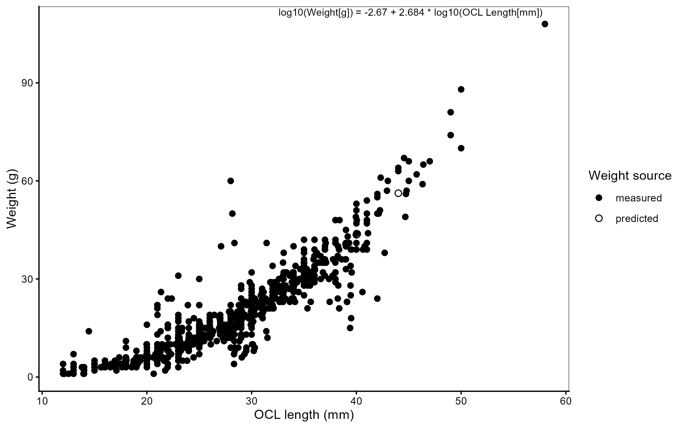
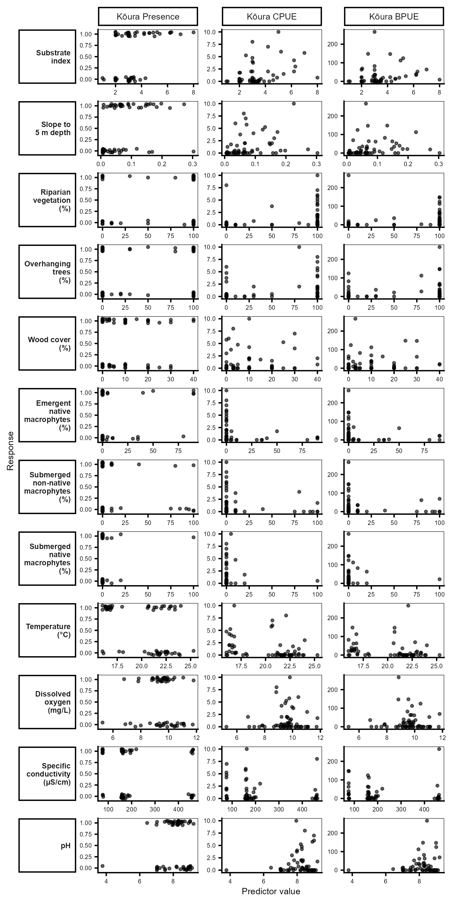
Chapter 5 — Supplementary information
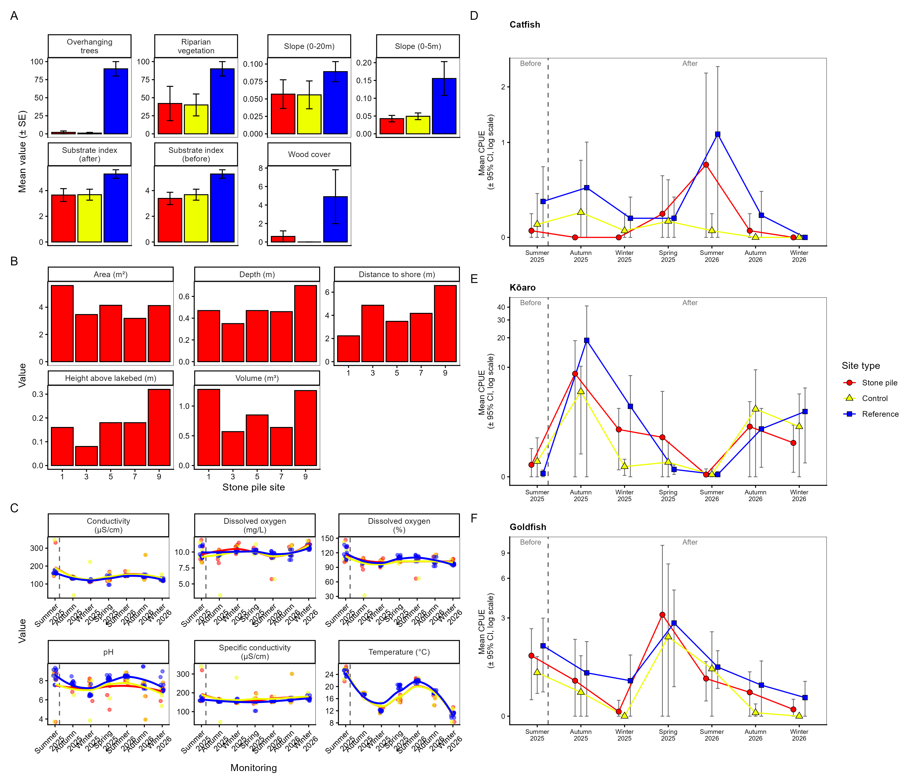
Citation
BibTeX citation:
@online{raven2026,
author = {Raven, Olivier V. and Kusabs, Ian A. K. and Holmes, Robin
and Burdon, Francis J. and Özkundakci, Deniz},
title = {Synthesis},
date = {2026-07-24},
langid = {en}
}
For attribution, please cite this work as:
Raven OV, Kusabs IAK, Holmes R, et al (2026) Synthesis. In: